Introduction
Pro Max Matrimony, developed by Narjis Infotech, is a comprehensive matrimonial platform designed to simplify matchmaking, member management, communication, and complete platform administration. It provides powerful tools for members, staff, franchises, and administrators to manage the entire matrimonial ecosystem from a centralized platform.
Key Features
- Easy
Registration
Simple and user-friendly registration process to create and manage member profiles. - Multiple
Search
Advanced search options with multiple filters to help members find suitable profiles efficiently. - Personalized
Matchmaking
Matchmaking based on member preferences, personal details, interests, and partner requirements. - Profile
Management
Complete management of member profiles, personal information, family details, preferences, photos, and profile status. - Membership Plan
Management
Create and manage membership plans, features, access permissions, validity, and plan-based member benefits. - Interest
Management
Manage sending, receiving, accepting, declining, and tracking member interests. - Notification
Management
Manage important notifications and updates for members, staff, and other users. - Secure
Platform
Secure management of member information with controlled access, permissions, and privacy settings. - Voice & Video
Calling
Enable members to communicate through integrated voice and video calling features. - App Feature
Enable/Disable
Control individual application features by enabling or disabling them according to business requirements. - Website Appearance
Management
Manage website appearance, content, banners, sections, and other visual elements from the administration panel. - App
Appearance Management
Manage application appearance and configurable app elements to maintain a consistent user experience. - Affiliate
Marketing
Manage affiliate partners, referrals, commissions, and affiliate-based member acquisition. - Staff
Module
Manage staff members, responsibilities, attendance, activities, and staff-related operations. - Franchise
Module
Manage franchise operations, franchise members, sales activities, and franchise-related reporting. - Member
Field Enable/Disable
Control which member profile fields are available or required across the platform. - Language
Master
Manage multiple languages and language-related content to support a multilingual matrimonial platform.
Technology Stack
Technology used for this product.
Backend Development
- PHP 8.2
- MySQL – Database
- PHP Framework – Laravel 12
Admin & Website Development
- HTML 5
- CSS 3
- Bootstrap – v5
- jQuery – v3.7.1
App Development
- Framework – Flutter (Cross-Platform for Android & iOS)
- Programming Language – Dart (SDK 3.8+)
- Architecture – Feature-First Clean Architecture (Repository & Provider Pattern)
Installation Requirements
Pro Max – pre-installation checklist. Keep the following accounts, credentials and access ready before starting the installation.
Server and Hosting Requirements
- cPanel / Hosting Control Panel Login
- PHP 8.2+ or the version required by the project
Third-Party API Integrations
- Firebase Account – For chat and push notifications.
- Payment Gateway Account – For membership plan purchases from members.
- Email Account / SMTP Credentials – For email templates.
- SMS Gateway Account – For OTP verification and SMS notifications.
- WhatsApp Business API Provider – For WhatsApp messaging.
- ZEGO CLOUD Account – For voice and video calling.
- Google Analytics Account / Measurement ID – For website analytics.
- Callyzer API Credentials – For lead tracking and lead generation data integration.
Mobile Application Requirements
- Google Play Console Account – For publishing the Android application on Google Play.
Admin Dashboard
The ProMax Matrimony Admin Dashboard provides a centralized overview of the complete matrimonial platform. It allows administrators to monitor members, approvals, earnings, activities, leads, staff, franchise operations, payments, content, and website/app settings from a single dashboard.
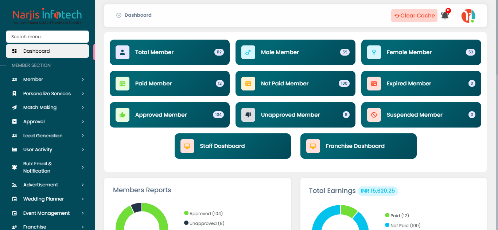
Dashboard Overview
The dashboard displays important statistics and reports in an easy-to-understand format:
- Total Members – View the total number of registered members.
- Male Members – Monitor the total male member profiles.
- Female Members – Monitor the total female member profiles.
- Paid Members – View members with active paid membership plans.
- Not Paid Members – Track members who have not purchased a membership.
- Expired Members – View expired membership accounts.
- Approved Members – Monitor approved member profiles.
- Unapproved Members – View profiles pending approval.
- Suspended Members – Monitor suspended member accounts.
- Staff Dashboard – Quick access to staff-related activities and management.
- Franchise Dashboard – Manage and monitor franchise operations.
Reports & Analytics
The dashboard provides visual reports for better monitoring and management:
Members Reports
Approved Members
Unapproved Members
Suspended Members
Earnings Reports
Paid Members
Not Paid Members
Expired Members
Total Earnings
Members Gender Reports
Male Members
Female Members
Photo Approval Pending
Displays pending photos requiring administrator approval.
Members Yearly Reports
Year-wise/month-wise member registration and approval statistics.
Approved, Unapproved and Suspended member data.
Earning Reports
Graphical representation of platform earnings over different months.
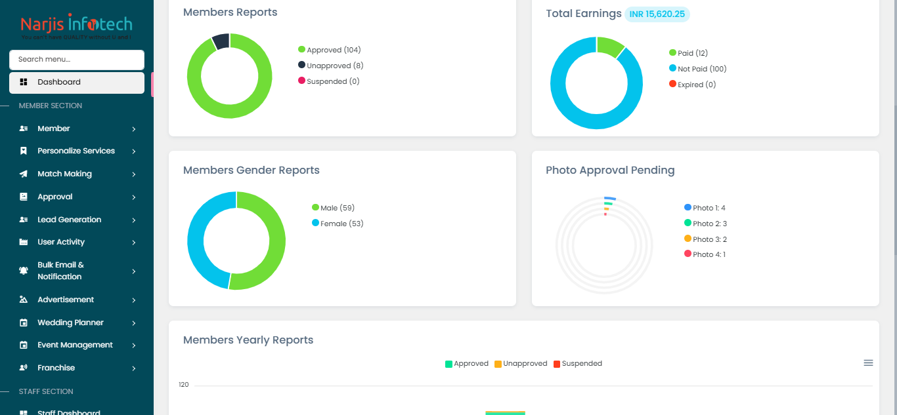
All Members
The Member section provides centralized management and reporting for member profiles, including All Members, Online Members, Featured Members, Active/Paid Members, Expired Members, Sales Reports, Follow-up Reports, Deleted Profiles, and Member Login History.
The All Members section provides a centralized interface to manage and monitor all registered matrimonial profiles. Administrators can search, filter, approve, suspend, assign, and perform various actions on member profiles from a single screen.

Add New Member
Administrators can manually create and register a new member profile using the Add New Member option.
Member Selection & Bulk Actions
- Select individual members or use Select All.
- Delete selected members.
- Approve selected members.
- Unapprove selected members.
- Suspend selected members.
Staff Assignment
Administrators can assign selected members to a particular staff member for follow-up and profile management.
Franchise Assignment
Members can be assigned to a particular franchise for centralized management.
Search & Filter
The system provides search and filtering options to quickly find specific member profiles based on available member information.
Member Status Tabs
The member list can be categorized using dedicated status tabs:
- All – Displays all registered members.
- Approved List – Displays approved member profiles.
- Unapproved List – Displays profiles awaiting approval.
- Suspended List – Displays suspended member profiles.
- Paid List – Displays members with paid membership.
- Expired List – Displays members whose membership has expired.
- Featured List – Displays profiles marked as featured.
Member Actions
Administrators can perform different actions directly from the member profile:
- View Profile – View the member's complete profile.
- Edit Profile – Update member information.
- More Options – Access additional member-related actions.
- Active to Paid – Manage membership/payment status.
- Download Biodata – Download the member's biodata.
- Match – View suitable matrimonial matches for the member.
- Comments – Add or review internal comments related to the member.
- Send Confirmation Email – Send a confirmation email to the member.
Member Actions
Each member record displays key details such as Member ID, Name, Contact Details, Gender, Age, Membership Plan, User Type, Religion, Marital Status, Staff/Franchise Assignment, Login & Registration Details, and Account Status.
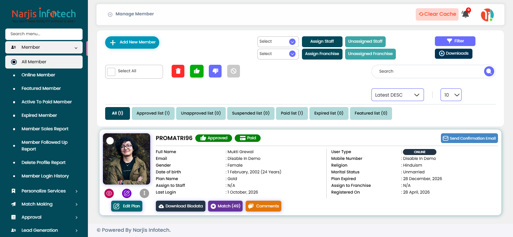
Online Members
The Online Members section provides a centralized interface to manage and monitor all matrimonial profiles that have registered themselves through the website. Administrators can search, filter, approve, unapprove, suspend, feature, and assign these members from a single screen, and can also verify their contact details, upgrade them to paid plans, download their biodata, and review their matches.
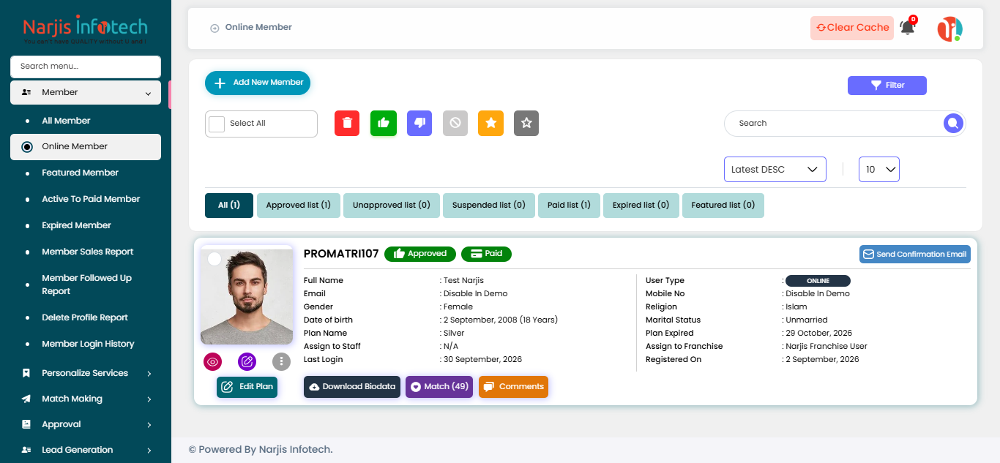
Member Management Features
Add New Member
Administrators can manually create and register a new member profile using the Add New Member option.
Member Selection & Bulk Actions
- Select individual members or use Select All.
- Delete selected members.
- Approve selected members.
- Unapprove selected members.
- Suspend selected members.
Staff Assignment
Administrators can assign selected members to a particular staff member for follow-up and profile management.
Franchise Assignment
Members can be assigned to a particular franchise for centralized management.
Search & Filter
The system provides search and filtering options to quickly find specific member profiles based on available member information.
Member Status Tabs
The member list can be categorized using dedicated status tabs:
- All – Displays all registered members.
- Approved List – Displays approved member profiles.
- Unapproved List – Displays profiles awaiting approval.
- Suspended List – Displays suspended member profiles.
- Paid List – Displays members with paid membership.
- Expired List – Displays members whose membership has expired.
- Featured List – Displays profiles marked as featured.
Member Actions
Administrators can perform different actions directly from the member profile:
- View Profile – View the member's complete profile.
- Edit Profile – Update member information.
- More Options – Access additional member-related actions.
- Active to Paid – Manage membership/payment status.
- Download Biodata – Download the member's biodata.
- Match – View suitable matrimonial matches for the member.
- Comments – Add or review internal comments related to the member.
- Send Confirmation Email – Send a confirmation email to the member.
Member Actions
Each member record displays key details such as Member ID, Name, Contact Details, Gender, Age, Membership Plan, User Type, Religion, Marital Status, Staff/Franchise Assignment, Login & Registration Details, and Account Status.
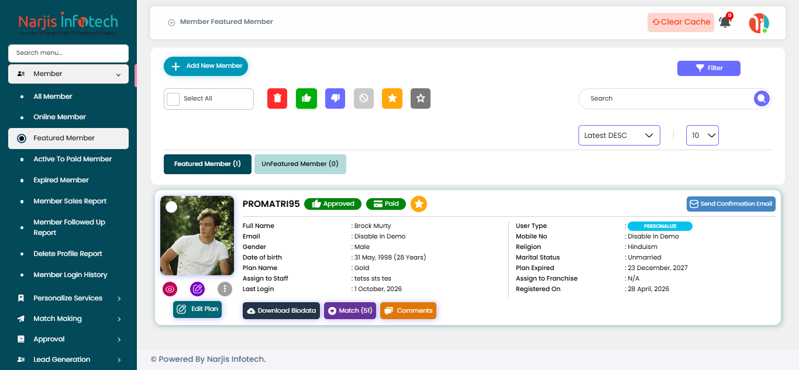
Featured Member
Admin can feature a paid member’s profile or remove it from the Featured Profiles

Active To Paid Member
Admin can assign a membership plan to any user from the Admin Panel.
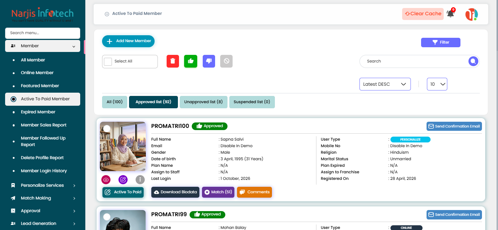
Expired Member
When a user’s existing membership plan reaches its expiry date, the user will automatically be listed under Expired Members in the Admin Panel. The Admin can review the expired membership and renew the user’s membership plan directly from the Admin Panel.
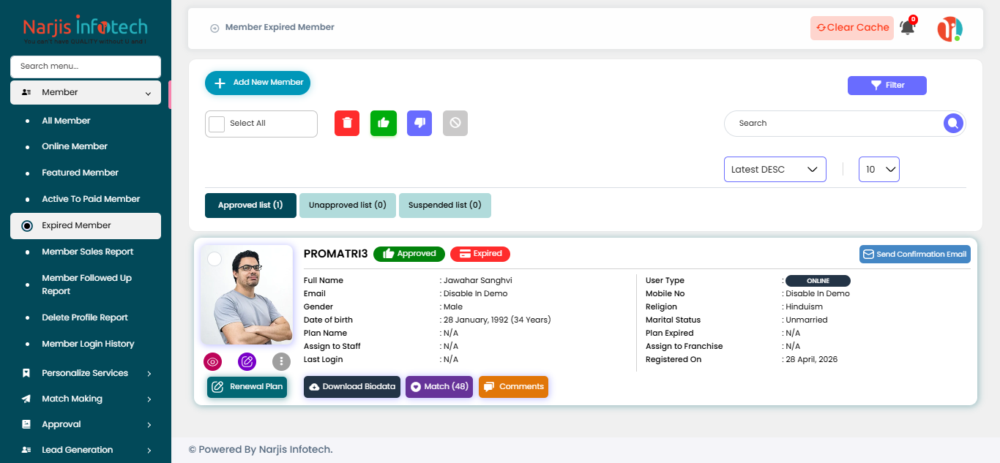
Member Sales Report
The Member Sales Report module enables administrators to view and manage all membership plan sales made by registered members. It provides complete payment information, plan details, invoice access, and total revenue statistics.
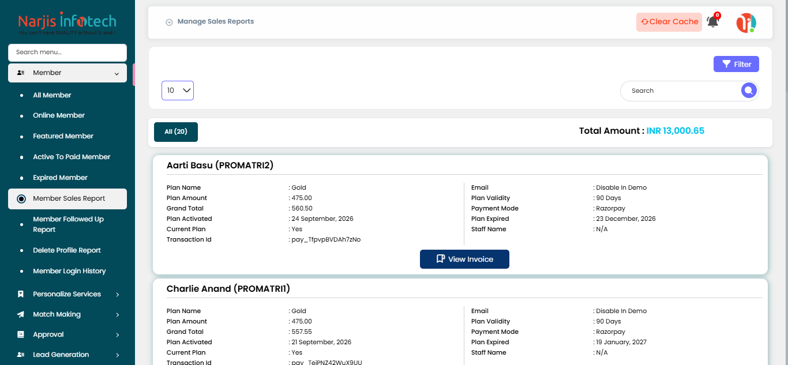
- Sales Summary: Displays the total number of sales records.
- Search Option: Quickly search sales records by Member Name, Member ID, Email Address, or Plan Name.
- Filter: Filter sales reports by Date Range, Membership Plan, Plan Currency, Staff List, Franchise List.
- Member Sales Details: View complete member, membership, and payment information, including plan details, validity, transaction information, and invoice data.
- View Invoice: View Invoice, print Invoice, download invoices (PDF), and verify payment details.
Member Followed Up Report
The Member Followed Up Report allows administrators to track member follow-up activities, assign staff or franchises, manage comments, and monitor follow-up status.
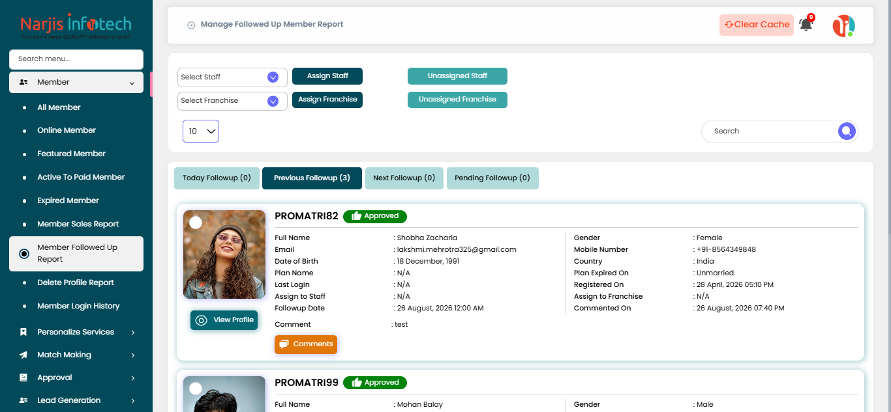
- Staff & Franchise Assignment: Assign or unassign staff and franchise members for follow-up management.
- Search Option: Quickly search follow-up records by Member Name, Member ID, Email Address, or Mobile Number.
- Follow-Up Categories: View members under Today's Follow-Up, Previous Follow-Up, Next Follow-Up, and Pending Follow-Up.
- Member Follow-Up Details: View complete member, contact, follow-up, assigned staff/franchise, and comment information.
- View Profile: Access the complete member profile and follow-up history.
- Comments: Add, view, and manage follow-up comments for each member.
- Follow-Up Management: Track and update follow-up activities for efficient member communication.
Delete Profile Report
The Delete Profile Report module enables administrators to manage member profile deletion requests efficiently. It allows admins to review submitted requests, verify member details, search requests, ignore invalid requests, or permanently delete member profiles from the system, ensuring secure and controlled account management.
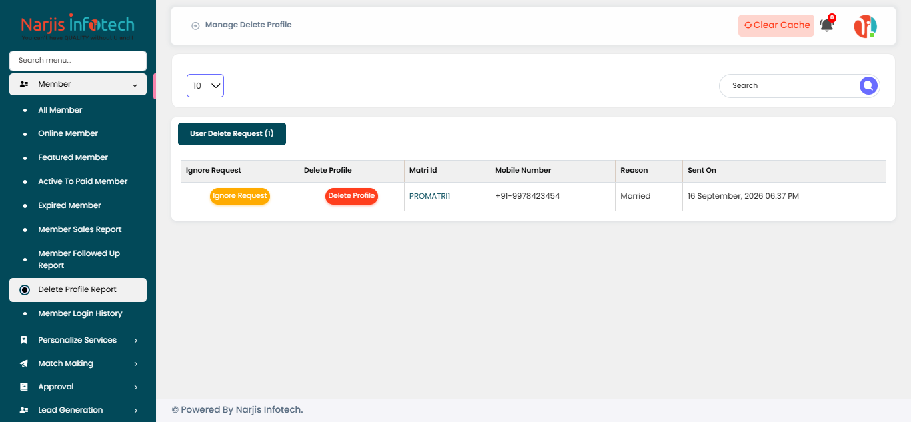
- User Delete Requests: Displays all profile deletion requests submitted by members.
- Search Option: Quickly search delete requests by Member ID, Mobile Number, or Reason.
- Delete Request Details: View complete request information, including Member ID, Mobile Number, Deletion Reason, and Request Date.
- Ignore Request: Ignore a member's profile deletion request and retain the account.
- Delete Profile: Permanently delete the member's profile from the system after verification.
Member Login History
The Member Login History module enables administrators to monitor and track member login activities. It records login details such as login time, login source, browser, operating system, and IP address, helping administrators improve security, monitor user activity, and troubleshoot login-related issues.
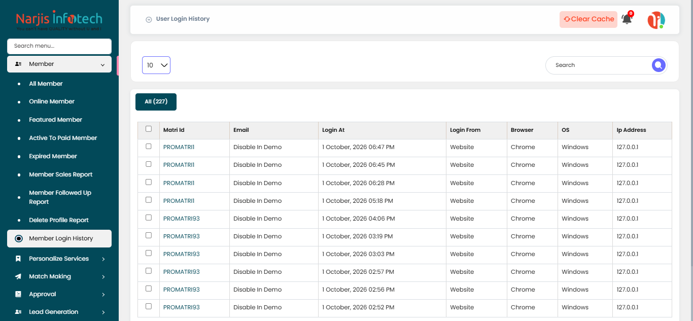
- Login Records: Displays the complete login history of all members.
- Search Option: Quickly search login records by Member ID, Email Address, or IP Address.
- Login Details: View login information, including Member ID, Email Address, Login Date & Time, Login Source, Browser, Operating System, and IP Address.
- Activity Monitoring: Track member login activity across different devices and platforms.
- Security Monitoring: Monitor login sources and IP addresses to identify suspicious or unauthorized access attempts.
Personalize Member
The Personalize Member module allows administrators to customize member profiles by assigning personalized settings, preferences, and services. It helps provide a tailored matchmaking experience based on the member's specific requirements.
Add New Member
Administrators can manually create and register a new member profile using the Add New Member option.
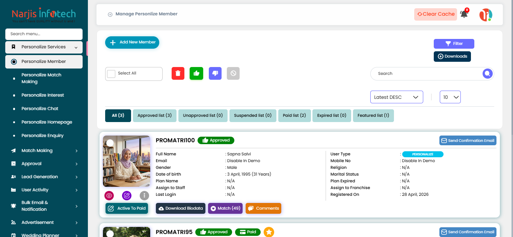
Member Selection & Bulk Actions
- Select individual members or use Select All.
- Delete selected members.
- Approve selected members.
- Unapprove selected members.
- Suspend selected members.
Staff Assignment
Administrators can assign selected members to a particular staff member for follow-up and profile management.
Franchise Assignment
Members can be assigned to a particular franchise for centralized management.
Search & Filter
The system provides search and filtering options to quickly find specific member profiles based on available member information.
Member Status Tabs
The member list can be categorized using dedicated status tabs:
- All – Displays all registered members.
- Approved List – Displays approved member profiles.
- Unapproved List – Displays profiles awaiting approval.
- Suspended List – Displays suspended member profiles.
- Paid List – Displays members with paid membership.
- Expired List – Displays members whose membership has expired.
- Featured List – Displays profiles marked as featured.
Member Actions
Administrators can perform different actions directly from the member profile:
- View Profile – View the member's complete profile.
- Edit Profile – Update member information.
- More Options – Access additional member-related actions.
- Active to Paid – Manage membership/payment status.
- Download Biodata – Download the member's biodata.
- Match – View suitable matrimonial matches for the member.
- Comments – Add or review internal comments related to the member.
- Send Confirmation Email – Send a confirmation email to the member.
Member Actions
Each member record displays key details such as Member ID, Name, Contact Details, Gender, Age, Membership Plan, User Type, Religion, Marital Status, Staff/Franchise Assignment, Login & Registration Details, and Account Status.

Personalize Match Making
The Personalize Match Making module enables administrators to create and manage personalized matches between members. It helps manually pair compatible members, track matchmaking records, and monitor the number of meetings scheduled for each match.
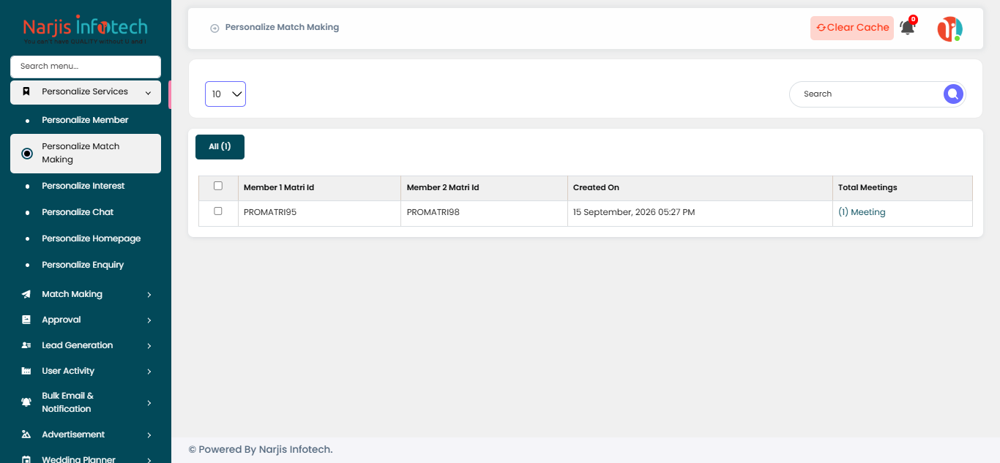
- Match Records: Displays all personalized matchmaking records.
- Search Option: Quickly search match records by Member 1 Matri ID or Member 2 Matri ID.
- Match Details: View Member 1 ID, Member 2 ID, Match Creation Date, and Total Meetings.
- Meeting Management: Track the total number of meetings scheduled for each personalized match.
- Match Monitoring: Monitor and manage personalized matchmaking activities efficiently.
Personalize Interest
TThe Personalize Interest Report section provides a centralized view of interest interactions between users/members. It allows administrators to monitor which matrimonial profiles have exchanged interest, view the response status, and track when each interaction was created.
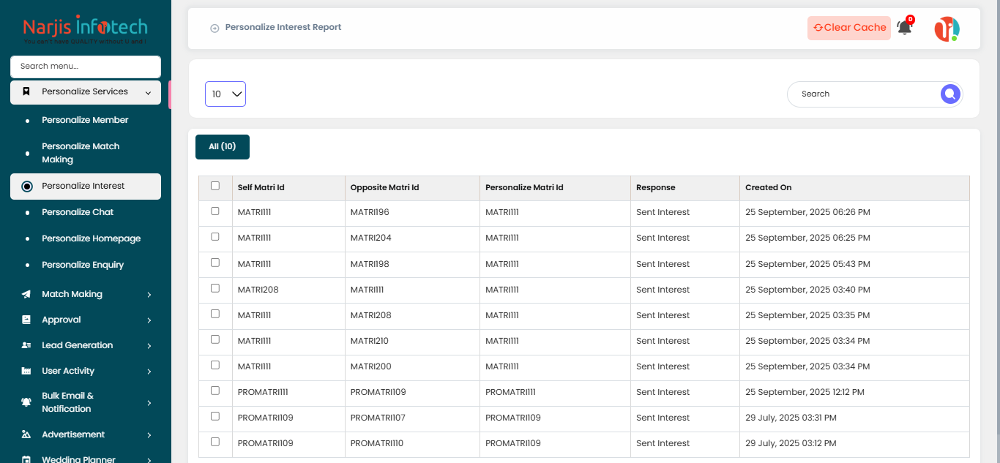
- Interest Records Listing – Displays all personalized interest records in a structured table.
- Self Matri ID – Shows the Matrimonial ID of the member who initiated the interest.
- Opposite Matri ID – Displays the Matrimonial ID of the member receiving the interest.
- Personalize Matri ID – Identifies the personalized matrimonial profile associated with the interaction.
- Response Status – Shows the current response, such as “Sent Interest.”
- Created On – Displays the date and time when the interest interaction was created.
- Search Functionality – Administrators can quickly search and locate specific interest records.
- Record Selection – Checkboxes allow individual records to be selected for further actions.
Personalize Chat
The Chat / Admin Communication section allows users to communicate directly with the website administrator/support team. It provides a simple chat interface where users can send queries, requests, or concerns and receive responses from the admin.
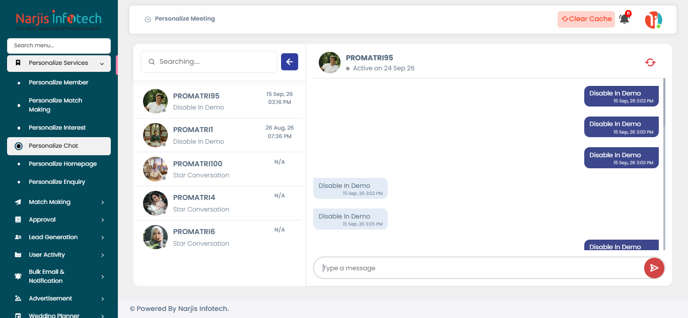
- Admin Chat – Enables direct communication between the user and the administrator.
- Conversation History – Displays previously exchanged messages between the user and admin.
- Message Timestamps – Shows the date and time of each sent or received message.
- Admin Online Status – Indicates whether the admin/support representative is currently online.
- Search Conversation – Allows users to search within the available conversation/contact list.
- Message Composer – Provides a text field for entering queries or messages.
- Send Message – Allows users to send messages directly to the administrator.
- Refresh Chat – Enables users to refresh the conversation and view the latest messages.
- Back Navigation – Allows users to return to the previous screen.
Personalize Homepage
The Personalize Homepage module allows administrators to manage and customize the content displayed on the website’s homepage. It provides a centralized interface to update homepage banners, headings, titles, descriptions, features, and other promotional sections according to the selected language.
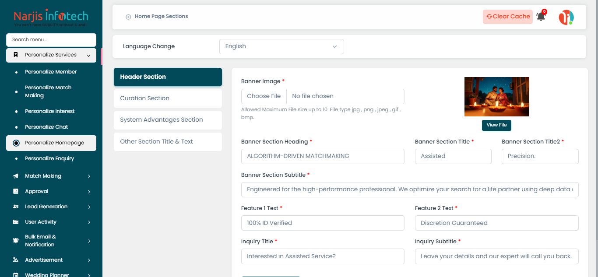
- Language Selection – Allows administrators to manage homepage content in different languages.
- Header/Banner Management – Upload and update the main homepage banner image and promotional content.
- Banner Heading & Titles – Customize the main heading, title, and secondary title displayed on the homepage.
- Banner Subtitle – Add or update descriptive text that explains the platform or its services.
- Feature Highlights – Manage key promotional points such as ID verification, privacy, security, or other platform benefits.
- Curation Section – Manage curated content and messages presented to homepage visitors.
- System Advantages – Configure content highlighting the key advantages and benefits of the platform.
- Other Section Title & Text – Manage additional homepage sections and their supporting content.
- Image Preview – View the currently uploaded banner image before or after updating it.
Personalize Enquiry
The Personalize Enquiry section allows administrators to view and manage enquiries submitted by users. It provides a centralized list of enquiry records along with the user’s contact details, IP address, and enquiry creation date.
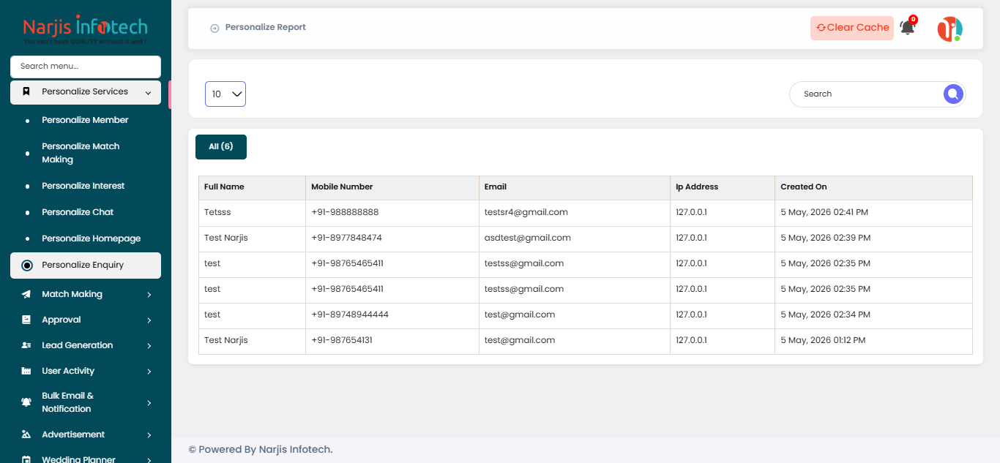
- Enquiry Listing – Displays all submitted enquiries in a structured table.
- Full Name – Shows the name provided by the user when submitting the enquiry.
- Mobile Number – Displays the user's contact/mobile number for follow-up communication.
- Email – Shows the email address associated with the enquiry.
- IP Address – Records the IP address from which the enquiry was submitted for tracking and reference.
- Created On – Displays the date and time when the enquiry was created.
- Search Functionality – Allows administrators to quickly search for specific enquiry records.
Match Making
The Matchmaking section provides two methods for finding suitable matrimonial matches:

- Manual Profile Matchmaking: Admin can manually compare and select suitable profiles based on the required criteria and recommend or assign matching profiles to members.
- Auto
Matchmaking: The Auto
Matchmaking system automatically identifies
and sends suitable matrimonial profile matches to users
based on predefined matching criteria. It reduces manual
effort by allowing administrators to configure matching
rules, schedule match delivery, and select the preferred
communication method.
- Match Send Date – Allows the administrator to specify the date on which matches should be processed and sent to users.
- Send Total Match to User – Defines the number of matching profiles to be sent to each user.
- Match Sending Mode – Provides a communication method for delivering matches, such as Email.
- Match Criteria – Allows administrators to select multiple matching criteria, including Marital Status, Age, Height, Mother Tongue, Religion, Caste, Country, and Education.
- Match Sending Mode – Allows administrators to choose the preferred notification method: Email, SMS, or Both.
- Submit – Starts/saves the configured auto-match process based on the selected criteria and settings.
- Recent Auto Match Scheduler History - Displays recent automated matchmaking activities, including date, sending mode, status, total members, matches sent, progress, start/completion time, and complete history access.
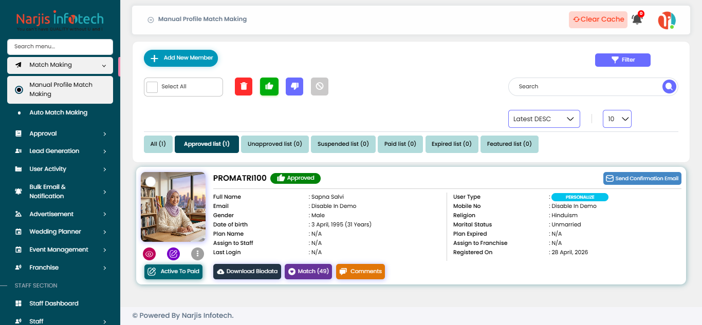
Photos
The Approval section allows administrators to review and manage member submissions, including Photos, ID Proofs, Selfie Photos, and Horoscopes, before approval.
The Photos Approval section allows administrators to review and manage profile photos uploaded by members. Administrators can check each uploaded photo and approve or reject it based on the platform's photo approval requirements.
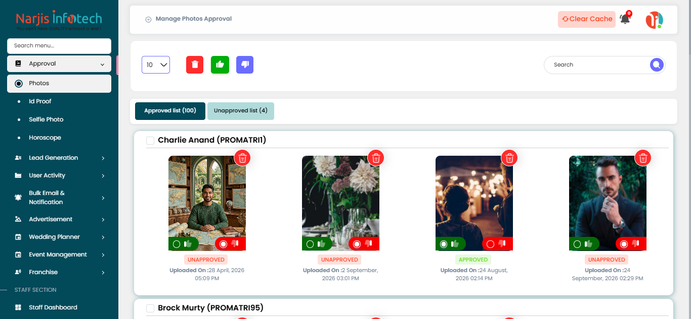
- Approved List – Displays photos that have been reviewed and approved by the administrator.
- Unapproved List – Displays photos that are still pending approval or have not yet been approved.
- Member-wise Photo Management – Groups uploaded photos under the respective member's name and Matrimonial ID.
- Photo Preview – Allows administrators to visually review each uploaded photo before taking an action.
- Approve Photo – Administrators can approve an individual photo using the approval/like option.
- Reject Photo – Administrators can reject an individual photo using the disapproval/dislike option.
- Delete Photo – Provides an option to remove an uploaded photo from the profile.
- Bulk Selection – Checkboxes allow administrators to select profiles/photos for bulk actions where applicable.
- Search – Allows administrators to search for a specific member or photo record.
- Upload Date & Time – Displays when each photo was uploaded.
- Approval Status – Clearly indicates whether a photo is Approved or Unapproved.
ID Proof
The ID Proof Verification section is an admin-only module used to verify the identity of members and validate their profiles. Members can upload their identity documents, which are reviewed by the administrator for verification. The submitted ID proof is kept confidential and is never displayed to other users, even after approval.
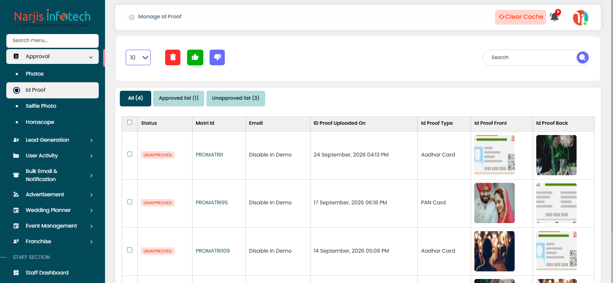
- Admin Verification Only – ID proof is submitted solely for admin review and member profile verification.
- Document Review – Admin can review the uploaded ID proof, including front and back images.
- Approve / Reject – Admin can approve or reject the submitted identity document.
- Verification Status – Maintains the approval status of each member’s ID proof.
- Privacy Protection – ID proof documents are not visible to other users or members, even after approval.
- Profile Verification – An approved ID proof is used to verify the authenticity of the member’s profile.
Selfie Photo
The Selfie Photo Verification section is an admin-only feature used to verify the identity and authenticity of a member’s profile through a submitted selfie photo. The selfie is reviewed by the administrator and is used only for verification purposes. It is not displayed to other users, even after approval.
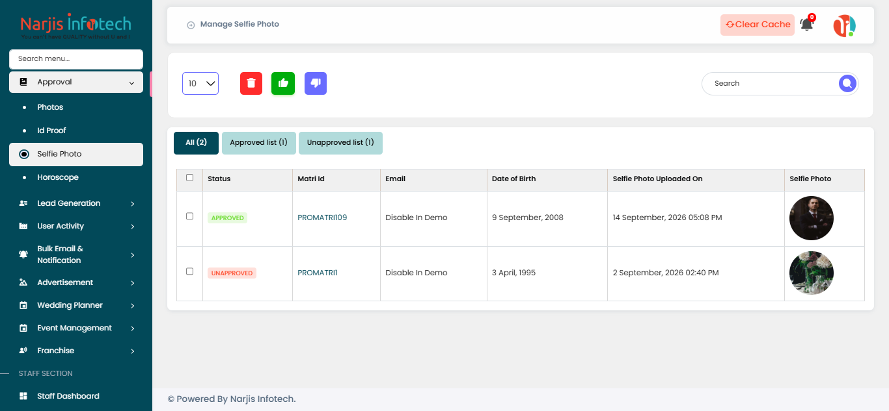
- Admin Verification Only – Selfie photos are accessible only to administrators for verification.
- Selfie Photo Review – Admin can review the submitted selfie associated with the member profile.
- Approve / Reject – Admin can approve or reject the selfie after verification.
- Verification Status – Displays the current status, such as Approved or Unapproved.
- Member Details – Shows Matri ID, email, date of birth, and selfie upload date for verification reference.
- Privacy & Security – The selfie photo is not visible to other members/users, even after approval.
- Profile Verification – An approved selfie confirms that the submitted photo has been reviewed for profile verification purposes.
- Search & Filtering – Admin can search and manage selfie verification records efficiently.
Horoscope
The Horoscope Approval section allows members to upload their horoscope for verification and approval by the administrator. Once the uploaded horoscope is reviewed and approved, it becomes visible to other users according to the platform's profile visibility rules.
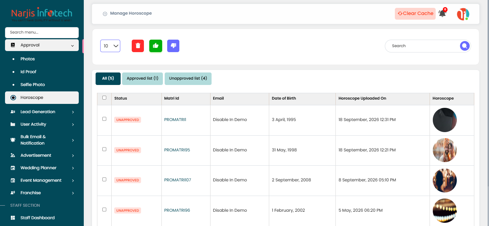
- User Horoscope Upload – Members can upload their horoscope through their profile.
- Admin Review – Uploaded horoscopes are sent to the admin panel for verification and approval.
- Approval / Rejection – Admin can approve or reject the submitted horoscope.
- Verification Status – Records are categorized as Approved or Unapproved.
- Member Details – Displays Matri ID, email, date of birth, and horoscope upload date for reference.
- Horoscope Preview – Admin can view the uploaded horoscope before taking an action.
- Privacy & Approval Control – The horoscope remains unavailable to other users until it is approved by the administrator.
- Post-Approval Visibility – Once approved, the horoscope can be displayed to other eligible users as part of the member's profile.
- Search & Management – Admin can search and manage submitted horoscope records efficiently.
- Bulk Actions – Selection and action controls are available for managing multiple records where applicable.
Lead Generation
The Lead Generation section helps administrators manage and track leads, including Fresh Follow-ups, Repeated Follow-ups, Closed Leads, Staff-wise Lead Reports, Lead Generation Reports, and Lead Follow-up Reports.
The Lead Generation section allows administrators to manage and track potential members or enquiries before they are converted into registered members. It provides tools to add, import, assign, categorize, follow up, and convert leads into member profiles.
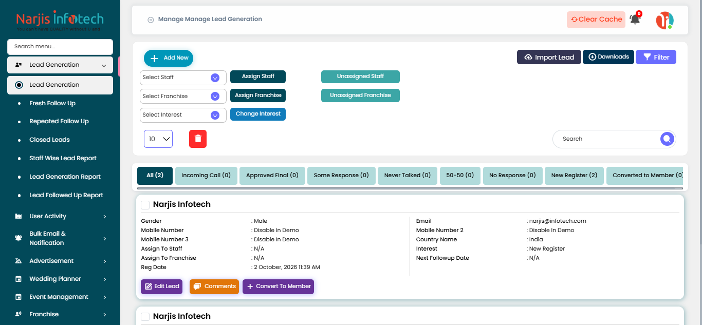
- Add New Lead – Allows administrators to manually create a new lead.
- Import Lead – Enables bulk importing of lead records into the system.
- Lead Assignment – Leads can be assigned to specific staff members or franchises.
- Unassigned Leads – Provides options to identify and manage leads that are not currently assigned to staff or a franchise.
- Change Interest – Allows administrators to update the interest/category associated with a lead.
- Lead Status Categories – Leads can be categorized based on their current communication and follow-up status, including Incoming Call, Approved Final, Some Response, Never Talked, 50-50, No Response, and New Registration.
- Search & Filter – Helps administrators quickly find leads using search and filtering options.
- Download Leads – Allows lead data to be downloaded for reporting or further processing.
- Edit Lead – Enables administrators to update lead information.
- Comments – Allows staff to add notes or comments related to lead communication and follow-ups.
- Follow-up Management – Stores the next follow-up date to help staff track pending communication.
- Convert to Member – Allows a qualified lead to be converted into a registered member profile.
- Lead Information – Displays important details such as name, gender, contact numbers, email, country, assigned staff/franchise, interest, and registration date.
Fresh Follow Up
The Fresh Follow-Up section helps staff manage and track new leads that require follow-up. It provides lead details, follow-up status, and actions to ensure potential members are contacted and managed effectively.
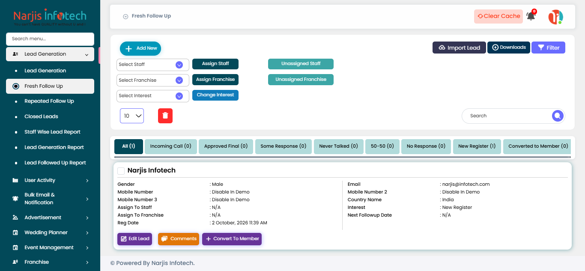
It helps the team identify fresh leads, assign them to staff, record communication, schedule follow-ups, and convert interested leads into members.
Repeated Follow Up
The Repeated Follow-Up section helps staff manage leads that require multiple or ongoing follow-ups. It allows the team to track previous communication, monitor follow-up status, and continue engagement with leads until the enquiry is resolved or converted.
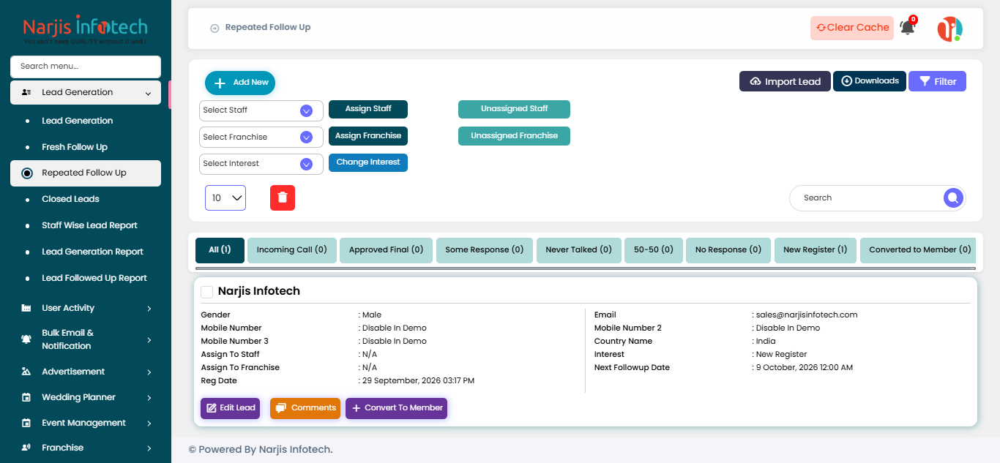
It helps ensure that no potential lead is missed due to pending or repeated follow-up requirements.
Closed Leads
The Closed Lead section is used to manage leads whose follow-up process has been completed or closed. It provides a record of leads that no longer require active follow-up, helping staff maintain a clear and organized lead history.
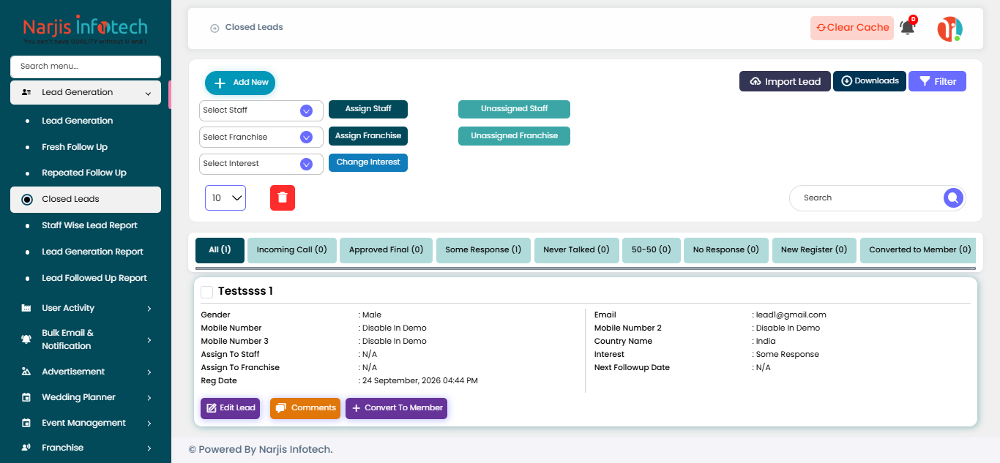
It helps the team track completed lead activities, maintain records, and distinguish closed leads from active follow-ups.
Staff Wise Lead Report
The Staff Wise Lead Report provides a consolidated view of lead activity and performance for each staff member. It helps administrators monitor how leads are distributed across staff and track their current follow-up status.
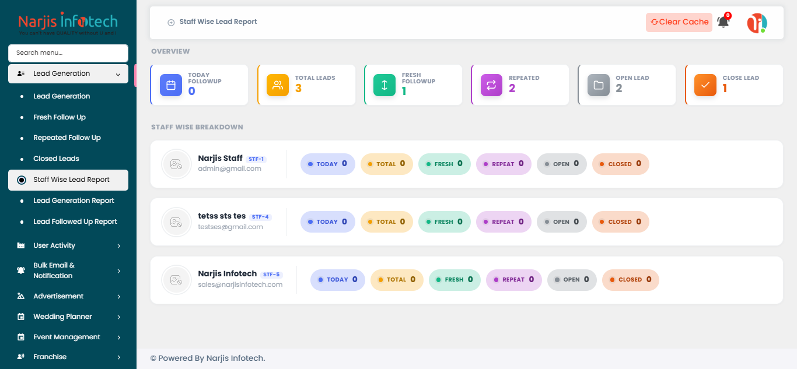
- Today Follow-Up – Shows leads scheduled for follow-up today.
- Total Leads – Displays the total number of leads handled by the staff member.
- Fresh Follow-Up – Shows newly assigned leads requiring initial follow-up.
- Repeated Follow-Up – Displays leads requiring further or repeated follow-up.
- Open Leads – Shows leads that are still active and require action.
- Closed Leads – Displays leads whose follow-up process has been completed.
- Staff-wise Breakdown – Provides individual lead statistics for each staff member.
- Staff Information – Displays staff name, email, and staff ID for identification.
Lead Generation Report
The Lead Generation Report provides a consolidated view of lead records and their follow-up information. It helps administrators track each lead, its current interest, assigned staff or franchise, and scheduled follow-up details.
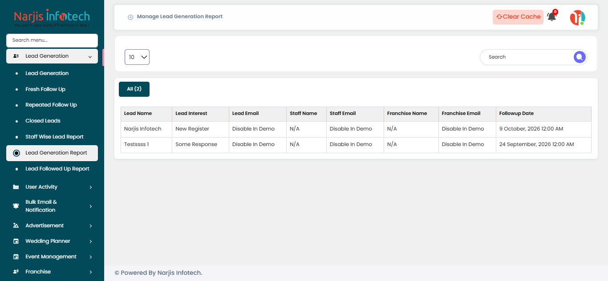
- Lead Information – Displays the lead name, email, and current interest/status.
- Lead Interest – Shows the current stage or interest category, such as New Register or Some Response.
- Staff Assignment – Displays the staff member and staff email assigned to the lead.
- Franchise Assignment – Shows the assigned franchise and franchise email, if applicable.
- Follow-Up Date – Displays the scheduled date and time for the next follow-up.
- Search – Allows administrators to quickly find specific lead records.
Lead Followed Up Report
The Lead Followed Up Report provides a centralized view of leads that have been contacted or scheduled for follow-up. It helps administrators and staff track follow-up activities based on their current follow-up status.
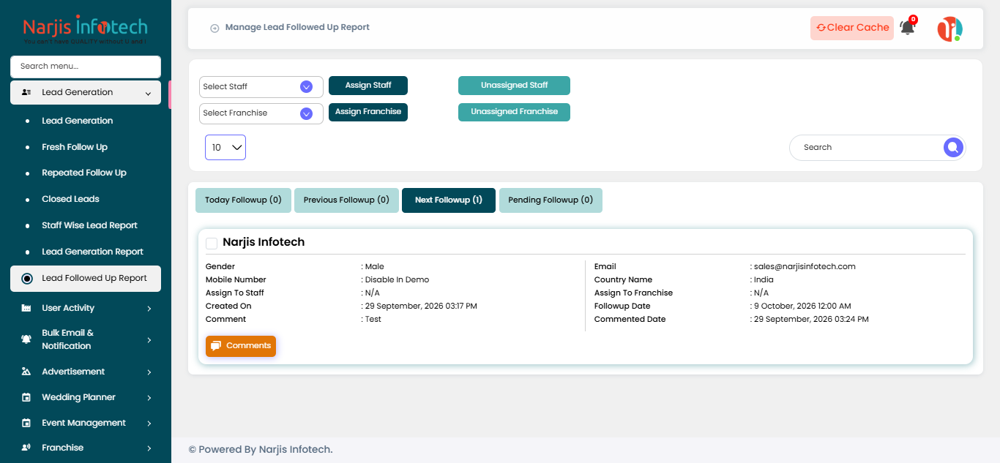
- Today Follow-Up – Displays leads scheduled for follow-up today.
- Previous Follow-Up – Shows leads with completed or past follow-up dates.
- Next Follow-Up – Displays leads scheduled for upcoming follow-up.
- Pending Follow-Up – Shows leads that require follow-up and are still pending.
- Staff Assignment – Allows leads to be assigned to specific staff members.
- Franchise Assignment – Allows leads to be assigned to a specific franchise.
- Follow-Up Details – Displays the follow-up date, comments, and commented date.
- Lead Information – Shows important details such as name, gender, email, mobile number, and country.
- Comments – Allows staff to add or review notes related to lead communication.
- Search – Helps locate specific lead records quickly.
Photo Request List
The User Activity section allows administrators to monitor member interactions, including Photo Requests, Viewed Contacts, Express Interests, Contact Inquiries, and Reported Spam Profiles.
The Photo Request List manages requests made by users to view photos that are protected by the profile owner. When a user’s photos are privacy-protected, another user must send a photo request to view them. The system records these requests along with the sender, receiver, response status, and request date.
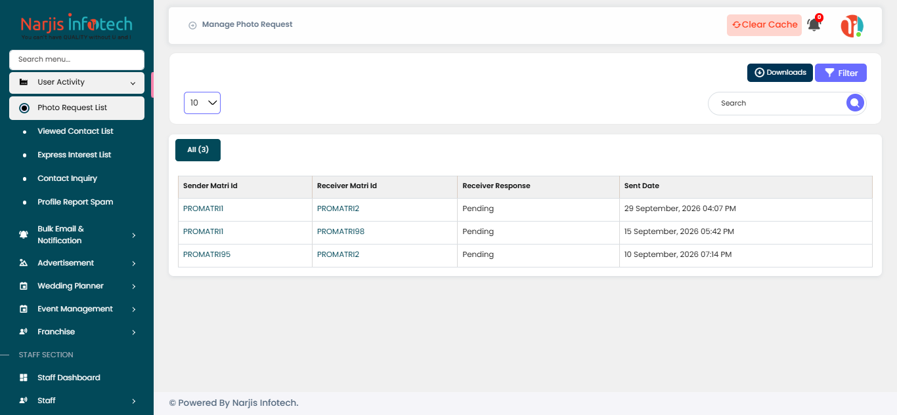
- Photo Privacy Protection – Protected photos are not directly visible to other users.
- Photo Request – Users can request access to view protected photos.
- Sender & Receiver Details – Records the Matri IDs of both users involved in the request.
- Receiver Response – Tracks the response status, such as Pending.
- Sent Date – Records when the photo request was sent.
- Search & Filter – Helps administrators locate specific photo requests.
- Download & Management – Provides options to manage or download request records.
Viewed Contact List
The Viewed Contact List records instances where one member has viewed another member’s contact details. It provides administrators with a clear record of who viewed whose contact information and when.
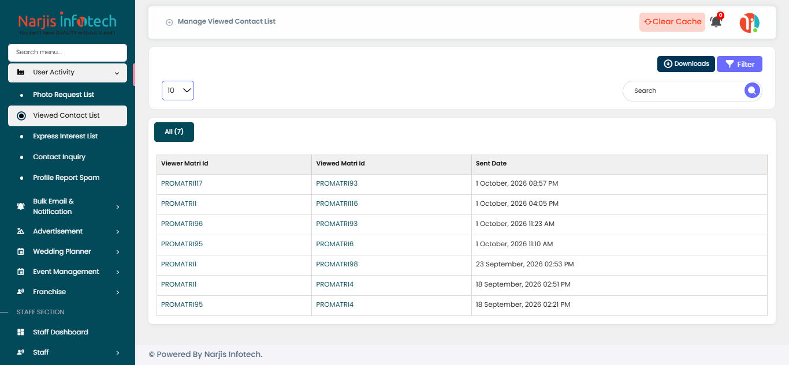
- Viewer Matri ID – Identifies the member who viewed the contact details.
- Viewed Matri ID – Identifies the member whose contact details were viewed.
- View Date & Time – Records when the contact details were accessed.
- Search – Allows administrators to quickly find specific viewing records.
- Filter – Helps narrow down records based on available criteria.
- Download – Allows administrators to download the contact-viewing records.
Express Interest List
The Express Interest List records interest requests sent by one member to another member. It allows administrators to track who expressed interest, who received the request, the response status, and when the request was sent.
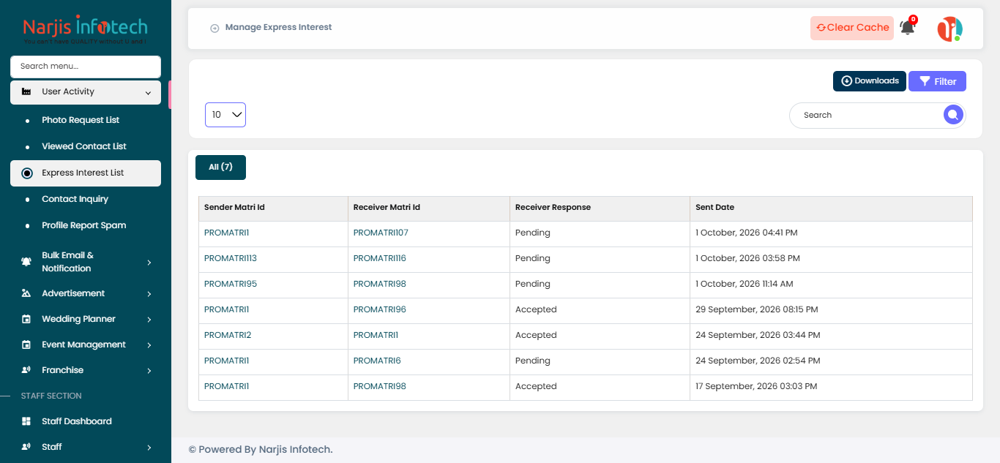
- Sender Matri ID – Identifies the member who expressed interest.
- Receiver Matri ID – Identifies the member who received the interest request.
- Receiver Response – Displays the current response status, such as Pending or Accepted.
- Sent Date – Records the date and time when the interest was sent.
- Search – Allows administrators to quickly find specific interest records.
- Filter – Helps administrators filter interest records based on available criteria.
- Download – Allows interest records to be downloaded for reporting or reference.
Contact Inquiry
The Contact Inquiry section allows administrators to view and manage enquiries submitted by users through the contact form. It provides the submitted contact details along with the subject, message, and submission date for follow-up and reference.
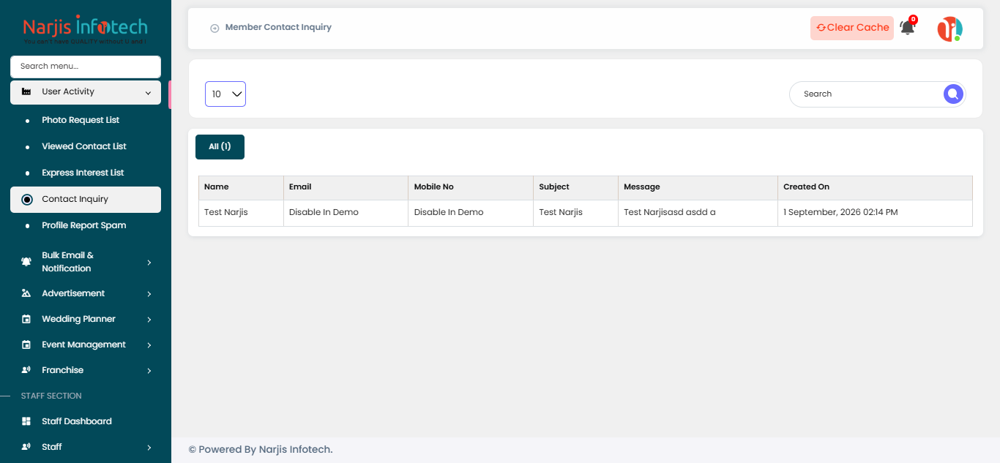
- Name – Displays the name provided by the user.
- Email – Shows the user’s email address for communication.
- Mobile Number – Displays the contact number provided with the enquiry.
- Subject – Identifies the purpose or topic of the enquiry.
- Message – Displays the enquiry or request submitted by the user.
- Created On – Shows the date and time when the enquiry was submitted.
- Search – Allows administrators to quickly find specific enquiries.
Profile Report Spam
The Profile Report / Spam section allows administrators to review reports submitted by users against other profiles. It helps identify profiles that may violate platform guidelines, such as fake profiles or inappropriate behavior, and provides the reported details for administrative review.
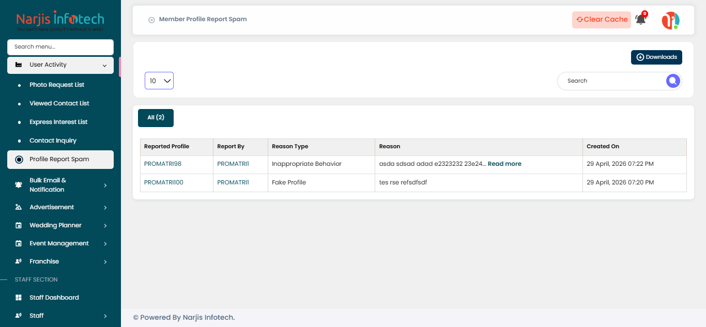
- Reported Profile – Identifies the profile that has been reported.
- Report By – Shows the member who submitted the report.
- Reason Type – Displays the selected report category, such as Fake Profile or Inappropriate Behavior.
- Reason / Description – Provides the detailed explanation submitted by the reporting user.
- Created On – Records the date and time when the report was submitted.
- Read More – Allows administrators to view the complete report description when the text is lengthy.
- Search – Helps administrators quickly locate specific reports.
- Download – Allows report records to be downloaded for reference or administrative review.
Send Bulk Notification
The Bulk Email & Notification section allows administrators to send bulk notifications and emails to selected members.
The Send Bulk Notification feature allows administrators to send notifications to multiple users or a specific user based on selected criteria. It provides a simple way to communicate important updates, announcements, or messages directly to users.
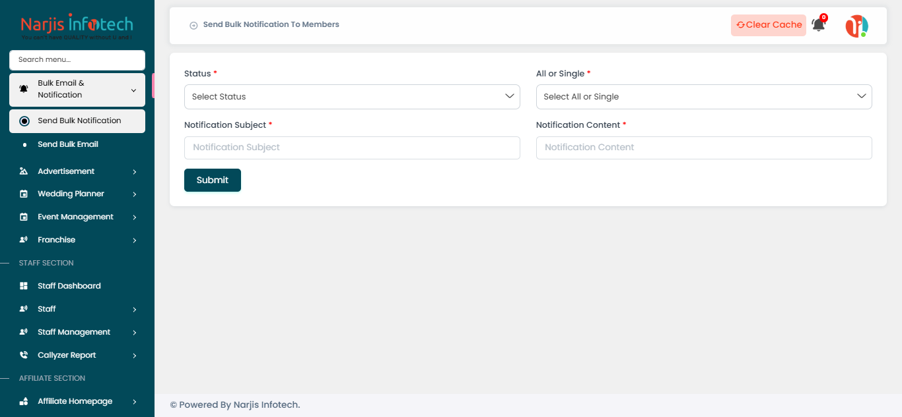
- Status Selection – Allows the admin to select the target users based on their current status.
- All or Single – Provides an option to send the notification to all eligible users or a single selected user.
- Notification Subject – Allows the admin to define the subject/title of the notification.
- Notification Content – Provides a field to enter the complete notification message.
- Submit – Sends the notification to the selected recipients.
- Targeted Communication – Helps administrators deliver relevant information to specific user groups or individual users.
Send Bulk Email
The Send Bulk Email feature allows administrators to send email communications to multiple users or a specific user based on selected criteria. It provides a rich text editor for creating and formatting professional email content.
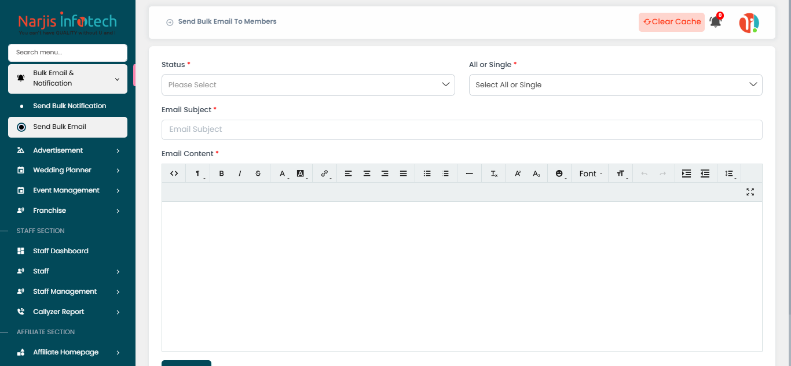
- Status Selection – Allows the admin to select the target users based on their status.
- All or Single – Enables sending the email to all eligible users or a single selected user.
- Email Subject – Allows the admin to define the subject of the email.
- Email Content Editor – Provides a rich text editor to create and format email content.
- Text Formatting – Supports formatting options such as bold, italic, alignment, lists, font selection, links, and other text styling.
- Submit – Sends the composed email to the selected recipients.
- Targeted Email Communication – Helps administrators send relevant announcements, updates, and information to selected users efficiently.
Advertisement Inquiry
The Advertisement Inquiry section allows administrators to review and manage advertisement requests submitted by advertisers. It provides complete inquiry details, including the uploaded banner, advertiser contact information, description, approval status, and submission date.
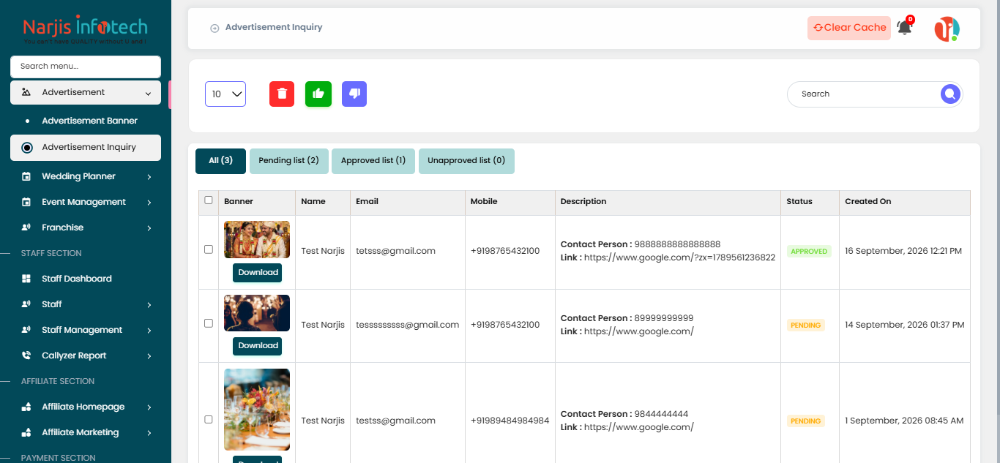
- Advertisement Banner – Displays the banner submitted by the advertiser with an option to download it.
- Advertiser Name – Shows the name of the person or organization submitting the advertisement.
- Email & Mobile – Provides contact details for communication and follow-up.
- Description – Displays important advertisement information such as the contact person and destination link.
- Approval Status – Tracks the inquiry status as Pending, Approved, or Unapproved.
- Approval / Rejection – Admin can review and approve or reject advertisement inquiries.
- Pending List – Provides a separate view of advertisements awaiting admin review.
- Approved List – Displays advertisements that have been approved.
- Search & Management – Helps administrators find and manage specific advertisement inquiries.
- Created On – Shows the date and time when the advertisement inquiry was submitted.
Vendors Category
The Wedding Planner section allows administrators to manage vendor categories, vendor listings, inquiries, and customer reviews.
The Vendors Category section allows administrators to manage categories used to organize vendors and vendor-related services on the platform. It provides a structured way to create, update, and maintain service categories with their respective images and approval status.
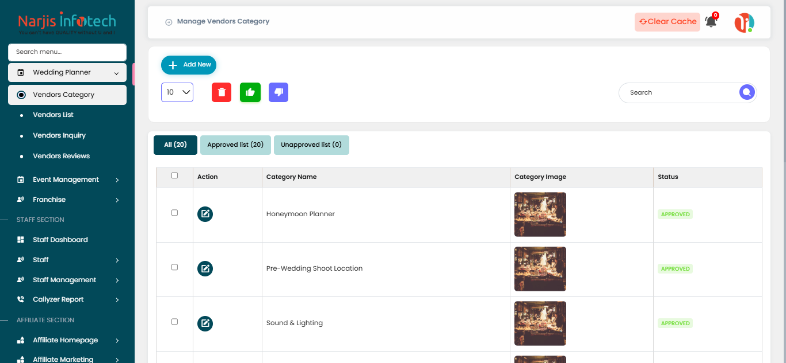
- Add New Category – Allows administrators to create a new vendor category.
- Category Name – Displays the name of the vendor/service category, such as Honeymoon Planner or Pre-Wedding Shoot Location.
- Category Image – Allows an image to be associated with each category for visual representation.
- Approval Status – Displays whether a category is Approved or Unapproved.
- Edit Category – Allows administrators to update existing category information.
- Approve / Reject – Provides controls to manage the approval status of categories.
- Delete Category – Allows administrators to remove unwanted categories.
- Search – Helps administrators quickly locate a specific vendor category.
Vendors List
The Vendors List section allows administrators to manage and maintain all registered vendors and their services on the platform. It provides a centralized view of vendor names, service/venue details, approval status, and management actions.
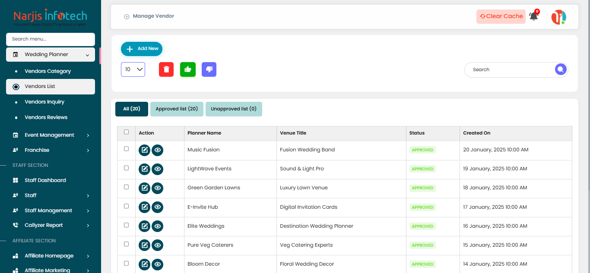
- Add New Vendor – Allows administrators to add a new vendor to the platform.
- Planner Name – Displays the registered vendor or planner name.
- Venue / Service Title – Shows the service or venue offered by the vendor.
- Approval Status – Displays whether the vendor is Approved or Unapproved.
- Edit Vendor – Allows administrators to update vendor information.
- View Vendor – Provides an option to view the vendor's details.
- Approve / Reject – Enables administrators to manage the vendor approval status.
- Delete Vendor – Allows administrators to remove vendor records when required.
- Search – Helps administrators quickly find a specific vendor.
- Bulk Selection – Allows multiple vendor records to be selected for applicable actions.
- Created On – Displays the date and time when the vendor record was created.
- Approved / Unapproved Lists – Provides separate views for approved and unapproved vendors.
Vendors Inquiry
The Vendors Inquiry section allows administrators to view and manage inquiries submitted by users who are interested in vendor-related services. It provides basic inquiry information along with the requested wedding date for further review and follow-up.
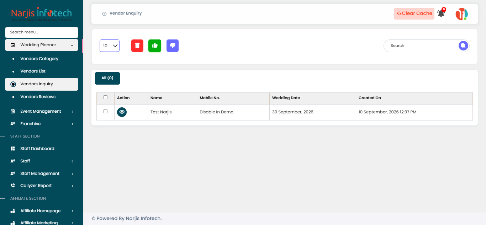
- Inquiry Name – Displays the name provided by the person submitting the inquiry.
- Mobile Number – Shows the contact number for communication and follow-up.
- Wedding Date – Displays the date associated with the vendor inquiry.
- Created On – Shows when the inquiry was submitted.
- View Details – Allows administrators to open and review the complete inquiry information.
- Search – Helps administrators quickly locate a specific inquiry.
- Delete – Provides an option to remove inquiry records when required.
Vendors Reviews
The Vendors Reviews section allows administrators to review and manage feedback submitted by users for registered vendors. It provides details such as the vendor name, rating, reviewer information, review description, and approval status.
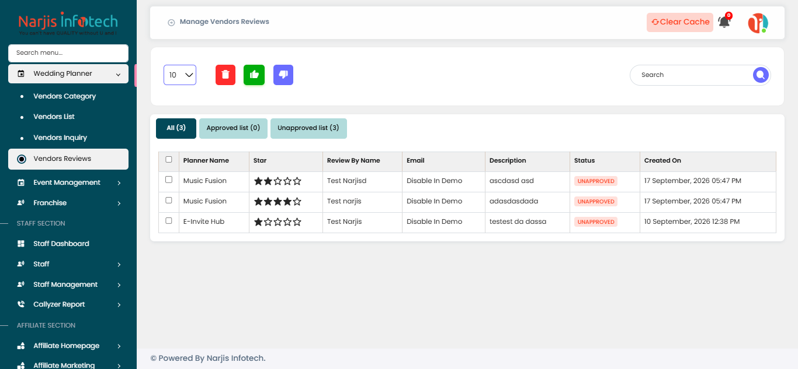
- Planner / Vendor Name – Displays the vendor for which the review was submitted.
- Star Rating – Shows the rating provided by the user.
- Reviewer Name – Identifies the user who submitted the review.
- Email – Displays the reviewer’s email address.
- Review Description – Shows the feedback or comments submitted by the reviewer.
- Approval Status – Displays whether the review is Approved or Unapproved.
- Approve / Reject – Allows administrators to control whether a review can be published.
- Delete Review – Allows administrators to remove inappropriate or unwanted reviews.
- Search – Helps locate specific vendor reviews.
- Approved / Unapproved Lists – Separates reviews based on their approval status.
- Created On – Displays the date and time when the review was submitted.
Event List
The Event Management section allows administrators to manage event listings and registered participants.
The Event List section allows administrators to create, manage, and monitor events available on the platform. It provides a centralized view of event details, registrations, ticket sales, event dates, and approval status.
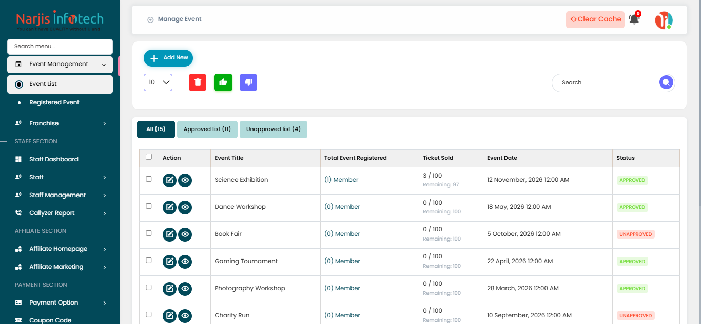
- Add New Event – Allows administrators to create and publish new events.
- Event Title – Displays the name of each event.
- Total Event Registered – Shows the number of members registered for the event.
- Ticket Sold – Displays tickets sold against the total available capacity, along with remaining tickets.
- Event Date – Shows the scheduled date and time of the event.
- View Event – Allows administrators to view complete event details.
- Edit Event – Allows administrators to update event information.
- Approval Management – Administrators can approve or reject events before they are made available to users.
- Approved / Unapproved Lists – Separates events based on their approval status.
- Delete Event – Allows administrators to remove event records.
- Search – Helps administrators quickly find specific events.
Registered Event
The Registered Event section allows administrators to view members who have registered for an event. It provides complete registration and payment details for each event participant.
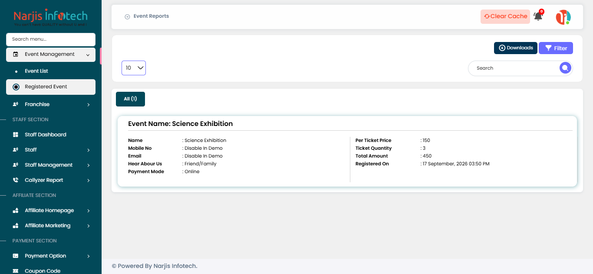
- Event Name – Displays the event for which the member registered.
- Member Details – Shows the registered member’s name, mobile number, and email.
- Hear About Us – Records how the member came to know about the event.
- Payment Mode – Displays the selected payment method.
- Per Ticket Price – Shows the price of an individual ticket.
- Ticket Quantity – Displays the number of tickets purchased.
- Total Amount – Shows the total registration/payment amount.
- Registered On – Records the date and time of event registration.
- Search & Filter – Helps administrators locate specific event registrations.
- Download – Allows registration records to be downloaded for reporting or reference.
Franchise Dashboard
The Franchise section provides centralized management of franchises, their members, lead assignments, sales reports, and login activities.
The Franchise Dashboard provides franchise administrators with a centralized view of member-related activities, pending tasks, login activity, and franchise commission performance. It helps franchises monitor their daily operations and track member management activities.
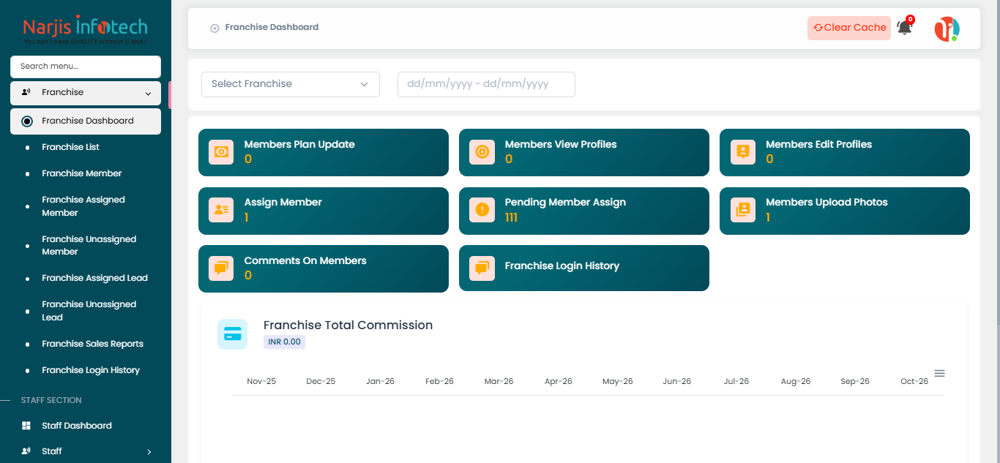
- Franchise & Date Filter – Allows users to filter dashboard data by franchise and date range.
- Members Plan Update – Displays the number of member plan updates.
- Members View Profiles – Tracks profile-view activities performed by the franchise.
- Members Edit Profiles – Shows profile editing activities.
- Assign Member – Displays the number of members assigned to the franchise.
- Pending Member Assign – Shows members waiting for assignment.
- Members Upload Photos – Tracks member photo upload activities.
- Comments on Members – Displays member-related comment activity.
- Franchise Login History – Provides access to franchise login activity/history.
- Franchise Total Commission – Displays commission earnings generated by the franchise.
- 12-Month Commission Chart – Provides a monthly view of franchise commission earnings over the last 12 months.
Franchise List
The Franchise List section allows administrators to manage franchise accounts and their access details. It provides a centralized view of franchise users, approval status, login credentials, and referral links.
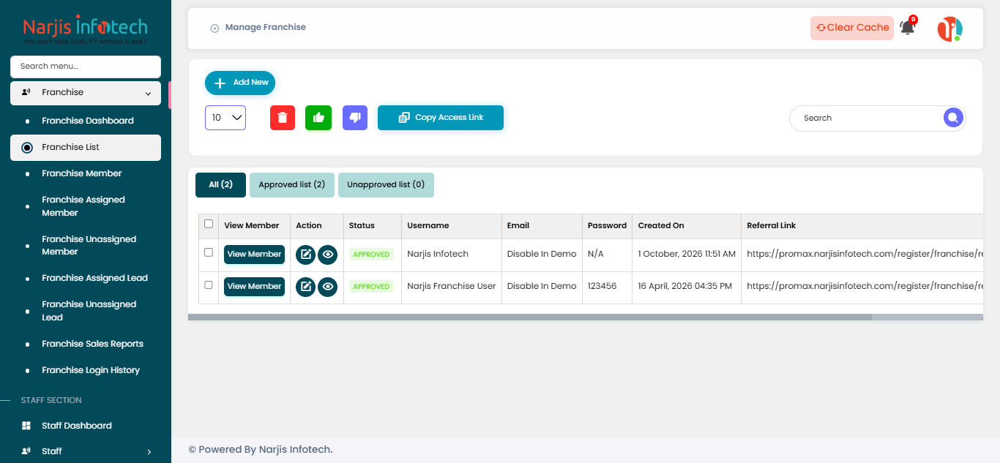
- Add New Franchise – Allows administrators to create a new franchise account.
- View Member – Provides access to members associated with the franchise.
- Franchise Details – Displays the franchise username and email.
- Account Status – Shows whether the franchise is Approved or Unapproved.
- Login Credentials – Maintains the franchise username and password information.
- Referral Link – Provides a unique registration/referral link for the franchise.
- Copy Access Link – Allows administrators to quickly copy the franchise referral/access link.
- View & Edit – Enables administrators to view and update franchise details.
- Approve / Reject – Allows management of franchise account approval.
- Delete Franchise – Allows administrators to remove franchise records.
- Search – Helps quickly locate a specific franchise.
- Approved / Unapproved Lists – Separates franchises based on their approval status.
Franchise Member
The Franchise Member section allows franchise administrators to manage and monitor members associated with their franchise. It provides member profile details, account status, membership information, and actions required for profile management.
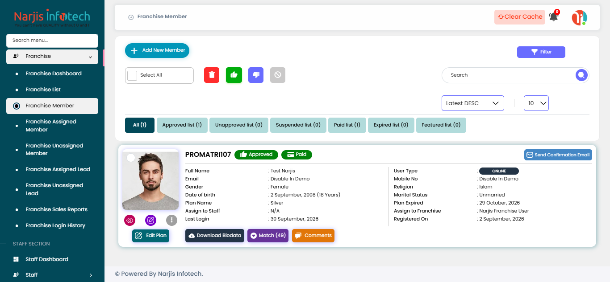
- Add New Member – Allows the franchise to create a new member profile.
- Member Profile Details – Displays name, email, gender, date of birth, mobile number, religion, and marital status.
- Membership Status – Shows the current member status, such as Approved, Unapproved, Suspended, Paid, or Expired.
- Staff & Franchise Assignment – Displays the staff and franchise assigned to the member.
- Plan Information – Shows the member’s selected plan and plan expiry details.
- Last Login – Displays the member’s latest login date.
- Profile Actions – Provides options to view, edit, and manage member profiles.
- Send Confirmation Email – Allows the franchise to send a confirmation email to the member.
- Download Biodata – Allows the member’s biodata to be downloaded.
- Profile Matching – Provides access to the member’s matching/matchmaking functionality.
- Comments – Allows staff/franchise users to add or review member-related comments.
- Active to Paid – Supports moving an eligible member toward a paid membership status.
- Search & Filter – Helps locate members using search, filters, sorting, and status-based lists.
Franchise Assigned Member
The Franchise Assigned Member section provides administrators with a centralized list of members assigned to a specific franchise. It helps track which members are assigned, to which franchise, and when the assignment was made.
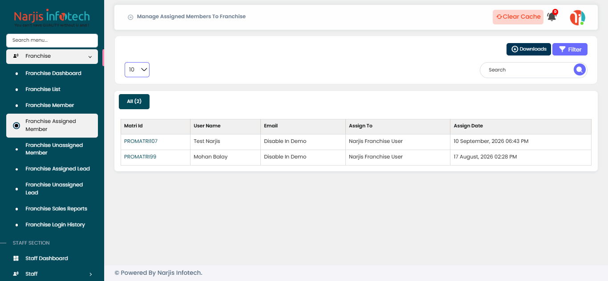
- Matri ID – Displays the unique matrimonial ID of the assigned member.
- User Name – Shows the member’s name.
- Email – Displays the member’s registered email address.
- Assign To – Identifies the franchise to which the member is assigned.
- Assign Date – Records the date and time of the member assignment.
- Search – Allows administrators to quickly find a specific assigned member.
- Filter – Helps narrow down assignment records based on available criteria.
- Download – Allows assignment records to be downloaded for reporting or reference.
Franchise Unassigned Member
The Franchise Unassigned Member section displays members who are currently not assigned to any franchise. It helps administrators track previous assignments and reassign unassigned members to an appropriate franchise.
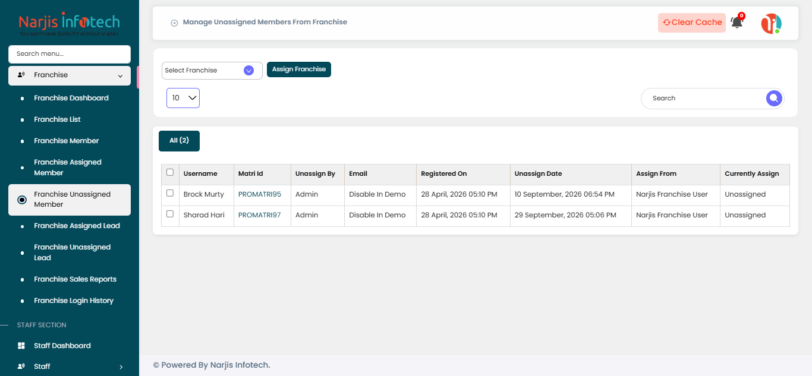
- Select Franchise – Allows the administrator to select a franchise for assignment.
- Assign Franchise – Assigns selected unassigned members to the chosen franchise.
- Username – Displays the member’s registered username.
- Matri ID – Shows the member’s unique matrimonial ID.
- Unassign By – Identifies who removed the member from the previous assignment.
- Email – Displays the member’s registered email address.
- Registered On – Shows when the member originally registered.
- Unassign Date – Records when the member was unassigned.
- Assign From – Displays the franchise from which the member was previously assigned.
- Currently Assign – Shows the member’s current assignment status.
- Search – Helps administrators quickly locate a specific unassigned member.
Franchise Assigned Lead
The Franchise Assigned Lead section provides a centralized view of leads that have been assigned to a franchise. It helps administrators track the lead details, lead interest, assigned franchise, and assignment date.
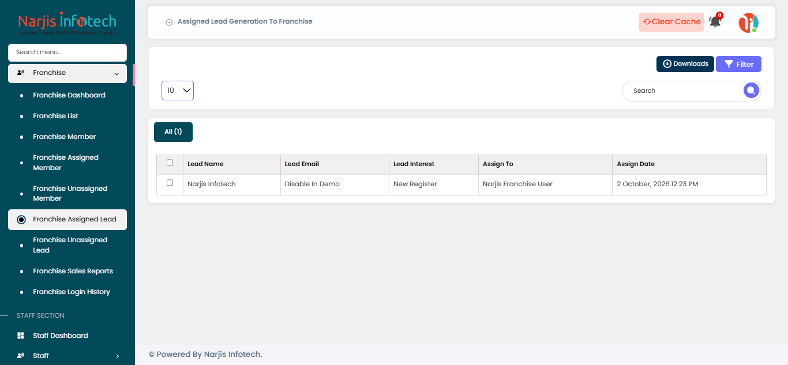
- Lead Name – Displays the name of the assigned lead.
- Lead Email – Shows the lead’s email address for communication.
- Lead Interest – Displays the lead’s current interest or status, such as New Register.
- Assign To – Identifies the franchise responsible for handling the lead.
- Assign Date – Records when the lead was assigned to the franchise.
- Search – Allows administrators to quickly find specific assigned leads.
- Filter – Helps narrow down lead records based on available criteria.
- Download – Allows assigned lead records to be downloaded for reporting or reference.
Franchise Unassigned Lead
The Franchise Unassigned Lead section displays leads that are currently not assigned to any franchise. It allows administrators to select a franchise and assign available leads for further follow-up and management.
- Lead Name – Displays the name of the assigned lead.
- Lead Email – Shows the lead’s email address for communication.
- Lead Interest – Displays the lead’s current interest or status, such as New Register.
- Assign To – Identifies the franchise responsible for handling the lead.
- Assign Date – Records when the lead was assigned to the franchise.
- Search – Allows administrators to quickly find specific assigned leads.
- Filter – Helps narrow down lead records based on available criteria.
- Download – Allows assigned lead records to be downloaded for reporting or reference.
Franchise Sales Reports
The Franchise Sales Reports section provides a detailed view of membership plan sales generated through franchises. It helps administrators track plan details, payment information, validity, franchise commission, and invoice records.
- Member Details – Displays the member name and Matri ID associated with the sale.
- Plan Information – Shows the selected plan, plan amount, and current plan status.
- Grand Total – Displays the total amount charged for the membership.
- Plan Activation & Validity – Shows the activation date, validity period, and expiry date.
- Payment Details – Displays the payment mode, transaction ID, and payment information.
- Franchise Details – Identifies the franchise responsible for the membership sale.
- Franchise Commission – Displays the commission percentage applicable to the franchise.
- View Invoice – Allows administrators to view the invoice associated with the transaction.
- Search & Filter – Helps administrators locate specific sales records.
Franchise Login History
The Franchise Login History section records franchise account login activities. It helps administrators monitor when a franchise logged in, when the session ended, and the IP address used for access.
- Franchise Name – Displays the franchise account that accessed the system.
- Franchise Email – Shows the email associated with the franchise account.
- Login At – Records the date and time of each login.
- Login Out – Displays the logout time when available.
- IP Address – Records the IP address used during the login.
- Search – Allows administrators to quickly find specific login records.
Membership Plan
The Payment Options section allows administrators to manage Membership Plans, Add-On Packages, Offline Payments, and Payment Gateways.
The Membership Plan section allows the Admin to create and manage membership plans for both Personalized Members and Online Members.
- Add New – Admin can create a new membership plan.
- Plan Name – Displays the name of the membership plan, such as Gold, Platinum, or Personalized Plan.
- Plan Type – Shows whether the plan is a paid membership plan.
- Plan Amount – Displays the price/amount of the membership plan.
- Personalized Plan – Admin can create a customized membership plan for personalized members.
- Online Member Plan – Admin can create membership plans that can be used by online members.
- Edit – Admin can modify existing membership plan details.
- View – Admin can view the details of an existing plan.
- Approve / Unapprove – Admin can manage the approval status of membership plans.
- Delete – Admin can delete selected membership plans.
- Search – Admin can search for a specific membership plan.
- Personalized Plan List – Admin can separately view plans configured as personalized plans.
- Created On – Displays when the membership plan was created.
Add On Package
The Add-On Package section allows the Admin to create and manage additional packages that can be purchased on top of an existing Membership Plan.
- Add New – Admin can create a new add-on package.
- Package Title – Displays the name of the add-on package, such as Extra Audio Call Minutes or Extra Video Call Minutes.
- Package Category – Defines what additional benefit the package provides, such as extra calls, contacts, profile views, or validity.
- Package Amount – Displays the price of the add-on package.
- Edit – Admin can modify existing package details.
- View – Admin can view package details.
- Approve / Unapprove – Admin can manage the package approval status.
- Delete – Admin can delete selected add-on packages.
- Search – Admin can search for a specific add-on package.
- Created On – Displays when the package was created.
Offline Payment
The Offline Payment section allows the Admin to configure bank and QR code payment details for users who want to make membership payments through an offline payment method.
- Account Holder Name – Admin can add the bank account holder's name.
- Account Number – Admin can configure the bank account number.
- Bank Name – Admin can add the bank name.
- Bank Branch – Admin can specify the bank branch details.
- IFSC Code – Admin can add the bank's IFSC code.
- QR Code – Admin can upload a payment QR code that users can scan to make the payment.
- Payment Gateway Image – Admin can upload the payment method/gateway image displayed to users.
- Status – Admin can set the offline payment option as Approved or Unapproved.
- Submit – Admin can save or update the configured payment details.
Payment Gateway
The Payment Gateway section allows the Admin to manage and configure payment gateway integrations for membership payments.
- Add New Payment Gateway – Admin can add a new payment gateway configuration.
- Payment Logo – Displays the logo of the configured payment gateway.
- Payment Name – Admin can manage the payment gateway name, such as Razorpay, PayPal, Stripe, Cashfree, or PhonePe.
- Payment Mode – Admin can configure the gateway mode, such as Test or Live.
- API Configuration – Admin can add and manage the required payment gateway API credentials/settings.
- Approve / Unapprove – Admin can control whether a payment gateway is active or inactive.
- Edit / View – Admin can update or view the configured gateway details.
- Single Active Gateway – At a time, only one approved payment gateway will be used for processing online payments.
Coupon Code
The Coupon Code section allows the Admin to create and manage discount coupons for specific membership plans.
- Create Coupon Code – Admin can create a coupon code for a membership plan.
- Plan Wise Coupon – Admin can assign the coupon to a specific membership plan, such as Gold, Silver, or Platinum.
- Discount Percentage – Admin can define the discount percentage for the coupon.
- Active From – Admin can set the date from which the coupon becomes available.
- Expired From – Admin can set the coupon's expiry date.
- Approve / Unapprove – Admin can control the coupon's active status.
- Edit Coupon – Admin can update the coupon details when required.
- Expired List – Expired coupons are automatically shown separately in the Expired List.
- User-Side Display – The coupon code will be displayed plan-wise on the Membership Plan section on the user side.
- Membership Discount – Users can apply the available coupon to the corresponding membership plan to receive the configured discount.
Website Color Changes
The Website Appearance section allows administrators to manage and customize the website’s visual design, layout, and appearance settings.
The Website Color Changes section allows the Admin to manage the website's overall theme colors for both Dark Mode and Light Mode without requiring any code or deployment.
- Theme Presets – Admin can select from predefined color themes such as Default, Royal Purple, Ocean Teal, Sunset Amber, Emerald Luxe, etc.
- Dark & Light Mode – Admin can separately manage the color settings for both website modes.
- Primary Brand Color – Controls the main brand color used for buttons, active menus, links, and badges.
- Background Colors – Admin can manage page, card, login/register, deep background, footer, and surface colors.
- Border & Icon Colors – Controls borders, dividers, input borders, and muted icons.
- Text Colors – Admin can configure primary and secondary text colors.
- Status & Feedback Colors – Admin can manage success, payment/positive, error, and sale/alert colors.
- Hex Color Editing – Each theme color can be entered or updated using its HEX color code.
- Live Preview – Changes can be previewed instantly before publishing.
- View Live Site – Admin can open the live website to verify the applied theme.
- Save Changes – Admin can publish the selected color settings to the website.
- No Deployment Required – Theme color changes are applied directly from the Admin panel without requiring code changes or a new deployment.
Homepage Page
The Homepage Designs section allows the Admin to manage different homepage designs based on the community or matrimonial theme.
- Community-Wise Homepage Designs – Admin can manage multiple homepage designs for different communities, such as Traditional Hindu, Muslim/Nikah, Christian, or General Matrimonial.
- Homepage Design Preview – Admin can preview each available homepage design before making it live.
- Edit Content – By clicking Edit Content, Admin can edit the content of the selected homepage, including its sections and text.
- Set as Live – Admin can select a homepage design and make it the live homepage for users.
- Currently Live Indicator – The system clearly identifies which homepage design is currently active.
- Multiple Design Options – Admin can maintain different homepage templates without affecting the other available designs.
- Content Management – Each homepage's content can be customized according to the selected community/theme.
Other Layout Settings
The Other Layout Settings section allows the Admin to configure the layout of the website's chat module.
- Chat Module Design – Admin can select how the chat interface should appear to users.
- Popup Chat – Displays the chat interface as a popup when users open the chat.
- Window Chat – Displays the chat in a dedicated window-style layout.
- Layout Selection – Admin can switch between the available chat layouts according to the website's requirements.
- Save Changes – Admin can save the selected chat layout, and the updated design will be applied to the chat module.
Member Layouts
The Member Layouts section allows the Admin to manage the available member profile layouts.
- Manage Member Layouts – Admin can manage the available layouts for displaying member profiles.
- Layout Preview – Admin can preview each layout before selecting it.
- Edit Layout – Admin can modify an existing layout configuration.
- Approve / Unapprove – Admin can control the status of each layout.
- Single Active Layout – Admin can select only one layout at a time for the member profile display.
- Apply Layout – The selected layout is applied to member profiles on the website.
Member Placeholder
The Member Placeholder section allows the Admin to manage placeholder images displayed when member profile photos are unavailable or protected.
- Manage Placeholder Images – Admin can manage placeholder images for member profiles.
- Male Image – Admin can configure the default image for male members.
- Female Image – Admin can configure the default image for female members.
- Male Protected Image – Admin can configure the placeholder shown when a male member's photo is protected.
- Female Protected Image – Admin can configure the placeholder shown when a female member's photo is protected.
- Edit Placeholder – Admin can update the configured placeholder images.
- Approve / Unapprove – Admin can control the status of placeholder configurations.
- Only One Approved – Only one placeholder configuration can be approved/active at a time.
- Website – The approved placeholder configuration is automatically used wherever a member's photo is unavailable or protected.
Colors & Typography
The App Theme Settings section allows administrators to manage colors, typography, design, general app settings, feature controls, maintenance mode, and force updates.
The Colors & Typography section allows the Admin to manage the overall App Theme and visual appearance from the Admin Panel.
- Quick Theme Presets – Admin can select predefined themes such as Romantic Blush, Royal Purple, Crimson Velvet, Emerald Luxe, Ocean Teal, Sunset Amber, Imperial Gold, Sapphire Elite, Plum Wine, and Midnight Slate.
- Primary Color – Admin can set the main theme color used throughout the application.
- Secondary / Accent Color – Admin can configure the secondary and accent colors.
- App Background – Admin can customize the application's background color.
- Gradient Colors – Admin can manage gradient start and end colors.
- Progress Gradient – Admin can configure colors used for progress indicators.
- Premium Badge Color – Admin can customize the color of premium membership badges.
- Progress Badge Text Color – Admin can configure text color for progress badges.
- Menu & Card Colors – Admin can manage menu background and option/card background colors.
- Font Family – Admin can select the application's font family.
- Button Style – Admin can configure the button appearance, such as rounded styling.
- Theme Mode – Admin can select the theme mode, such as System-based mode.
- Text Field Design – Admin can choose the design style for input fields.
- Save Changes – Admin can save and apply the selected theme settings.
- Reset to Default – Admin can restore the default theme configuration.
Design Gallery
The Design Gallery section allows the Admin to manage the App Theme designs through separate design sections
- Dashboard Design – Admin can manage the design used for the app dashboard.
- Profile Card Style – Admin can manage the appearance and layout of member profile cards.
- My Profile Design – Admin can manage the design of the user's own profile section.
- Other Profile Design – Admin can manage the design used for viewing other members' profiles.
- Privacy Settings Design – Admin can manage the design of the privacy settings section.
- Bottom Bar Design – Admin can manage the app's bottom navigation/bar design.
- Section-Wise Design Selection – Each design category is managed separately.
- Single Active Design per Section – Admin can select one design for each section at a time.
- App-Wide Application – The selected design for each section is displayed in the corresponding area of the app.
General App
The General App section allows the Admin to manage the application's general configuration settings.
- Default Country ISO – Admin can set the default country ISO code, such as IN for India.
- Default Country Flag – Admin can configure the default country flag/emoji used throughout the app.
- OTP Login Method – Allows the Admin to select the preferred OTP login method, either Firebase or SMS.
- Save Changes – Admin can save the updated application settings.
- Reset to Default – Admin can restore the default configuration.
Feature Controls
The Feature Control section allows the Admin to manage which features are enabled or disabled across the application.
Feature Controls – Allows the Admin to enable or disable available application features using Yes/No controls, including profile matching, calling, verification, AI features, security, horoscope, downloads, login methods, reminders, dark mode, and multi-language support.
Maintenance
The Maintenance section allows the Admin to temporarily put the application into maintenance mode.
- App Under Maintenance – Yes: Enables maintenance mode and prevents normal users from accessing the application.
- App Under Maintenance – No: Keeps the application running normally.
- Maintenance Message: Admin can add or update the message that will be displayed to users while the application is under maintenance.
- Save Changes: Applies the maintenance settings.
- Reset to Default: Restores the default maintenance configuration.
App Force Update
The App Force Update section allows the Admin to manage mandatory app updates by configuring the minimum supported version for Android and iOS.
- Android Min Supported Version: Admin can define the minimum Android app version supported by the application.
- iOS Min Supported Version: Admin can define the minimum iOS app version supported.
- Android Store URL: Admin can add the Google Play Store URL where users can download the latest version.
- iOS Store URL: Admin can add the Apple App Store URL for the latest version.
- Force Update Title: Admin can configure the title displayed to users when an update is required.
- Force Update Message: Admin can configure the message explaining that users need to update the app.
- Save Changes: Applies the updated force-update settings.
- Reset to Default: Restores the default configuration.
Success Stories
The Success Stories section allows the Admin to manage and review success stories submitted by members.
- Add New: Admin can create and add a new success story.
- Story Type: Displays the type of success story, such as a Photo Story.
- Bride Details: Admin can view the bride’s name and member ID.
- Groom Details: Admin can view the groom’s name and member ID.
- Marriage Date: Displays the date of marriage associated with the success story.
- Edit / View: Admin can edit or view the complete success story details.
- Approval Management: Admin can approve or reject submitted success stories using the approval controls.
- Approved List / Unapproved List: Admin can separately view approved and unapproved success stories.
Blog Management
The Blog Post section allows the Admin to create and manage blog content for the website.
- Add New: Admin can create and publish new blog posts.
- Blog Title: Admin can add and manage the title of the blog.
- Blog Content: Admin can add detailed, informative content related to relevant topics.
- Edit / View: Admin can edit existing blogs or view their complete details.
- Approval Management: Admin can approve or manage the publication status of blog posts.
- Approved / Unapproved List: Admin can separately manage approved and unapproved blog posts.
- SEO Benefit: Published blog content can be optimized for search engines using relevant topics, keywords, titles, and content, helping the website attract organic search traffic and support SEO rankings.
SEO Settings
Admin can manage SEO Settings, SEO Pages, and Matrimony Data to improve website search visibility and content optimization.
The SEO Settings section allows the Admin to manage important SEO-related configurations for the website.
- Robot TXT: Admin can manage the robots.txt configuration to control how search engine crawlers access and crawl website pages.
- Sitemap Generator: Admin can generate and manage the website sitemap to help search engines discover and index website pages.
- SEO Default OG Image: Admin can set the default Open Graph (OG) image used when website pages or content are shared on social media and other platforms.
SEO Pages
The SEO Pages section allows the Admin to manage SEO information for individual website pages.
- Add New: Admin can add SEO settings for a new website page.
- Page Title: Displays the website page for which SEO settings are being managed.
- SEO Title: Admin can create or update the search-engine-friendly title for each page.
- Edit / View: Admin can edit existing SEO page details or view the configured information.
- Approval Management: Admin can approve or manage the SEO page status.
- Approved / Unapproved List: Admin can separately view approved and unapproved SEO pages.
- SEO Optimization: Page-specific SEO titles can be configured to make individual website pages more relevant for search engines.
Matrimony Data (Community Pages)
The Matrimony Pages section allows the Admin to create and manage community-specific matrimony pages for the website.
- Add New: Admin can create a new community matrimony page.
- Page Name: Admin can define the name of the matrimony page.
- Title: Admin can add or update the page title displayed to users.
- Search Type: Admin can configure the type of community page, such as Religion, City, State, Mother-Tongue, or Caste.
- Matrimony Name: Admin can associate the page with a specific community, religion, caste, location, or other selected category.
- Edit / View: Admin can edit existing community pages or preview their details.
- Approval Management: Admin can approve or reject community pages before they are published.
- Approved / Unapproved List: Admin can separately manage approved and unapproved pages.
CMS Pages
Admin can manage CMS content, including the About Us page and other website information pages.
The CMS Pages section allows the Admin to manage the website’s informational and static pages.
- Add New: Admin can create and add new CMS pages as required.
- Page Title: Admin can define the title of the information page.
- Page URL: Admin can create or manage the page URL/slug.
- Edit / View: Admin can edit existing pages and preview their content.
- Hide / Remove Page: Admin can manage whether a page should remain available on the website or be removed from display.
- Approval Management: Admin can approve or unapprove pages.
- Approved / Unapproved List: Admin can separately view and manage approved and unapproved pages.
- Existing Information Pages: Pages such as Privacy Policy, Terms and Conditions, and Refund Policy can be managed from this section.
About Us Page
The About Us Page section allows the Admin to manage the content displayed on the Website and App.
- Language Change: Admin can manage the About Us content for the selected language.
- Banner: Admin can upload or update the About Us banner image.
- Title: Admin can add or edit the About Us page title.
- About Us Short Description: Admin can add or update a short introduction about the platform.
- About Us Description: Admin can manage the complete About Us content using the rich text editor, including formatted text and detailed information.
- Browse Sections: Admin can add or update key highlights/information displayed in the About Us page.
- Content Management: Admin can add, edit, update, or remove About Us content as required.
- Submit: Saves the updated About Us page configuration.
Email Templates
The Email Templates section allows the Admin to manage email templates that are automatically sent to users based on different activities.
- Template Name: Admin can manage templates for different activities, such as Registration, Email Confirmation, Active Member, Membership Activated, Payment Receipt, etc.
- Email Subject: Admin can add or update the subject line of each email.
- Email Content: Admin can manage the email message/content that will be sent to the user.
- Edit / View: Admin can edit or preview existing email templates.
- Approval Management: Admin can approve or unapprove email templates.
- Approved / Unapproved List: Admin can separately manage approved and unapproved templates.
Notification Templates
The Notification Templates section allows the Admin to manage the notification messages that are shown to members for different activities within the application.
- Notification Title: Admin can manage the title of each notification.
- Notification Description: Admin can add or update the notification message displayed to the member.
- Dynamic Variables: Templates can use dynamic values such as {{viewer_id}} so that the notification can display relevant member information automatically.
- Activity-Based Notifications: Allows administrators to manage notifications for key profile activities, interests, chat requests, photo requests, approvals, memberships, matchmaking, and payment events.
- Approval Management: Admin can approve or unapprove notification templates.
- Approved / Unapproved List: Admin can manage templates based on their approval status.
SMS & WhatsApp
Admin can manage SMS Templates, SMS Configuration, and WhatsApp Configuration.
- SMS Templates: Admin can search SMS templates and manage their status by approving, unapproving, or deleting templates.
- SMS Configuration: Admin can integrate the SMS gateway, with guidelines provided in the SMS Configuration section to complete the integration.
- Whatsapp Configuration: Admin can update the WhatsApp API, with guidelines provided to complete the API configuration.
Masters Data
Admin can manage and maintain master data used across the website& App, including Religion, Caste, Country, State, City, Currency, Occupation, Education, Designation, Mother Tongue, Horoscope, Lifestyle, Family, Marital Status, Residence, FAQs, and other profile-related options.
- Add New: Admin can add new master data entries.
- Edit/Manage: Admin can manage existing master data.
- Approve: Admin can approve master data entries for use in the application.
- Unapprove: Admin can unapprove entries when they should no longer be active.
- Delete: Admin can delete unnecessary master data entries.
- Search: Admin can search for specific master data quickly.
Basic Site Settings
Admin can manage Basic Site Settings, Third-Party Settings, Member Fields, and feature Enable/Disable options.
The Basic Site Settings section allows the Admin to manage essential website and application settings.
- General Info: Admin can manage basic site information.
- Logo & Favicon: Admin can upload and update the website/app logo and favicon.
- Matri Prefix: Admin can configure the Matrimony ID/profile prefix used for member profiles.
- App Link: Admin can manage the Android and iOS application links.
- Social Site Settings: Admin can manage social media links displayed on the website/app.
- Google Analytics Code: Admin can add or update the Google Analytics tracking code for website analytics.
Third Party Settings
The Third-Party Settings section allows the Admin to configure and manage external services required for application functionality.
- Email Configuration: Admin can configure the email service and SMTP settings used for sending system emails and notifications.
- Firebase Settings: Admin can configure Firebase services used by the application, such as OTP authentication, push notifications, and other Firebase-based features.
- Zego Cloud Settings: Admin can configure Zego Cloud credentials and settings required for voice calls and video calls within the application.
Member Field Enable/Disable
The Member Field Enable/Disable section allows the Admin to control how individual member profile fields are displayed and used throughout the website and app.
- Field Management: Admin can manage member profile fields by category, including Religion, Education, Location, Physical Information, Family Details, Partner Preference, and Member Photos.
- Registration: Admin can decide whether a field should be displayed on the member registration form.
- Edit Profile: Admin can control whether members can view or edit a particular field from their profile.
- My Profile List: Admin can control which fields are displayed in the member's own profile listing.
- User Profile List: Admin can control which fields are visible when other users view a member's profile.
- Quick Search: Admin can enable or disable a field as a filter in Quick Search.
- Advanced Search: Admin can control whether the field is available in Advanced Search.
- Search Results: Admin can decide whether the field is displayed in search results.
Language Master
Admin can manage available languages and configure language options for the website & Apps.
- Add New Language: Admin can add a new language by defining the language name and language code.
- Edit Language: Admin can update existing language details.
- Approve / Unapprove: Admin can control whether a language is active and available for users.
- Translations: Admin can manage translations for each supported language.
- Default Language: Admin can set one language as the default language for the application.
- Delete: Admin can remove languages that are no longer required.
- Search: Admin can search for a specific language.
- Language Code: Each language is associated with its standard code, such as English (en), Hindi (hi), and Gujarati (gu).
Franchise Dashboard (Panel)
The Franchise Dashboard provides the Franchise Admin with an overview of member activity, member status, gender distribution, pending photo approvals, and earnings.
- Member Summary: Displays the total number of members along with Male, Female, Paid, Not Paid, Expired, Approved, Unapproved, and Suspended Members.
- Referral Link: Franchise Admin can view and copy their unique referral link to share with recommended members.
- Member Reports: Provides a graphical breakdown of members based on their Approved, Unapproved, and Suspended status.
- Gender Reports: Displays the distribution of members by Male and Female.
- Photo Approval Pending: Shows the number of member photos pending approval, categorized by photo number.
- Members Yearly Reports: Displays member registration/activity trends over the year, categorized by Approved, Unapproved, and Suspended members.
- Earning Reports: Displays the Franchise Admin's earnings over time through a graphical report.
Franchise Member (Panel)
The Franchise can manage Members and Member Sales Reports from the Franchise Panel.
All Member
The Franchise Member section allows members to register through a Franchise Referral Link, while the Admin can assign specific members to a Franchise. The Franchise can then access and manage only the members who have registered through its referral link or have been assigned to it by the Admin.
- Franchise can add, view, edit, search, filter, sort, and manage member records.
- Franchise can view members based on Approved, Unapproved, Suspended, Paid, Expired, and Featured status.
- Franchise can approve, unapprove, suspend, or delete members according to the assigned permissions.
- Franchise can view member profiles, download biodata, check matches, and manage comments.
- Franchise can send confirmation emails to members.
- Member details include Member ID, Name, Email, Mobile Number, Gender, Date of Birth, Religion, Marital Status, Membership Plan, Plan Expiry, User Type, Last Login, Registration Date, Assigned Franchise, and Assigned Staff.
- Franchise can only access the members registered through its referral link or assigned to it by the Admin.
Member Sales Report
The Franchise Member Sales Report provides the Franchise Admin with a detailed overview of membership sales and the revenue generated from members associated with the Franchise.
It allows the Franchise to track membership plans, payment details, plan validity, total sales, and commission earnings for its members.
- Sales Summary: Displays the total amount generated from the Franchise's member sales.
- Member-wise Sales: Shows sales information for each member along with their Member ID.
- Membership Plan Details: Displays the selected plan and plan amount.
- Payment Details: Shows the payment mode and transaction information.
- Plan Validity: Displays the plan activation date, validity period, and expiry date.
- Current Plan: Indicates whether the displayed plan is currently active.
- Grand Total: Displays the final amount paid for the membership.
- Commission Details: Shows the applicable commission percentage and commission amount earned by the Franchise.
- Staff Information: Displays the staff member associated with the sale, where applicable.
- Invoice: Franchise Admin can view the detailed payment invoice.
- Search: Allows the Franchise Admin to search sales records.
- Filter: Allows sales records to be filtered based on available criteria.
Franchise Approval (Panel)
The Franchise can manage and approve member-submitted Photos, ID Proof, Selfie Photos, and Horoscopes from the Franchise Panel.
Photos
The Franchise can manage member photos from the Franchise Panel, including reviewing, approving, rejecting, and deleting photos.
- Approved List – Displays photos that have been reviewed and approved.
- Unapproved List – Displays photos that are pending approval or have not yet been approved.
- Member-wise Photo Management – Groups uploaded photos under the respective member's name and Matrimonial ID.
- Photo Preview – Allows Admin and Franchise to review each uploaded photo before taking an action.
- Approve Photo – Admin and Franchise can approve individual photos.
- Reject Photo – Admin and Franchise can reject individual photos.
- Delete Photo – Admin and Franchise can delete uploaded photos from the member profile.
- Bulk Selection – Allows selection of multiple photos for bulk actions where applicable.
- Search – Allows Admin and Franchise to search for a specific member or photo record.
- Upload Date & Time – Displays when each photo was uploaded.
- Approval Status – Clearly indicates whether a photo is Approved or Unapproved.
Id Proof
The ID Proof Verification section allows the Admin and Franchise to review and manage member identity documents for profile verification. ID proofs submitted by members can be reviewed and approved or rejected by the authorized Admin or Franchise. The submitted ID proof remains confidential and is never displayed to other users or members, even after approval.
- ID Proof Review – Admin and Franchise can review the ID proof submitted by members, including front and back images.
- Approve / Reject – Admin and Franchise can approve or reject the submitted identity document.
- Verification Status – Displays the current verification status of each member’s ID proof.
- Privacy Protection – ID proof documents are not visible to other users or members, even after approval.
- Profile Verification – An approved ID proof is used to verify the member’s profile.
- Admin Monitoring – All ID proof records managed by the Franchise are also visible in the Admin Panel, allowing the Admin to review and manage them.
Selfie Photo
The Selfie Photo Verification section allows the Admin and Franchise to review and manage selfie photos submitted by members for profile verification. The selfie is used only for verification purposes and is not displayed to other users or members, even after approval.
- Verification Access – Admin and Franchise can access submitted selfie photos for verification.
- Selfie Photo Review – Admin and Franchise can review the selfie associated with the member profile.
- Approve / Reject – Admin and Franchise can approve or reject the submitted selfie.
- Verification Status – Displays the current status, such as Approved or Unapproved.
- Member Details – Shows Matri ID, email, date of birth, and selfie upload date for verification reference.
- Privacy & Security – Selfie photos are not visible to other members/users, even after approval.
- Profile Verification – An approved selfie confirms that the submitted photo has been reviewed for profile verification purposes.
- Search & Filtering – Admin and Franchise can search and manage selfie verification records efficiently.
- Admin Monitoring – Selfie records managed by the Franchise are also visible in the Admin Panel, allowing the Admin to review and manage them.
Horoscope
The Horoscope Approval section allows the Admin and Franchise to review and manage horoscopes submitted by members. Once a horoscope is reviewed and approved, it becomes visible to other users according to the platform's profile visibility rules.
- User Horoscope Upload – Members can upload their horoscope through their profile.
- Admin & Franchise Review – Uploaded horoscopes are available in the Admin and Franchise Panels for verification and approval.
- Approval / Rejection – Admin and Franchise can approve or reject submitted horoscopes.
- Verification Status – Records are categorized as Approved or Unapproved.
- Member Details – Displays Matri ID, email, date of birth, and horoscope upload date for reference.
- Horoscope Preview – Admin and Franchise can preview the uploaded horoscope before taking an action.
- Privacy & Approval Control – The horoscope remains unavailable to other users until it is approved.
- Post-Approval Visibility – Once approved, the horoscope can be displayed to eligible users according to profile visibility settings.
- Search & Management – Admin and Franchise can search and manage submitted horoscope records.
- Bulk Actions – Allows selection and management of multiple horoscope records where applicable.
- Admin Monitoring – Horoscope records managed by the Franchise are also visible in the Admin Panel, allowing the Admin to review and manage them.
Staff Dashboard
The Staff Dashboard provides staff members with a quick overview of their assigned activities and member-related tasks. It displays key counts and shortcuts for managing members, profile activities, assignments, photos, comments, and login history.
- Staff & Date Filters – Filter dashboard data by staff member and date range.
- Members Plan Update – Shows members whose plans require updates.
- Members View Profiles – Tracks profile viewing activity.
- Members Edit Profiles – Shows profile editing activity.
- Assign Member – Displays members assigned to the staff member.
- Pending Member Assign – Shows members waiting for staff assignment.
- Members Upload Photos – Tracks member photo-upload activities.
- Comments on Members – Provides access to member-related comments.
- Staff Login History – Tracks staff login activity for monitoring and records.
Staff List
The Staff section allows administrators to manage staff roles, member and lead assignments, login history, and attendance records.
The Staff List provides administrators with a centralized view of all staff accounts and their current status. It allows admins to manage staff records, review profiles, and control staff access.
- Add New Staff – Create and register new staff accounts.
- Staff Information – View Staff ID, profile image, username, email, role, and created date.
- Edit Staff – Update staff account and profile details.
- View Staff – Access staff information for review.
- Staff Profile/Photo – View the staff profile image and related details.
- Approve / Unapprove – Manage staff account approval status.
- Delete Staff – Remove selected staff records.
- Copy Access Link – Quickly copy the staff access/registration link.
Staff Role
The Staff Role section allows administrators to manage and control the roles assigned to staff members. It helps define staff responsibilities and maintain organized access within the system.
- Add New Role – Create new staff roles as required.
- Role Name – View and manage existing role names.
- Edit Role – Update role details when needed.
- Approve / Unapprove – Control the active status of roles.
- Delete Role – Remove unwanted roles.
Staff Assigned Member
The Staff Assigned Member section provides administrators with a clear view of members who have been assigned to specific staff members. It helps track staff-wise member allocation and assignment history.
- Assigned Member List – View all members currently assigned to staff.
- Member Details – Displays Matri ID, username, and email.
- Staff Assignment – Shows which staff member is responsible for each member.
- Assign Date – Records when the member was assigned.
- Search & Filter – Quickly find specific member assignment records.
- Download Report – Export assigned-member data for administrative reporting.
Staff Unassigned Member
The Staff Unassigned Member section shows members who were previously assigned to staff but are currently unassigned. It helps administrators track unassigned members and reassign them to available staff.
- Unassigned Member List – View members currently without a staff assignment.
- Staff Selection – Select a staff member for reassignment.
- Member Details – Shows username, Matri ID, and email.
- Assignment History – Displays who unassigned the member, previous staff, and unassignment date.
- Current Assignment Status – Clearly shows the member as Unassigned.
Staff Assigned Lead
The Staff Assigned Lead section shows leads assigned by the admin to specific staff members. After assignment, the staff member manages the lead, including follow-ups, comments, and lead status updates.
- Lead Assignment – Admin assigns leads to the appropriate staff member.
- Lead Details – Shows lead name, email, and interest.
- Staff Responsibility – Displays which staff member is handling each lead.
- Follow-Up Management – Staff can contact the lead and manage scheduled follow-ups.
- Lead Progress Tracking – Staff can update the lead based on responses and interactions.
- Assignment Date – Records when the lead was assigned to the staff member.
- Search & Filter – Easily find specific assigned leads.
Staff Unassigned Lead
The Staff Unassigned Lead section shows leads that are currently not assigned to any staff member. It helps administrators identify pending leads and assign them to the appropriate staff for follow-up and management.
- Unassigned Lead List – View all leads currently without staff assignment.
- Lead Details – Displays lead name, email, and area of interest.
- Staff Assignment – Admin can assign unassigned leads to a staff member.
- Follow-Up Handling – Once assigned, the staff member manages communication and follow-ups.
- Assignment Tracking – Records the staff assignment and assignment date.
- Search & Filter – Quickly locate specific unassigned leads.
Staff Login History
The Staff Login History section maintains a record of staff login activities. It helps administrators monitor when staff members accessed the system and review their login details.
- Login Records – View staff-wise login activity.
- Staff Details – Displays staff name and email.
- Login Date & Time – Records when the staff member logged in.
- Login/Logout Tracking – Shows available login and logout information.
- IP Address – Records the IP address used during login.
Staff Attendance
The Staff Attendance section helps administrators track staff daily attendance, working hours, and punch-in/punch-out activity.

- Punch In / Punch Out – Records staff entry and exit times.
- Attendance Status – Shows whether the staff member is marked Present.
- Remarks – Stores notes added during punch-in or punch-out.
- Total Working Hours – Calculates the staff member’s working duration.
- IP Address – Records the IP address used for attendance activity.
- Created Date – Displays when the attendance record was created.
- Filter & Search – Easily find attendance records by staff or other available criteria.
Staff Attendance Management
The Staff Management section helps administrators manage attendance, performance, leaves, commissions, reimbursements, salary, holidays, and staff-related documents.
The Staff Attendance section is used to monitor staff attendance and working hours through Punch In / Punch Out records.
- Punch In & Punch Out – Records staff start and end times.
- Attendance Status – Displays the attendance status, such as Present.
- Punch Remarks – Allows remarks to be recorded for both punch-in and punch-out.
- Total Working Hours – Tracks the total time worked by each staff member.
- IP Address Tracking – Records the IP address used for attendance activity.
- Created On – Shows the date and time when the attendance record was created.
- Filter & Search – Helps administrators quickly find specific attendance records.
Staff Scorecards
The Staff Scorecards section evaluates staff performance using multiple measurable KPIs for a selected month. It gives administrators a consolidated view of individual staff performance and overall scores.
- Monthly Performance Tracking – View staff performance for a selected month.
- Attendance Punctuality – Measures staff attendance and punctuality.
- Operations KPIs – Tracks operational activities completed by staff.
- Revenue Impact – Measures the staff member’s contribution to revenue-related activities.
- Profile Approved – Tracks profile approval activity handled by staff.
- WhatsApp Plan Assign – Measures WhatsApp plan assignment activity.
- Total Score – Displays the combined performance score based on configured KPIs.
- Performance Status – Indicates the current performance status, such as Underperforming.
- Download Reports – Export scorecard data in PDF or CSV format.
Staff Leaderboard
The Staff Leaderboard provides a comparative view of staff performance for a selected month. It ranks staff based on their KPI performance, revenue contribution, and final score.
- Monthly Ranking – Displays staff performance for the selected month.
- KPI Score – Shows the score achieved from configured staff KPIs.
- Revenue Score – Measures revenue-related performance.
- Final Score – Displays the combined overall score used for leaderboard ranking.
- Performance Status – Shows the current performance status of each staff member.
- Rank Position – Highlights staff positions on the leaderboard.
- PDF & CSV Export – Allows administrators to download leaderboard reports.
Leave Management
Leave Management allows the Admin to manage and review leave requests submitted by staff members.
- Leave Request List – Displays leave requests submitted by staff.
- Staff Name – Shows which staff member has requested the leave.
- Leave Type – Displays the type of leave, such as Sick Leave.
- Subject & Message – Shows the reason and details provided by the staff member.
- Total Leave – Displays the number of leave days requested.
- Leave Start Date / End Date – Shows the requested leave period.
- Status Management – Admin can review pending requests and approve or reject them.
- Pending List – Shows leave requests that are waiting for Admin action.
- Approved List – Shows approved leave requests.
- Rejected List – Shows rejected leave requests.
- Search & Filter – Admin can quickly find specific leave requests.
Staff Commission
Staff Commission section allows the Admin to view and track commission earned by staff members based on the plans sold or activated through them.
- Staff Name – Displays the staff member who generated the commission.
- Matri ID – Identifies the member/customer associated with the plan.
- Plan Name – Shows the membership plan, such as Silver.
- Plan Amount – Displays the original price of the selected plan.
- Plan Offer Amount – Shows the applicable offer/discount amount.
- Currency – Displays the currency used for the transaction, such as INR.
- Commission Percentage – Shows the commission percentage assigned to the staff member.
- Commission Amount – Displays the actual commission earned by the staff member.
- Created On – Shows when the commission record was created.
- Search & Filter – Admin can search and filter commission records.
Reimbursements
Reimbursements section allows the Admin to manage and review reimbursement requests submitted by staff members for business-related expenses.
- Staff Name – Displays the staff member who submitted the reimbursement request.
- Title – Shows the reimbursement request title, such as Travel Expense Reimbursement.
- Description – Provides details about the expense or reimbursement request.
- Receipt – Allows the Admin to view or verify the supporting receipt/document when provided.
- Status – Shows whether the reimbursement is Approved or Unapproved.
- Created On – Displays when the reimbursement request was submitted.
- Approve / Unapprove – Admin can approve or reject/unapprove reimbursement requests.
- Delete – Admin can remove selected reimbursement records.
- Filter & Search – Helps Admin find reimbursement requests based on available criteria.
Salary Slips
Salary Slips section allows the Admin to view and download salary slip records generated for staff members.
- Staff Name – Displays the staff member for whom the salary slip is generated.
- Payable Days – Shows the number of payable working days for the salary month.
- Basic Salary – Displays the employee's basic salary.
- Earnings – Shows additional earnings included in the salary calculation.
- Deductions – Displays deductions applied to the salary.
- Net Salary – Shows the final salary payable after earnings and deductions.
- Salary Month – Indicates the month for which the salary slip was generated.
- Salary Pay Date – Displays the date on which the salary was paid.
- Download – Admin can download the individual salary slip.
- Search & Filter – Helps Admin find salary slips by staff or other available criteria.
Pay Heads
Staff Pay Heads section allows the Admin to define and manage different salary components used for staff salary calculation. Pay heads can be configured as either Earnings or Deductions.
- Add New – Admin can create a new pay head with its title, description, and pay head type.
- Title – Displays the name of the salary component, such as Commission or Deduction.
- Description – Provides details about the pay head.
- Pay Head Type – Defines whether the pay head is an Earning or Deduction.
- Status – Shows whether the pay head is Approved or Unapproved.
- Edit – Admin can modify an existing pay head.
- Delete – Admin can delete selected pay heads.
- Approve / Unapprove – Admin can manage the approval status of pay heads.
- Search – Allows Admin to search for a specific pay head.
- Approved / Unapproved Lists – Separate tabs help manage pay heads based on their status.
Holiday Master
Holiday Master section allows the Admin to manage the organization's holiday calendar and maintain the list of holidays used for staff attendance and leave management.
- Add New – Admin can create a new holiday by entering its details.
- Holiday Title – Displays the name of the holiday, such as Republic Day, Holi, or Ram Navami.
- Description – Provides additional information about the holiday.
- Holiday Date – Defines the date on which the holiday will be observed.
- Status – Shows whether the holiday is Approved or Unapproved.
- Edit – Admin can modify existing holiday details.
- Delete – Admin can remove selected holiday records.
- Approve / Unapprove – Admin can manage the approval status of holidays in bulk.
- Search – Allows Admin to quickly find a particular holiday.
- Approved List / Unapproved List – Separate tabs make it easy to manage holidays based on their approval status.
NDA and Other Documents
The NDA and Other Documents section allows the Admin and Staff to manage important documents shared between the Admin and staff members, such as NDAs, agreements, policies, certificates, or other official documents.
- Add New – Admin can upload and add a new document for a staff member.
- Staff – Displays the staff member associated with the document.
- Title – Shows the document title or name.
- Image / File – Provides a View File option to open or view the uploaded document.
- Type – Indicates who uploaded or created the document, such as Admin or Staff.
- Created On – Shows the date and time when the document was added.
- Edit – Admin can modify the document details.
- Delete – Admin can remove selected documents.
- Sent List – Displays documents sent by the Admin/Staff.
- Received List – Displays documents received by the Admin/Staff.
- Search & Filter – Helps locate documents by staff, title, or other available criteria.
Callyzer Setting
The Callyzer Report section allows administrators to manage Callyzer settings, employee details, call history, summaries, and call analysis reports.
Callyzer API Settings section allows the Admin to configure and manage the Callyzer API integration used to connect call-related data with the system.
- API Mode – Defines the environment in which the API is configured, such as Test mode.
- API Key – Stores the API credential required to establish communication with Callyzer.
- Status – Shows whether the API configuration is Approved or Unapproved.
- Edit – Admin can update the API mode or API configuration.
- Approve / Unapprove – Admin can manage the approval status of the API configuration.
- Search – Allows Admin to find an existing API configuration.
Analysis Reports
Analysis Reports section provides Admin with detailed call-analysis and performance reports based on the selected Call From – Call To date range. It helps analyze staff calling activity, call volume, answered calls, and call duration.
- Call From – Call To – Admin can select a date/time range for which the call analysis should be generated.
- Average Duration – Provides overall calling statistics, including total duration, average call duration, total calls, daily calls, total days, incoming call duration and count, and outgoing call duration and count.
- Top Dialer – Shows the staff member with the highest outgoing call activity, including employee name, code, country code, number, tags, and total outgoing calls.
- Top Answered – Shows the staff member with the highest number of incoming calls answered.
- Top Caller – Provides information about the staff member with significant calling activity.
- Highest Total Duration – Identifies the staff member associated with the highest total call duration.
- Longest Duration – Shows the staff member associated with the longest individual call duration.
Employee Details
Employee Details section displays information about employees whose calling/application data is integrated with the system. It provides Admin with employee identification, registration, synchronization, device, and application settings information.
- Emp Code – Displays the unique employee code. In the shown records, it is N/A.
- Emp Name – Displays the employee name.
- Emp Mobile Number – Shows the employee's registered mobile number.
- Registered At – Displays the date and time when the employee/device was registered.
- Modified At – Shows the most recent modification date and time.
- Last Call At – Displays when the employee's most recent call activity was recorded.
- Last Sync Request At – Shows the latest synchronization request received from the employee's device.
- Device Details – Displays key device information, including the device model, version code, Android version, SDK version, unique SIM ID, and board information.
- App Settings – Displays configured application settings, including the default home screen, note dialog, call recording location, and log activity status.
Employee Summary
Employee Summary Reports section provides a consolidated view of employee calling activity for a selected date/time range. It helps Admin review and compare incoming and outgoing call performance for each employee.
- Emp Code – Displays the employee code.
- Emp Name – Shows the employee name.
- Emp Mobile Number – Displays the employee's registered mobile number.
- Total Incoming Calls – Total incoming calls received.
- Total Incoming Duration – Total duration of incoming calls.
- Total Incoming Connected Calls – Number of incoming calls successfully connected.
- Total Outgoing Calls – Total calls made by the employee.
- Total Outgoing Duration – Total duration of outgoing calls.
- Total Outgoing Connected Calls – Number of outgoing calls successfully connected.
- Total Missed Calls – Number of missed calls.
- Total Rejected Calls – Number of rejected calls.
- Total Calls – Overall number of calls.
- Total Duration – Combined duration of calls.
- Total Connected Calls – Overall number of connected calls.
- Call From – Call To – Admin can select the required date/time range for generating the report.
- Select All – Allows multiple employee records to be selected.
Call History
Call History section provides a detailed record of calls made or received by employees within a selected date/time range. It allows Admin to review individual call activity and associated employee information.
- Select All – Allows Admin to select multiple call records.
- Call From – Call To – Admin can select a date/time range to view call records for a specific period.
- Client Name – Displays the name of the client/contact involved in the call.
- Client Number – Shows the client's mobile number.
- Duration – Displays the duration of the call.
- Call Type – Indicates whether the call was Incoming, Outgoing, or Missed.
- Call Date – Shows the date on which the call occurred.
- Call Time – Displays the exact time of the call.
- Note – Shows any note associated with the call.
- Recording – Displays the availability/details of the call recording.
- Synced At – Shows when the call record was synchronized with the system.
- Emp Name – Displays the employee associated with the call.
- Emp Code – Shows the employee code.
- Emp Number – Displays the employee's registered mobile number.
Staff Dashboard (Panel)
The Staff Dashboard provides Staff members with a centralized overview of their assigned member activities, attendance, member statistics, photo approvals, yearly member activity, and earnings.
- Staff Attendance: Staff can view their attendance information, including working time and punch-in status.
- Punch In / Attendance: Staff can punch in and add punch-out remarks when completing their attendance.
- Member Summary: Displays the total number of assigned members along with Male, Female, Paid, Not Paid, Expired, Approved, Unapproved, and Suspended Members.
- Member Reports: Provides a graphical overview of members based on their approval status.
- Gender Reports: Displays the distribution of assigned members by gender.
- Photo Approval Pending: Shows the number of member photos pending approval.
- Members Yearly Reports: Displays member activity/trends throughout the year based on Approved, Unapproved, and Suspended status.
- Earning Reports: Displays the Staff's earnings/revenue-related information through a graphical report.
- View History: Staff can access their attendance/history records from the dashboard.
Member
The All Members section allows staff members to manage member records based on the role and permissions assigned by the Admin. Staff can access and manage member information and available actions only according to the level of access provided to their assigned role.
All Member
The All Members section allows Staff to manage and monitor all members available to them.
- Add New Member: Staff can add/register a new member.
- Member Listing: Displays member details including profile ID, name, email, gender, date of birth, plan, login status, religion, marital status, and registration details.
- Search Member: Staff can search members using the search option.
- Filter Members: Staff can filter members based on available member criteria.
- Sorting & Pagination: Staff can sort the member list and control the number of records displayed per page.
- Member Actions: Staff can perform actions such as Delete, Approve, Unapprove, and Suspend members.
- Member Profile: Staff can view a member's profile and access their available member information.
- Download Biodata: Staff can download the member's biodata.
- Match: Staff can access matching profiles for a member.
- Comments: Staff can add/view comments related to the member.
- Send Confirmation Email: Staff can send a confirmation email to the member.
Match Making
The Manual Profile Match Making section is available to staff members only when the Match Making access role has been assigned to them by the Admin. Staff members can access and manage the Manual Profile Match Making functionality according to the permissions provided for their assigned role.

Approval
The Staff Approval Section allows Staff members to review and manage Photos, ID Proof, Selfie Photos, and Horoscopes based on the roles and permissions assigned by the Admin. The Admin can control the modules and actions available to each Staff member, ensuring that Staff can only access and manage the approval features permitted under their assigned role.

Photos
The Staff can manage member photos based on the permissions assigned by the Admin. The available photo management options and actions depend on the Staff role and access permissions configured in the Admin Panel.
- Approved List – Displays photos that have been reviewed and approved.
- Unapproved List – Displays photos that are pending approval or have not yet been approved.
- Member-wise Photo Management – Groups uploaded photos under the respective member's name and Matrimonial ID.
- Photo Preview – Allows authorized Staff to review each uploaded photo before taking an action.
- Approve Photo – Authorized Staff can approve an individual photo if the permission is assigned.
- Reject Photo – Authorized Staff can reject an individual photo if the permission is assigned.
- Delete Photo – Authorized Staff can delete an uploaded photo if the permission is assigned.
- Bulk Selection – Allows authorized Staff to select multiple photos for bulk actions where applicable.
- Search – Allows Staff to search for a specific member or photo record based on their assigned access.
- Upload Date & Time – Displays when each photo was uploaded.
- Approval Status – Clearly indicates whether a photo is Approved or Unapproved.
- Role-Based Access – Staff access and available actions are controlled by the Admin-assigned role and permissions.
Id Proof
The ID Proof Verification section allows the Admin and authorized Staff to review and manage member identity documents for profile verification. Staff access and available actions are based on the roles and permissions assigned by the Admin. The submitted ID proof remains confidential and is never displayed to other users or members, even after approval.
- ID Proof Review – Admin and authorized Staff can review submitted ID proof documents, including front and back images.
- Approve / Reject – Authorized Staff can approve or reject the submitted identity document based on their assigned permissions.
- Verification Status – Displays the current verification status of each member’s ID proof.
- Privacy Protection – ID proof documents are not visible to other users or members, even after approval.
- Profile Verification – An approved ID proof is used to verify the member’s profile.
- Role-Based Staff Access – Staff can access and manage ID proof verification only when the required permissions are assigned by the Admin.
- Admin Monitoring – All ID proof records managed by Staff are also visible in the Admin Panel, allowing the Admin to review and manage them.
Selfie Photo
The Selfie Photo Verification section allows the Admin and authorized Staff to review and manage selfie photos submitted by members for profile verification. Staff access and available actions depend on the roles and permissions assigned by the Admin. The selfie is used only for verification purposes and is not displayed to other users or members, even after approval.
- Verification Access – Admin and authorized Staff can access submitted selfie photos for verification.
- Selfie Photo Review – Admin and authorized Staff can review the selfie associated with the member profile.
- Approve / Reject – Authorized Staff can approve or reject the submitted selfie based on their assigned permissions.
- Verification Status – Displays the current status, such as Approved or Unapproved.
- Member Details – Shows Matri ID, email, date of birth, and selfie upload date for verification reference.
- Privacy & Security – Selfie photos are not visible to other members/users, even after approval.
- Profile Verification – An approved selfie confirms that the submitted photo has been reviewed for profile verification purposes.
- Search & Filtering – Admin and authorized Staff can search and manage selfie verification records according to their assigned permissions.
- Role-Based Staff Access – Staff can access and perform verification actions only when the required permissions are assigned by the Admin.
- Admin Monitoring – Selfie records managed by Staff are also visible in the Admin Panel, allowing the Admin to review and manage them.
Horoscope
The Horoscope Approval section allows the Admin and authorized Staff to review and manage horoscopes submitted by members. Staff access and available actions depend on the roles and permissions assigned by the Admin. Once a horoscope is reviewed and approved, it becomes visible to other users according to the platform's profile visibility rules.
- User Horoscope Upload – Members can upload their horoscope through their profile.
- Admin & Staff Review – Uploaded horoscopes are available in the Admin Panel and to authorized Staff for verification and approval.
- Approval / Rejection – Admin and authorized Staff can approve or reject submitted horoscopes based on their assigned permissions.
- Verification Status – Records are categorized as Approved or Unapproved.
- Member Details – Displays Matri ID, email, date of birth, and horoscope upload date for reference.
- Horoscope Preview – Admin and authorized Staff can preview the uploaded horoscope before taking an action.
- Privacy & Approval Control – The horoscope remains unavailable to other users until it is approved.
- Post-Approval Visibility – Once approved, the horoscope can be displayed to eligible users according to profile visibility settings.
- Search & Management – Admin and authorized Staff can search and manage submitted horoscope records according to their assigned permissions.
- Bulk Actions – Allows authorized users to select and manage multiple horoscope records where applicable.
- Role-Based Staff Access – Staff can access and perform horoscope approval actions only when the required permissions are assigned by the Admin.
- Admin Monitoring – Horoscope records managed by Staff are also visible in the Admin Panel, allowing the Admin to review and manage them.
Bulk Email & Notification
The Bulk Email & Notification section allows the Admin and authorized Staff to send bulk emails and notifications to members. Staff access to this module is controlled by the roles and permissions assigned by the Admin.

- Bulk Email – Admin and authorized Staff can send emails to multiple members based on their assigned permissions.
- Bulk Notification – Admin and authorized Staff can send notifications to multiple members.
- Role-Based Access – Staff can access and use this module only when the required permission is assigned by the Admin.
Staff Management (Panel)
The Staff Management section allows Staff to manage Staff Attendance, Leave Management, Holiday Master, and NDA & Other Documents based on the access and permissions assigned by the Admin.

Staff Attendance
The Staff Attendance section displays staff attendance records in the Staff Panel.
- Attendance Records: Staff can view their attendance details.
- Punch In: Shows the staff member's punch-in date and time.
- Punch In Remarks: Displays remarks added at the time of punch-in.
- Punch Out: Shows the punch-out date and time.
- Punch Out Remarks: Displays punch-out remarks.
- Attendance Status: Shows the attendance status, such as Present.
- IP Address: Records the IP address from which the attendance was marked.
- Total Working Hours: Displays the total working hours calculated from Punch In and Punch Out.
- Created On: Shows when the attendance record was created.
- Search: Staff can search attendance records.
Leave Management
The Staff Leave Management section allows staff members to submit and track their leave requests.
- Add New: Staff can submit a new leave request.
- Leave Type: Shows the type of leave, such as Sick Leave.
- Subject: Displays the subject of the leave request.
- Message: Staff can provide the reason or details for the leave.
- Total Leave: Shows the number of leave days requested.
- Leave Start Date: Displays the starting date of the leave.
- Leave End Date: Displays the ending date of the leave.
- Status: Leave requests can be Pending, Approved, or Rejected.
- Pending List: Shows leave requests awaiting approval.
- Approved List: Shows approved leave requests.
- Rejected List: Shows rejected leave requests.
- Created On: Displays when the leave request was submitted.
- Search: Staff can search their leave records.
Holiday Master
The Holiday Master section allows the admin to manage the holiday calendar used for the application/staff.
- Holiday List: Displays all configured holidays.
- Holiday Title: Shows the name of the holiday, such as Republic Day, Holi, Eid-ul-Fitr, etc.
- Description: Displays the details or description of the holiday.
- Holiday Date: Shows the date on which the holiday will occur.
- Status: Admin can manage the holiday status, such as Approved/Unapproved.
- Add New: Admin can add a new holiday to the master list.
- Edit: Admin can update existing holiday details.
- Delete: Admin can remove a holiday when required.
- Approve/Unapprove: Admin can control whether a holiday is active/approved.
- Search: Admin can search for a specific holiday.
NDA & Other Docs
The NDA and Other Documents section allows the admin to manage documents uploaded by staff members.
- Add New: Admin can add/upload a new document for a staff member.
- Staff: Shows the staff member associated with the document.
- Document Title: Displays the document name/type, such as Aadhar Card or PAN.
- View File: Admin can open and view the uploaded document.
- Edit: Admin can update the document details or replace the uploaded file.
- Delete: Admin can select documents and remove them when required.
- Sent List: Displays documents sent/uploaded by admin or staff.
- Received List: Displays documents received from staff.
- Document Type: Identifies the document as a staff-related document.
- Created On: Shows the date and time when the document was added.
- Search: Admin can search documents by relevant details.
Homepage
The Pro Max homepage provides a simple starting point for users to explore suitable matches. From the top navigation, users can access Home, Search, Membership, Success Stories, Contact Us, Register, and Login. The short search section below banner allows users to select gender, age range, and religion and directly search for matching profiles.

Theme Switcher
This floating control allows users to switch between light and dark theme modes for a more comfortable viewing experience.
Why Choose Us & Latest Profiles
- The Why Choose Us section highlights the platform’s key benefits, including 100% verified profiles, privacy and security, successful matchmaking, and 24/7 customer support.
- Below this, the Latest Profiles section displays newly registered profiles, allowing users to explore new potential matches directly from the homepage. The homepage also highlights the platform’s success stories to build trust and encourage users to begin their matchmaking journey.
VIP Matrimonial Promotion
the VIP Matrimonial service, offering a personalized matchmaking experience for elite users. It highlights key benefits such as guaranteed matches, better responses, and saving time and effort, with a Learn More option for users to explore the service in detail.
Mobile App Promotion
This section highlights the Pro Max Mobile App, providing users with a simple, fast, and convenient way to manage their matrimonial profile. It includes App Store and Google Play download options and showcases the growing number of users using the mobile application.
Browse Profiles By
The Browse Profiles By section allows users to discover matrimonial profiles based on specific categories. It provides multiple browsing options such as Religion, Caste, Mother Tongue, Country, and State, helping users narrow down profiles according to their preferred criteria.
Religion
Users can browse profiles based on their preferred religion. Available options such as Hinduism, Jainism, and Buddhism are displayed, allowing users to select a specific religion and explore relevant profiles.
Caste
The Caste option allows users to browse profiles according to their preferred caste or community and find members belonging to the selected category.
Mother Tongue
Users can browse profiles based on Mother Tongue, helping them find members who speak or belong to their preferred language group.
Country
The
Country option allows users to explore
profiles based on the member's country of residence or
location.
State
Users can select a State to browse profiles from a particular region within the selected country.
More Details
The More Details option provides access to additional profile-browsing categories, allowing users to explore profiles using more specific criteria available on the platform.
Footer & Website Navigation
The footer provides users with essential company information, contact details, and support links. It includes quick access to Contact Us, Success Stories, Advertise With Us, About Us, Privacy Policy, Terms & Conditions, FAQs, Register, Login, Blog, Events, Wedding Vendors, and Affiliate services. Users can also subscribe to the newsletter and connect through social media platforms.
Help & Support
- Contact Us for Location, Map address and submitting queries.
- Success Stories for viewing successful matchmaking experiences.
- Advertise With Us for businesses or partners interested in advertising on the platform.
Information
- The Information section provides important policies and general information about the platform.
- The About Us page provides an overview of the matrimonial platform and the organization behind it. It can explain the platform’s purpose, matchmaking services, objectives, and the type of experience it aims to provide to users.
- The Privacy Policy explains how the platform collects, uses, stores, and protects users’ personal information. It can cover information such as profile details, contact information, uploaded photos, identity documents, and other data provided while using the platform.
- The Terms and Condition page defines the rules and guidelines that users must follow while using the matrimonial platform. It can include requirements for creating and maintaining an account, acceptable use of the website, profile authenticity, communication between members, membership services, payments, prohibited activities, and other responsibilities. By using the platform, users are expected to follow the applicable terms.
- The Refund Policy explains the conditions and procedures related to refunds for paid services or membership plans. It can specify when a refund may be considered, applicable conditions or restrictions, the process for submitting a refund request, and how approved refunds are handled. This provides users with clarity about the platform's refund-related terms before or after making a payment.
- The FAQs (Frequently Asked Questions) section provides answers to common questions users may have while using the platform. It can cover topics such as registration, login, profile management, profile verification, search and matchmaking, membership plans, payments, photo uploads, privacy settings, communication features, and account-related issues
Others
- The Others section provides additional services and resources, including Blog for informative content, Events for matrimonial-related events, Wedding Vendor for wedding service providers, and Become an Affiliate for users or businesses interested in joining the affiliate program.
- The Blog section provides informative and useful content related to matrimonial services, relationships, marriage, partner selection, and other relevant topics. Users can read published articles to gain useful information, tips, and guidance related to their matrimonial journey.
- The Events section allows users to view information about matrimonial events and activities organized or listed on the platform. Users can explore available events and access relevant details such as event information, date, venue, and other applicable details.
- The Wedding Vendor section provides access to wedding-related service providers. Users can explore vendors offering services such as wedding photography, decoration, catering, makeup, venues, and other wedding requirements, helping them find suitable services for their wedding arrangements.
- The Become an Affiliate option allows interested users or businesses to join the platform's affiliate program. Affiliates can promote the matrimonial platform or its services through their own network or marketing channels and may receive benefits or commissions according to the affiliate program's configured terms and conditions.
Search Profiles
The Search Profiles menu provides multiple ways to find suitable matrimonial profiles. Users can choose Quick Search for basic filters such as age, religion, and location; Advance Search for detailed education, profession, and family filters; Keyword Search to search by religion, name or location; or ID Search to locate a profile using its member ID. The Open Search Directory option provides access to the complete search section.
Quick Search
- The Quick Search option allows users to find suitable profiles using commonly required matchmaking criteria. Users can define an age range and height range and apply additional filters such as Marital Status, Mother Tongue, Religion, Caste, Manglik, Moonsign, Star, Horoscope, Country, State, City, Education, Occupation, Employee In, Annual Income, Designation, Eating Habits, Smoking Habit, Drinking Habit, Body Type, Complexion, and Blood Group.
- The With Photo option allows users to restrict the search to profiles that have uploaded a profile photo. After selecting the required criteria, users can click Search Now to view matching profiles.
Saved Search
The Saved Search option allows users to save their selected search criteria for future use. Instead of entering the same filters repeatedly, users can save a preferred combination of search parameters and access or reuse it later.
Advance Search
The Advance Search option provides more detailed filtering capabilities for users who want to narrow down their search further. It can be used to apply additional profile, personal, family, educational, professional, lifestyle, and partner-preference criteria according to the options configured in the system.
Keyword Search
The Keyword Search option allows users to search profiles using specific keywords related to member’s information like religion, name, location etc. This provides a flexible way to find profiles that contain particular words or preferences.
ID Search
The ID Search option allows users to directly locate a specific member by entering their Profile ID.
Membership
The Our Membership Plans section is divided into two different membership categories based on how the member profile is managed and displayed on the platform.
Matrimonial Plan
The Matrimonial Plan is designed for regular online users who register and manage their own matrimonial profiles. These members have profiles that are publicly visible on the platform and can be discovered by other users through search, matchmaking, and browsing features. They can manage their profile, search for suitable matches, send or receive interests, view eligible profiles, and use other membership features according to their selected plan.
Personalize Plan
The Personalize Plan is designed for private or personalized members whose profiles are not publicly visible on the platform. These profiles are primarily managed and handled by the admin or authorized staff on behalf of the member. Such members can receive personalized matchmaking assistance, where the admin manages their profile and helps identify suitable matches according to their requirements. Since these profiles are kept private, they are not generally displayed in the public member directory or regular search results.
Plan Features
- View Profile View Count
- Interest Count
- Contact View Count
- Audio Calls
- Video Calls
- Live Chat
- Any other plan-specific limits
Payment Options
The Payment Options section provides users with multiple ways to complete their membership or service payments.
Online Payment
Users can select their desired membership plan and complete the payment directly through the integrated online payment gateway using the available payment methods.
Scan and Pay
Users can make the payment by scanning the displayed QR code through any supported BHIM/UPI application and completing the transaction from their mobile device.
Bank Transfer
Users can make the payment directly through bank transfer using the bank account details provided by the administrator, such as account holder name, account number, bank branch, and IFSC code.
Success Stories
The Success Stories section showcases real matchmaking success stories through featured stories, including the couple’s names, story date, image, and a brief description with a Read More option. Users can also explore Video Stories and share their own experience through Tell Us Your Story. Pagination allows users to browse additional success stories.
Contact Us
The Contact Us section allows users to submit their queries, comments, or suggestions through a contact form. Users can provide their full name, email address, mobile number, subject, and message. The section also displays the company’s office location on an integrated map, making it easy for users to find and contact the business.
Language Selection
The Language Selection menu allows users to choose their preferred display language for the website. The Pro Max platform supports different like English, Hindi, and Gujarati and more enabling users to switch the interface language according to their preference which one manageable from admin panel
Registration – Create New Account
The Create New Account form allows new users to register on the matrimonial platform by providing their basic personal, contact, and matchmaking information.
Step.1 Registration - Religious Information
In the first step of registration, the user provides basic account and profile information required to create a matrimonial profile.
| Field | Type | Description |
|---|---|---|
| Gender | Radio Button | Allows the user to select their gender. |
| Profile By | Dropdown | Allows the user to specify who is creating the profile. Options are managed by the Admin. |
| Full Name | Text Field | Allows the user to enter their full name. |
| Mobile Number | Text Field | Allow the user to enter mobile number |
| Text Field | Allows the user to enter their email address for account communication and login. | |
| Password | Text Field | Allows the user to create a secure password for their account. |
| Confirm Password | Text Field | Allows the user to confirm the entered password. |
| Date of Birth | Date Picker | Allows the user to select their date of birth. |
| Marital Status | Dropdown | Allows the user to select their marital status. Options are managed by the Admin. |
| Religion | Dropdown | Allows the user to select their religion. Options are managed by the Admin. |
| Caste | Dropdown | Allows the user to select their caste. Options are managed by the Admin. |
- Terms & Conditions and Privacy Policy : The Terms & Conditions and Privacy Policy checkbox requires the user to confirm that they have read and agreed to the platform's applicable terms and privacy policies. The account registration can proceed only after the required agreement is accepted.
- Click Continue button and proceed for the next step
Step.2 Location Details
This step collects the user's current location, residence, contact, and address information to maintain accurate profile and location details.
| Field | Type | Description |
|---|---|---|
| Country | Dropdown | Allows the user to select their country. Options are managed by the Admin. |
| State | Dropdown | Allows the user to select their state. Options are managed by the Admin. |
| City | Dropdown | Allows the user to select their city. Options are managed by the Admin. |
| Alternate Number | Text Field | Allows the user to enter an alternate contact number along with the country code. |
| Residence Type | Dropdown | Allows the user to select their residence type. Options are managed by the Admin. |
| If NRI Originated Country | Text Field | Allows the user to enter the country of origin if they are NRI. |
| Address | Text Field | Allows the user to enter their current residential address. |
Step.3 Education & Other Details
This step allows the user to provide and update their educational, professional, employment, and income-related information
| Field | Type | Description |
|---|---|---|
| Education | Multi-Select Dropdown | Allows the user to select one or more education qualifications. Options are managed by the Admin. |
| Education Details | Text Field | Allows the user to enter additional details about their education. |
| Occupation | Dropdown | Allows the user to select their occupation. Options are managed by the Admin. |
| Employee In | Dropdown | Allows the user to select the type of organization or sector they are employed in. Options are managed by the Admin. |
| Annual Income | Dropdown | Allows the user to select their annual income range. Options are managed by the Admin. |
| Designation | Dropdown | Allows the user to select their current designation. Options are managed by the Admin. |
Step.4 Physical Information
This step allows the user to provide their physical characteristics, lifestyle habits, and personal introduction to complete their matrimonial profile.
| Field | Type | Description |
|---|---|---|
| Height | Dropdown | Allows the user to select their height. Options are managed by the Admin. |
| Weight | Dropdown | Allows the user to select their weight. Options are managed by the Admin. |
| Eating Habits | Dropdown | Allows the user to select their eating habits. Options are managed by the Admin. |
| Smoking Habits | Dropdown | Allows the user to select their smoking habits. Options are managed by the Admin. |
| Drinking Habits | Dropdown | Allows the user to select their drinking habits. Options are managed by the Admin. |
| Body Type | Dropdown | Allows the user to select their body type. Options are managed by the Admin. |
| Complexion | Text Field | Allows the user to enter their complexion details. |
| Blood Group | Dropdown | Allows the user to select their blood group. Options are managed by the Admin. |
| About Me | Text Field | Allows the user to provide a brief personal introduction, with a maximum limit of 500 characters. |
Step.5 Family Details
This step allows the user to provide their family background, parents' details, siblings' information, and additional family information.
| Field | Type | Description |
|---|---|---|
| Family Type | Dropdown | Allows the user to select their family type. Options are managed by the Admin. |
| Family Status | Dropdown | Allows the user to select their family status. Options are managed by the Admin. |
| Father Name | Text Field | Allows the user to enter their father's name. |
| Father Occupation | Dropdown | Allows the user to select their father's occupation. Options are managed by the Admin. |
| Mother Name | Text Field | Allows the user to enter their mother's name. |
| Mother Occupation | Dropdown | Allows the user to select their mother's occupation. Options are managed by the Admin. |
| No. of Brother | Dropdown | Allows the user to select the number of brothers. Options are managed by the Admin. |
| No. of Married Brother | Dropdown | Allows the user to select the number of married brothers. Options are managed by the Admin. |
| No. of Sister | Dropdown | Allows the user to select the number of sisters. Options are managed by the Admin. |
| No. of Married Sister | Dropdown | Allows the user to select the number of married sisters. Options are managed by the Admin. |
| Family Details | Text Field | Allows the user to provide additional family information, with a maximum limit of 500 characters. |
Step.6 Upload
Photos
This step allows the user to upload
photos, complete selfie verification, and manage photo
visibility according to their privacy
preferences.
- Profile & Gallery Photos: The user can upload a maximum of 4 photos to their profile and gallery. Uploaded photos are submitted to the Admin Approval section for verification. Photos will be displayed on the website and to other members only after Admin approval.
- Privacy
Settings: The user can choose from three
photo visibility options:
- Hide For All Members: Photos remain hidden from all free and paid members. Other members can send a Photo Request, and the photos will be visible only after the user accepts the request.
- Show to All Members: Photos are visible to all free and paid members.
- Visible Only to Paid Members: Photos are visible only to members with an active paid membership.
- After uploading the required photos, click the Continue button to save the information and proceed to the next step.
Step.7 Upload Id Proof
The Upload ID Proof section allows the user to select the document type they want to submit for verification, including PAN Card, Aadhaar Card, Voter ID Card, or Driving Licence.
The user must upload both the Front Side and Back Side of the selected ID proof. After submission, the document is sent to the Admin Approval section for verification. The Admin can review and approve the submitted document.
Once the ID proof is approved, the user cannot edit or replace the document. The uploaded ID proof is maintained only for Admin verification and record purposes and will not be displayed to other members or on the website.
After uploading the required ID proof, click the Continue button to save the information and proceed to the next step.
Step.8 Partner Preferences
This step allows the user to define their preferred partner criteria based on personal, religious, location, education, occupation, and income preferences.
| Field | Type | Description |
|---|---|---|
| Partner Age | Range Bar | Allows the user to select the preferred partner age range. |
| Partner Height | Range Bar | Allows the user to select the preferred partner height range. |
| Partner Religion | Multi-Select Dropdown | Allows the user to select one or more preferred religions. Options are managed by the Admin. |
| Partner Caste | Multi-Select Dropdown | Allows the user to select one or more preferred castes. Options are managed by the Admin. |
| Partner Country | Multi-Select Dropdown | Allows the user to select one or more preferred countries. Options are managed by the Admin. |
| Partner State | Multi-Select Dropdown | Allows the user to select one or more preferred states. Options are managed by the Admin. |
| Partner Marital Status | Multi-Select Dropdown | Allows the user to select one or more preferred marital statuses. Options are managed by the Admin. |
| Partner Annual Income | Multi-Select Dropdown | Allows the user to select one or more preferred annual income ranges. Options are managed by the Admin. |
| Partner Education | Multi-Select Dropdown | Allows the user to select one or more preferred education qualifications. Options are managed by the Admin. |
| Partner Occupation | Multi-Select Dropdown | Allows the user to select one or more preferred occupations. Options are managed by the Admin. |
| Partner Mother Tongue | Multi-Select Dropdown | Allows the user to select one or more preferred mother tongues. Options are managed by the Admin. |
| Partner Manglik | Multi-Select Dropdown | Allows the user to select one or more preferred Manglik preferences. Options are managed by the Admin. |
Login
The Login page allows existing users to securely access their matrimonial account using either Email/Matrimonial ID and Password or OTP-based login. The login form includes CAPTCHA verification, Remember Me, Forgot Password, and password visibility controls.
User Dashboard
The User Dashboard provides a centralized overview of the member’s matrimonial activities and profile information. Users can manage their profile, biodata, photo album, ID proof, horoscope, matches, searches, and membership from the sidebar. The dashboard also displays profile strength, featured members, recently joined and recently logged-in members, along with activity insights such as sent interests, profile views, contact views, shortlist, blocklist, photo requests, and call history.
My Profile
The My Profile section allows users to view and manage their complete matrimonial profile. It displays the profile completion status, verification status, profile summary, and partner preferences, along with detailed information covering basic details, religious information, location, education and career, physical information, and family details. Users can also update their profile information through the available edit options.
Profile Summary
This section provides a quick overview of the member’s profile, including profile photo, Profile Completed in percentage (100%), name, Matrimonial ID, gender, date of birth, age, city, and marital status. It also displays the member’s verification status and provides quick actions such as favorite, interest, message, edit profile, and profile expansion.
Advertisement
Third-party advertisements added by the admin through the Admin Panel are displayed on the right side, rotating one after another.
Download Biodata : by clicking on this button you can download the self biodata profile in an attractive look with profile photo and some basic details.
Upload Photos
The Upload Photos feature allows users to add profile photos and control their visibility through Privacy Settings. Users can choose to make photos visible to all members, hide them from all members, or show them only to paid members. Multiple photos can be uploaded, with Back and Submit options to manage the changes. And also there are mentioned photo uploading guidelines on the bottom side for users.
ID Proof Upload & Verification
The ID Proof feature allows users to select and upload a valid identity document such as PAN Card, Aadhaar Card, Voter ID Card, or Driving License. Users can upload both front and back sides of the selected document, and the system displays the ID Proof Approved status once the submitted document has been verified.
Upload Horoscope
The Upload Horoscope feature allows users to upload their horoscope image to their matrimonial profile. Users can review the uploaded horoscope in jpeg, png, jpg format.
Matches
- All Matches: Allows users to browse the complete member directory and find profiles using available search filters.
- Premium Matches: Displays premium profiles that are compatible with the user’s preferences and membership criteria.
- Nearby Matches: Shows compatible and verified profiles located near the user’s area.
- Suggested Matches: Profiles Sent by the Admin - personalized profile recommendations based on the user’s profile details and partner preferences.
- View All Matches: Provides access to the complete matches section, where users can explore all available match categories.
Activity Filters
1. Interest Sending Flow
Interest is counted from sender user
- When User 1 sends an interest to User 2, a record is created between both users.
- If User 2 later tries to send an interest to User 1, they should not be allowed to send a new request.
- Instead, they should see a
message:
- "You have already received an interest request from this user."
- The current status should also be displayed:
Pending
Accepted
Rejected
Interest Reminder Limit
The sender can send the interest a maximum of 3 times:
1 Initial Interest
2 Reminder Notifications
- Before
sending a reminder, show a message such as:
"You can send a maximum of 3 interest requests (1 initial request + 2 reminders)." - Also display how many reminders have already been sent (e.g., "Reminder 1 of 2" or "2 reminders sent").
If applicable Membership-Based Interest Count
- The number of interests a user can send depends on their membership plan.
- Every time a user sends the initial interest, one interest should be deducted from their available quota.
- The deduction should be applied only to the sender according to their membership plan.
Final Status Handling
- Once an interest is Accepted or Rejected, no new interest can be sent between the same two users.
- If either user attempts to send an interest again, the system should simply display the existing status (Accepted or Rejected) and prevent any further action.
Deleted / Unapproved / Suspended Profiles
- If a member's account is Deleted, Unapproved, or Suspended, their profile should still appear in the relevant Activity lists with basic profile information (such as name, age, photo, and other summary details).
- However, when the user clicks on that profile, they should not be able to open the full profile.
- Instead, display a
message such as:
"This profile is no longer available."
Personalized Profiles
- If a previously viewed profile has been marked as Personalized, it should still appear in the relevant Activity lists.
- When the user clicks on the profile,
instead of showing the full profile, display a message
such as:
"This profile has been personalized. Please contact the administrator for more information."
Contact View Flow
Before Viewing a Contact
- When a user attempts to view another user’s contact details, show a confirmation popup before opening the contact.
- The popup should display the user’s remaining contact balance.
- Example message:
"You have X contact views remaining. Are you sure you want to view this contact?"
Viewing this contact will deduct 1 contact from your balance.
- The user
should have two options:
- Confirm / View Contact
- Cancel
- If the user confirms, the contact details are displayed.
- One contact should be deducted from the user’s available contact balance.
Viewed Contacts
- After the contact is viewed, that profile should be added to the Viewed Contacts section.
- The user should be able to see all contacts they have already viewed after expired membership.
- The viewed contact entry should also indicate that the contact has already been viewed.
Deleted / Unapproved / Suspended Profiles
- If a member's account is Deleted, Unapproved, or Suspended, their profile should still appear in the relevant Activity lists with basic profile information (such as name, age, photo, and other summary details).
- However, when the user clicks on that profile, they should not be able to open the full profile.
- Instead, display a
message such as:
"This profile is no longer available."
Personalized Profiles
- If a previously viewed profile has been marked as Personalized, it should still appear in the relevant Activity lists.
- When the user clicks on the profile,
instead of showing the full profile, display a message
such as:
"This profile has been personalized. Please contact the administrator for more information."
Viewed Profiles Flow
- When a user views another user's profile, that profile should appear in the Viewed Profiles section.
- The Viewed Profiles section should display all profiles that the user has previously viewed.
- If the user's membership plan expires, they should still be able to access and view the profiles they had already viewed before the membership expired.
- Membership expiry should only restrict viewing new profiles. Previously viewed profiles should remain accessible at all times.
Deleted / Unapproved / Suspended Profiles
- If a member's account is Deleted, Unapproved, or Suspended, their profile should still appear in the relevant Activity lists with basic profile information (such as name, age, photo, and other summary details).
- However, when the user clicks on that profile, they should not be able to open the full profile.
- Instead, display a
message such as:
"This profile is no longer available."
Personalized Profiles
- If a previously viewed profile has been marked as Personalized, it should still appear in the relevant Activity lists.
- When the user clicks on the profile,
instead of showing the full profile, display a message
such as:
"This profile has been personalized. Please contact the administrator for more information."
Shortlist Flow
Add to Shortlist
- When a user shortlists another user, that profile should be added to the user's Shortlist section.
- The shortlisted profile should remain available until the user removes it from the shortlist.
Future Match Suggestions
- In the future, when displaying Any Matches, profiles that have already been shortlisted by the user should be given higher priority.
- If a shortlisted profile also matches the user's matching criteria, it should appear before other matching profiles in the suggestions list.
Deleted / Unapproved / Suspended Profiles
- If a member's account is Deleted, Unapproved, or Suspended, their profile should still appear in the relevant Activity lists with basic profile information (such as name, age, photo, and other summary details).
- However, when the user clicks on that profile, they should not be able to open the full profile.
- Instead, display a
message such as:
"This profile is no longer available."
Personalized Profiles
- If a previously viewed profile has been marked as Personalized, it should still appear in the relevant Activity lists.
- When the user clicks on the profile,
instead of showing the full profile, display a message
such as:
"This profile has been personalized. Please contact the administrator for more information."
Blocking a User
- When User 1 blocks User 2, both users should no longer be able to discover or interact with each other.
- After the block is
applied:
- User 2's profile should not appear for
User 1 in:
- Search
- All Matches
- Chat
- Audio Calls
- Video Calls
- Any other feature where profiles are listed
- Similarly, User
1's profile should not appear for User 2
in:
- Search
- All Matches
- Chat
- Audio Calls
- Video Calls
- Any other feature where profiles are listed
- User 2's profile should not appear for
User 1 in:
Previously Existing Activities

- If User 1 and User 2 had any interaction before the block (such as viewed profiles, shortlisted profiles, interests, contacts, chats, or any other activity), those records should remain visible in the relevant Activity sections.
- Instead of
allowing normal interaction:
- For the user who
blocked the profile, display the
status:
"This profile is blocked." - For
the blocked user, display:
"This profile is no longer available."
- For the user who
blocked the profile, display the
status:
- Neither user should be able to open the full profile or perform any further actions.
Deleted / Unapproved / Suspended Profiles
- If a member's account is Deleted, Unapproved, or Suspended, their profile should still appear in the relevant Activity lists with basic profile information (such as name, age, photo, and other summary details).
- However, when the user clicks on that profile, they should not be able to open the full profile.
- Instead, display a
message such as:
"This profile is no longer available."
Personalized Profiles
- If a previously viewed profile has been marked as Personalized, it should still appear in the relevant Activity lists.
- When the user clicks on the profile,
instead of showing the full profile, display a message
such as:
"This profile has been personalized. Please contact the administrator for more information."
Chat/Message Flow
Chat Request
- When User 1 sends the first message to User 2, the message should not be delivered immediately.
- Instead, User 2 should receive a Chat Request with two options:
Accept
Reject
- Until User 2 accepts the request, User 1's message should remain hidden.
- If User 2
accepts the request:
- The pending message(s) become visible.
- Both users can continue chatting normally.
- If User 2
rejects the request:
- The chat request is declined.
- No messages are delivered.
- User 1 cannot continue the conversation unless a new chat request is allowed by the system.
Chat Blocking
- Users can block another user only within the Chat module.
- Chat blocking does not affect profile visibility or other features.
- If User 1 blocks
User 2 in chat:
- User 2 can still send messages.
- However, those messages will not be delivered to User 1.
- User 1 will no longer receive any messages from User 2.
- The block applies only to chat communication.
Message Status
Each message should display its delivery status.
Sent
When a message is successfully sent from the sender's device, display a single black tick (✓).
Read
When the recipient opens and views the message, update the status to a double blue tick (✓✓).
Voice & Video Calling
- Once a chat is established, users should be able
to:
- Make a Voice Call
- Make a Video Call
- Voice Call and Video Call options should be available directly within the chat screen.
If membership plans apply then give options YES or NO, on that basis chat can initiate.
Deleted / Unapproved / Suspended Profiles
- If a member's account is Deleted, Unapproved, or Suspended, their profile should still appear in the relevant Activity lists with basic profile information (such as name, age, photo, and other summary details).
- However, when the user clicks on that profile, they should not be able to open the full profile.
- Instead, display a
message such as:
"This profile is no longer available."
Personalized Profiles
- If a previously viewed profile has been marked as Personalized, it should still appear in the relevant Activity lists.
- When the user clicks on the profile,
instead of showing the full profile, display a message
such as:
"This profile has been personalized. Please contact the administrator for more information."
Direct Calling
- Users should also be able to initiate a Voice Call or Video Call directly from the user's profile (where permitted by the application), without first opening the chat.
- If membership plans apply then give options YES or NO or Limit by minute, on that basis call can initiate.
Current Plan
The Current Plan section allows users to view complete details of their currently active membership plan. It helps users understand their subscription duration, activation and expiry dates, remaining usage limits, available communication features, payment details, and upgrade options.
Notifications
The Notifications section keeps users informed about important updates and activities related to their matrimonial account.
Match From Admin
When the admin or matchmaking staff sends a suitable profile to the user as a recommended match, the user receives a notification with the relevant profile details.
Horoscope Approval
The user is notified when the horoscope uploaded to their profile has been reviewed and approved by the admin.
ID Proof Approval
This notification informs the user that their uploaded identity proof has been successfully verified and approved by the admin.
Photos Approval
The user receives a notification when the photos uploaded to their profile have been reviewed and approved by the admin.
Plan Expired
This notification informs the user that their membership plan has expired and the benefits or services associated with that plan are no longer active.
Admin Plan Assign
The user is notified when the admin assigns a membership plan directly to their account. The user can then access the features and benefits included in the assigned plan.
Membership Purchase Success
This notification confirms that the user's membership payment has been successfully completed and the purchased plan has been activated.
Photo Request Rejected
The user is notified when another member rejects their request to view private or restricted photos.
Photo Request Accepted
This notification informs the user that another member has accepted their photo-view request, allowing access to the requested photos according to the privacy settings.
Photo Request Received
The user receives this notification when another member sends a request to view their restricted/private photos. The user can then accept or reject the request.
New Chat Request
This notification informs the user that another member has sent them a new chat request, allowing them to review and respond to the request.
Chat Message Received
The user receives a notification when another member sends a new message in an existing chat conversation.
Chat Request Accepted
This notification informs the user that their chat request has been accepted by another member, allowing them to start or continue the conversation.
Interest Rejected
The user is notified when another member rejects their interest request.
Interest Accepted
This notification informs the user that another member has accepted their interest request, indicating mutual interest between the members.
Interest Reminder
The system sends a reminder notification when an interest request requires the user's attention or has not yet received a response, encouraging the user to review the pending interest.
Interest Received
The user receives this notification when another member sends an interest request to their profile. The user can review the profile and accept or reject the interest.
Featured Profile
This notification informs the user when their profile has been selected or promoted as a featured profile, giving the profile increased visibility on the platform.
Viewed Contact Details
The user is notified when another member views their contact details, allowing them to know that their contact information has been accessed.
Viewed Profile
This notification informs the user when another member views their matrimonial profile, helping them know who has shown interest in their profile.
Profile Approved
The user receives this notification when their newly created or updated matrimonial profile has been reviewed and approved by the admin and becomes active/visible according to the configured profile visibility settings.

Privacy Settings
The Privacy Settings section allows users to control who can view their uploaded profile photos. Users can choose the visibility level according to their privacy preferences.
(User can find this setting in top of corner right side in human icon)
Photo Visibility
- The Photo Visibility setting provides three options:
- Hide for All Members: Uploaded photos remain private and are not visible to other members.
- Visible Only to Paid Members: Photos can only be viewed by members who have an active paid membership.
- Show to All Members: Photos are visible to all eligible members of the matrimonial platform.
- Contact
Settings
The Contact Settings feature allows users to control who can view their contact details after an interest request has been accepted. This provides members with greater control over sharing their personal contact information.
Show to All Paid Members
When this option is selected, the user's contact details can be viewed by all eligible paid members, according to the platform's membership rules.
Allow Access to Interest Accepted & Paid Members
This option provides more restricted access to contact details. The contact information can be viewed only by members who have an accepted interest connection with the user and also have an active paid membership. This gives the user greater privacy and ensures that contact details are shared only with eligible members.
Contact Settings
The Contact Settings feature allows users to control who can view their contact details after an interest request has been accepted. This provides members with greater control over sharing their personal contact information.
Show to All Paid Members
When this option is selected, the user's contact details can be viewed by all eligible paid members, according to the platform's membership rules.
Allow Access to Interest Accepted & Paid Members
This option provides more restricted access to contact details. The contact information can be viewed only by members who have an accepted interest connection with the user and also have an active paid membership. This gives the user greater privacy and ensures that contact details are shared only with eligible members.
Video & Audio Call Setting
Video Call Setting
Users can choose who is allowed to initiate or access video calls with them. They can allow video calling for all paid members or restrict access to members whose interest has been accepted and who also have an active paid membership.
Audio Call Setting
The Voice Call Setting provides similar privacy control for audio/voice calls. Users can allow calls from all paid members or limit access to members who are both interest-accepted and paid members.
Access Control
These settings give members greater control over direct communication by ensuring that voice and video calling access can be limited to eligible paid members and accepted connections, according to the user's selected privacy preference.
Change Password
The Change Password feature allows users to securely update their account password whenever required. Users must enter their current/old password for verification, followed by a new password and confirmation of the new password.
Old Password
The user must enter their existing password to verify that they are the authorized account holder before making any password changes.
New Password
The user enters a new password that will be used for future account logins. The system requires the password to meet the defined security requirements, such as at least 8 characters with symbols and numbers.
Notifications Settings
The Notifications Settings feature allows users to control which types of notifications they want to receive. Users can enable or disable individual notification categories according to their preferences, so they receive only the updates that are relevant to them.
(Note : Each notification details wise mentioned in previous page) - clickable link redirect to Notification
Select All
The Select All option allows users to enable or disable all available notification types at once instead of changing each setting individually.
Individual Notification Controls
Each notification type has its own toggle switch, giving users detailed control over specific alerts such as profile approval, profile views, contact views, interests, chat requests, photo requests, membership updates, payment confirmation, ID proof approval, horoscope approval, and admin-sent matches.
Save Changes
After selecting the required notification preferences, the user can click Save Changes to apply and store the updated notification settings
Email Settings
The Email Settings feature allows users to control which types of email notifications they want to receive from the matrimonial platform. Each email category can be individually enabled or disabled, while the Select All option allows all email notifications to be managed at once.
Active Member
Sends an email notification when the member's account or profile becomes active and is available for use on the platform.
Registration
Sends a confirmation or welcome email when a user successfully completes the registration process.
Payment Receipt
Sends an email containing payment or transaction confirmation details after a successful payment.
Interest Received
Notifies the user by email when another member sends an interest request to their profile.
Bulk Email
Controls whether the user can receive bulk or general email communications sent by the platform, such as announcements, updates, or promotional messages.
Auto Match Send
Sends emails when the system automatically identifies and sends suitable profile matches based on the user's preferences.
Advertisement Inquiry
Sends an email related to an advertising inquiry or request submitted through the platform.
Affiliate Registration
Sends a confirmation or notification email when a user registers for the platform's affiliate program.
Email Confirmation
Sends an email to confirm the user's email address or email-related account activity.
Membership Activated
Notifies the user by email when a membership plan has been successfully activated on their account.
Change Password
Sends an email notification when the user successfully changes their account password, providing an additional account-security alert.
Interest Reminder
Sends reminder emails regarding pending or unanswered interest requests, encouraging the user to review and respond to them.
Match Send Mail
Sends an email when a suitable matrimonial profile or match is sent/recommended to the user through the platform.
Event Registration
Sends an email confirmation or notification when the user registers for an event available on the platform.
Forgot Password
Sends an email containing the required instructions or link when the user requests to reset their forgotten account password.
Select All
The Select All toggle allows users to enable or disable all available email notification categories at once, instead of changing each setting individually.
Save Changes
After selecting the required email preferences, the user can click Save Changes to apply and store the updated email notification settings.
SMS Settings
The SMS Settings feature allows users to control which types of important account and matrimonial activities they want to receive through SMS notifications. Each notification type can be enabled or disabled individually, while Select All can be used to manage all SMS notifications together.
Registration
Sends an SMS when the user successfully completes the registration process or creates a new account.
Mobile Verification
Sends an SMS containing a verification code or OTP to confirm the user's registered mobile number.
Change Password
Sends an SMS notification when the account password is changed, providing an additional security alert to the user.
Membership Expired
Notifies the user through SMS when their current membership plan has expired and its associated benefits are no longer active.
Interest Received
Sends an SMS when another member sends a new interest request to the user's profile.
Interest Accepted
Notifies the user when another member accepts their interest request.
Photo Request Received
Sends an SMS when another member requests permission to view the user's private or restricted photos.
Photo Request Rejected
Notifies the user when their request to view another member's private photos has been rejected.
New Chat Request
Sends an SMS when another member sends a new chat request to the user.
Profile Approved
Notifies the user when their matrimonial profile has been reviewed and approved by the admin.
Featured Profile
Sends an SMS when the user's profile is selected or promoted as a featured profile on the platform.
Membership Activated
Notifies the user when a membership plan has been successfully activated on their account.
Photo Approved
Sends an SMS when the photos submitted by the user have been reviewed and approved by the admin.
Interest Reminder
Sends a reminder SMS regarding a pending or unanswered interest request that requires the user's attention.
Interest Rejected
Notifies the user when another member rejects their interest request.
Photo Request Accepted
Sends an SMS when another member accepts the user's request to view their private photos.
Chat Request Accepted
Notifies the user when another member accepts their chat request and the conversation can proceed.
Select All
The Select All option allows the user to enable or disable all available SMS notification types at once.
Save Changes
After selecting the required SMS preferences, the user can click Save Changes to apply and store the updated settings.
Invite Friends
- The Invite Friends feature allows existing users to invite their friends to join the matrimonial platform. Users can share their personal registration/referral link through different communication and social media platforms such as WhatsApp, Facebook, LinkedIn, Email, and Instagram.
- The feature helps users introduce the platform to their friends and may provide special perks or rewards for successful referrals, depending on the referral program configured by the administrator. The copy button allows the user to quickly copy the invitation link and share it through any other application.
Delete Profile
The Delete Profile feature allows users to permanently request the deletion of their matrimonial profile and account from the platform.
Reason for Deletion
Users submit the deletion request, the user must provide a reason for deleting the profile. The system requires a minimum number of characters to ensure that a meaningful reason is provided. This information can help the administrator understand why the user wants to leave the platform.
Request for Delete Profile
After entering the reason, the user can click Request For Delete Profile to submit the account deletion request. The request can then be reviewed by Admin and processed according to the user's mentioned reason.
Logout
The Logout feature allows users to securely sign out of their account. When the user clicks the Logout button, a confirmation popup appears to ensure the user wants to proceed.
Personalize Module
(Functional & Feature Documentation)
Overview
The Personalize Module is designed for members whose profiles are managed through the personalized matchmaking process. The module defines how personalized members interact with online members, how suggested matches are presented, how responses are managed, and how matchmakers can arrange and track meetings.
Member Access & Profile Visibility
- Personalized members can access and view profiles of online members.
- Online members cannot directly access the contact information of personalized members.
- Online members cannot directly contact personalized members. Other interaction options may be available when they are first requested by the personalized member.
- Personalized members can view the online members profiles and also view sent by the admin through the Suggested Match section.
Suggested & Recommended Matches
- The Suggested Match section is used to present profiles selected by the admin for personalized members. Personalized members can review the profiles shared with them and respond according to the available options.
- The Recommended Match functionality is intended to display profiles based on the member's partner preferences.
Fix Meeting Option
- The Fix Meeting option allows the Admin
to create and manage a meeting between a personalized
member and a suitable profile. The meeting information
includes the following fields and actions:
- Date – Specifies the scheduled meeting date.
- Time – Specifies the scheduled meeting time.
- Type of Meeting / Notes – A text field is provided for the personalized manager to enter meeting-related notes.
- Accept / Reject – Allows the relevant member to accept or reject the proposed meeting.
- Google Maps Link – Provides the meeting location through a Google Maps link.
- The meeting information is configured to be displayed for 24 hours. The source requirement also notes that automatic disappearance after 24 hours was subsequently marked as not required.
Personalized Membership Plan
A separate membership plan is created for personalized matchmakers. This plan can be configured and managed from the Admin Panel, allowing the administrator to manage the membership setup specifically for the personalized matchmaking process
Affiliate Homepage
The Affiliate Homepage section allows administrators to manage the affiliate homepage content and testimonials.
The Affiliate Homepage section allows the Admin to manage the content/text of different sections displayed on the Affiliate Homepage.
- Language Change – Manage the homepage content in different languages.
- Banner Section – Manage the main banner text and content displayed on the homepage.
- How It Works Section – Manage the content explaining how the affiliate program works.
- Why Choose Us – Manage the content highlighting the benefits and reasons to choose the platform.
- Why Affiliate With Us – Manage the reasons and benefits for joining the affiliate program.
- Affiliate Features – Manage and update the key features of the affiliate program.
- Testimonial – Manage customer/affiliate testimonials displayed on the homepage.
Affiliate Testimonial
The Affiliate Testimonial section allows the Admin to manage testimonials displayed on the Affiliate Homepage.
- Add New – Admin can add a new affiliate testimonial.
- Edit – Admin can edit existing testimonial details.
- Approve / Unapprove – Admin can manage the approval status of testimonials.
- Delete – Admin can delete selected testimonials.
- Search – Admin can search for a specific testimonial.
- Status Lists – Testimonials can be viewed under All, Approved, and Unapproved lists.
Affiliate Member
The Affiliate Marketing section allows administrators to manage affiliate members, member assignments, income, payments, and login history.
The Affiliate Member section allows the Admin to manage Affiliate Members from the admin panel.
- Add New – Admin can add a new Affiliate Member.
- Edit – Admin can edit existing member details.
- View – Admin can view the member's details.
- Approve / Unapprove – Admin can manage the member's approval status.
- Delete – Admin can delete selected members.
- Search – Admin can search for a specific Affiliate Member.
- Status Lists – Members can be viewed under All, Approved, and Unapproved lists.
- Login Access: An Affiliate Member can log in to the Affiliate Panel only after the Admin approves the member's account.
Affiliate Member Assign
The Affiliate Member Assign section allows the Admin to assign registered members to an Affiliate Member for managing and following up with those members.
- Assign Affiliate Member – Admin can assign a member to a specific Affiliate Member.
- Approved / Unapproved – Admin can manage the member's approval status.
- Verified Member – Admin can view members who have completed affiliate verification.
- Unverified Member – Admin can identify members who are not yet verified.
- Suspended Member – Admin can manage suspended members.
- Paid Member – Admin can identify members with an active paid plan.
- Search & Filter – Admin can search and filter members based on available criteria.
- Send Confirmation Email – Admin can send a confirmation email to the member.
- Assign to Affiliate Member – The member's assigned Affiliate Member is displayed in the member details.
Income List
The Affiliate Member Income List section allows the Admin to view and track the income generated by each Affiliate Member.
- Matri ID – Identifies the member associated with the income.
- Affiliate Member – Displays the name of the Affiliate Member who generated the income.
- Affiliate Email – Displays the Affiliate Member's email address.
- Affiliate Mobile – Displays the Affiliate Member's mobile number.
- Income Type – Shows the source/type of income, such as Paid Member.
- Amount – Displays the income amount earned.
- Created At – Shows the date and time when the income record was created.
Payment List
The Affiliate Member Payment section allows the Admin to manage and track payments made to Affiliate Members.
- Status – Shows the payment status, such as Pending or Transferred.
- Affiliate Member – Displays the name of the Affiliate Member receiving the payment.
- Affiliate Mobile – Displays the Affiliate Member's mobile number.
- Affiliate Email – Displays the Affiliate Member's email address.
- Amount – Shows the payment amount.
- Admin Remarks – Allows the Admin to view remarks related to the payment.
- Created At – Displays the date and time when the payment record was created.
- Payment Status: The Admin can track Affiliate Member payments by All, Pending, and Transferred status.
Affiliate Member Login History
The Affiliate Member Login History section allows the Admin to monitor and track the login activity of Affiliate Members.
- Name – Displays the name of the Affiliate Member.
- Email – Displays the registered email address of the Affiliate Member.
- Last Login At – Shows the date and time of the member's latest login.
- Browser – Displays the browser used to access the Affiliate Panel.
- OS – Shows the operating system used during login.
- IP Address – Displays the IP address from which the member accessed the system.
- Search – Admin can search for specific Affiliate Member login records.
- Delete – Admin can select and delete login history records.
- Pagination – Admin can control how many records are displayed per page.
Affiliate Program – Overview
The Affiliate Program allows users or external partners to promote the matrimonial platform through their unique affiliate/referral links and earn commissions when their referrals generate eligible registrations, memberships, or other qualifying activities configured by the administrator.
The affiliate journey generally works through registration
→ affiliate account/login
→ unique referral link
→ promotion/sharing
→ referral tracking
→ commission generation
→ payout.
Affiliate systems commonly use unique tracking links to attribute clicks, registrations, and conversions to the appropriate affiliate.
Affiliate Registration Form
Form Fields and Options
- Gender – The user selects their gender using the Male or Female option.
- Full Name – The affiliate enters their complete name.
- Email – A valid email
address is required for account-related
communication and login purposes. - Mobile Number – The affiliate selects the country code and enters their mobile number.
- Upload Profile Photo – The affiliate can upload a profile image for their affiliate account.
- Password – The user creates a secure password for accessing the affiliate account.
- Confirm Password – The user re-enters the password to ensure both passwords match.
- Verify Profile – This option is available during registration for profile verification.
- Paid Profile – This option allows the affiliate profile to be identified as a paid profile, if applicable to the system.
- Terms and Conditions – The affiliate must agree to the platform's Terms and Conditions before registration.
- Register – After completing the required information, the user can submit the form and create their affiliate account.
- Login – Existing affiliates can use the Login option instead of registering again.
Once an affiliate completes the registration form and submits it, the account can be used to access the affiliate section, where affiliate-related activities such as referral promotion, tracking, and earnings can be managed according to the features available in the affiliate dashboard.
Affiliate Dashboard
Referral Link Section
- At the top of the dashboard, the affiliate can see their unique Referral Code and the automatically generated Referral Link.
- The affiliate
can:
- Copy Link – Copies the personal referral link so it can be shared with potential users.
- Share on WhatsApp – Allows the affiliate to directly share the referral link through WhatsApp.
- QR Code – The referral link is also available as a QR code, which can be scanned by users to access the registration/referral page.
This referral link is the primary method through which referred members can be tracked. Affiliate dashboards commonly provide referral links and performance tracking for this purpose.

Clicks - The Clicks section displays the number of times the affiliate's referral link has been clicked.
The View Clicks option allows the affiliate to access more information about the recorded referral-link clicks.
Referral Members - This section shows the number of members who have registered through the affiliate's referral link.
The View Referrals option allows the affiliate to view the referred members associated with their account.
- Total Earned - This displays the total commission/earnings generated by the affiliate through the referral program.
- Awaiting Settlement - This section shows income that has been generated but is currently waiting for settlement.
- Pending Payout - This displays the amount that is currently pending for payout/transfer to the affiliate.
- Ready for Transfer - This section shows the amount that has become eligible and is ready for transfer by the administrator.
- Transferred - This displays the total amount that has already been transferred to the affiliate.
- New Referral Members -The dashboard also displays recently registered members who joined through the affiliate's referral.
Referral Members
- The Referral Members section allows an affiliate to view
and monitor the users who have registered through their
unique affiliate referral link. It provides a quick
summary of referral performance and a detailed list of
referred members.
- Referral Summary - At the top of the page, three summary cards are displayed:
- Total Referred Registrations – Shows the total number of members who registered using the affiliate's referral link.
- Approved Members – Shows the number of referred members whose profiles have been approved.
- Premium Conversions – Shows the number of referred members who upgraded to a premium membership.
These metrics help the affiliate understand how many users were generated through the referral link and how many progressed to approved or premium membership.
Income List (Portal)
The Income List section allows the affiliate to view income generated from referred members. It provides a summary of different referral categories along with the corresponding income amount and detailed income records.
- Income Summary - At the top of the page, three summary cards are displayed:
- Verified Profile – Shows the number of verified referred profiles and the income generated from this category.
- On Field Verification Profile – Displays the number of referred profiles that are under/on-field verification along with the associated income.
- Paid Members – Shows the number of referred members who have become paid members and the income generated from them.
Payment History
The Payment History section allows affiliates to view the payment records related to their affiliate earnings. This page provides a record of payments processed by the administrator.
- Payment History Table - The payment records are organized into the following columns:
- Date – Displays the date on which the payment transaction was recorded or processed.
- Status – Shows the current status of the payment.
- Amount – Displays the amount associated with the payment.
- Admin Remarks – Shows any remarks or notes added by the administrator regarding the payment.
Visitor Clicks
The Visitor Clicks section provides detailed information about visitors who accessed ProMax through the affiliate's referral link. It allows the affiliate to monitor referral-link traffic and understand how visitors are accessing the shared link.
- Click Summary - The top section provides three key statistics:
- Total Clicks – Displays the total number of clicks recorded on the affiliate's referral link.
- Unique Visitors – Shows the number of unique visitors who accessed the referral link.
- Top Browser – Displays the browser generating the highest number of recorded clicks.
- Filters and Search - The visitor activity can be filtered using
My Profile (Affiliate Portal)
The My Profile section allows the affiliate to view and manage personal information, referral details, payment/bank information, and account security settings from one place.
Affiliate Profile Information
The profile summary displays the affiliate's profile photo, name, registration date, email address, and mobile number. The Change Photo option allows the affiliate to update their profile picture.
The editable profile section includes Gender, Full Name, Email Address, and Mobile Number, allowing the affiliate to keep their account information updated.
Referral Link
The Your Referral Link section displays the affiliate's unique referral URL along with a QR code. The affiliate can use Copy to copy the referral link or Share on WhatsApp to share it directly.
Users who access and register through this unique link can be associated with the affiliate for referral tracking within the system.
Bank Information
The Bank Information section allows the affiliate to provide payment details that can be used for affiliate payout processing. It includes:
After entering or updating the required information, the affiliate can click Save Changes to save the details.
Security Settings
The Security Settings section allows the affiliate to change their account password. The affiliate needs to provide the Current Password, enter a New Password, and re-enter it in the Confirm Password before using the Update Password.
The show/hide password icon can be used to check the entered password when required.
Overall Purpose
The My Profile page acts as the affiliate's account management section. From here, the affiliate can manage personal details, update the profile photo, access and share the referral link, provide bank/UPI details for payments, and change the account password.
Overview
ProMax Matrimony is a feature-rich matrimonial Android application designed to help members create profiles, discover suitable matches, communicate with other members, manage interests, and access membership-based services through a secure and user-friendly mobile interface.
App Features
- Splash Screen
- Quick Registration
- Login
- Dashboard
- My Profile
- Other User View Profile
- Notification
- Privacy Settings
- Search Profiles – Multiple Search System
- Membership Plan
- Payment Option
- Matches
- Chat Flow
- Voice & Video Calling Flow
- More Section
- Settings
- Contact Us
- Delete Profile
- Call History
- Logout
Splash Screen
- Displays the application branding during app launch.
- Automatically redirects users to the appropriate screen based on their login status.
Quick Registration
The Create New Account form allows new users to register on the matrimonial platform by providing their basic personal, contact, and matchmaking information. Each field helps create the member's initial matrimonial profile.
Step.1 Basic Registration Information
In the first step of registration, the user provides basic account and profile information required to create a matrimonial profile.
| Field | Type | Description |
|---|---|---|
| Gender | Radio Button | Allows the user to select their gender. |
| Profile By | Dropdown | Allows the user to specify who is creating the profile. Options are managed by the Admin. |
| Full Name | Text Field | Allows the user to enter their full name. |
| Text Field | Allows the user to enter their email address for account communication and login. | |
| Password | Text Field | Allows the user to create a secure password for their account. |
| Confirm Password | Text Field | Allows the user to confirm the entered password. |
| Date of Birth | Date Picker | Allows the user to select their date of birth. |
| Marital Status | Dropdown | Allows the user to select their marital status. Options are managed by the Admin. |
| Religion | Dropdown | Allows the user to select their religion. Options are managed by the Admin. |
| Caste | Dropdown | Allows the user to select their caste. Options are managed by the Admin. |
- Terms & Conditions and Privacy Policy : The Terms & Conditions and Privacy Policy checkbox requires the user to confirm that they have read and agreed to the platform's applicable terms and privacy policies. The account registration can proceed only after the required agreement is accepted.
- After completing the details, click the Continue button to save the information and proceed to the next step.
Step.2 Religious Information
This step collects the user's religious, cultural, and birth-related information to support profile matching and horoscope-based preferences.
| Field | Type | Description |
|---|---|---|
| Sub Caste | Text Field | Allows the user to enter their sub-caste. |
| Mother Tongue | Dropdown | Allows the user to select their mother tongue. Options are managed by the Admin. |
| Manglik | Dropdown | Allows the user to select their Manglik status. Options are managed by the Admin. |
| Gothra | Text Field | Allows the user to enter their Gothra. |
| Moonsign | Dropdown | Allows the user to select their Moon Sign (Rashi). Options are managed by the Admin. |
| Star | Dropdown | Allows the user to select their birth star (Nakshatra). Options are managed by the Admin. |
| Horoscope | Dropdown | Allows the user to select their horoscope details. Options are managed by the Admin. |
| Birth Place | Text Field | Allows the user to enter their place of birth. |
| Birth Time | Time Picker | Allows the user to select their time of birth. |
After completing the details, click the Continue button to save the information and proceed to the next step.
Step.3 Location Details
This step collects the user's current location, residence, contact, and address information to maintain accurate profile and location details.
| Field | Type | Description |
|---|---|---|
| Country | Dropdown | Allows the user to select their country. Options are managed by the Admin. |
| State | Dropdown | Allows the user to select their state. Options are managed by the Admin. |
| City | Dropdown | Allows the user to select their city. Options are managed by the Admin. |
| Alternate Number | Text Field | Allows the user to enter an alternate contact number along with the country code. |
| Residence Type | Dropdown | Allows the user to select their residence type. Options are managed by the Admin. |
| If NRI Originated Country | Text Field | Allows the user to enter the country of origin if they are NRI. |
| Address | Text Field | Allows the user to enter their current residential address. |
After completing the details, click the Continue button to save the information and proceed to the next step.
Step.4 Education & Other Details
This step allows the user to provide and update their educational, professional, employment, and income-related information.
| Field | Type | Description |
|---|---|---|
| Education | Multi-Select Dropdown | Allows the user to select one or more education qualifications. Options are managed by the Admin. |
| Education Details | Text Field | Allows the user to enter additional details about their education. |
| Occupation | Dropdown | Allows the user to select their occupation. Options are managed by the Admin. |
| Employee In | Dropdown | Allows the user to select the type of organization or sector they are employed in. Options are managed by the Admin. |
| Annual Income | Dropdown | Allows the user to select their annual income range. Options are managed by the Admin. |
| Designation | Dropdown | Allows the user to select their current designation. Options are managed by the Admin. |
After completing the details, click the Continue button to save the information and proceed to the next step.
Step.5 Physical Information
This step allows the user to provide their physical characteristics, lifestyle habits, and personal introduction to complete their matrimonial profile.
| Field | Type | Description |
|---|---|---|
| Height | Dropdown | Allows the user to select their height. Options are managed by the Admin. |
| Weight | Dropdown | Allows the user to select their weight. Options are managed by the Admin. |
| Eating Habits | Dropdown | Allows the user to select their eating habits. Options are managed by the Admin. |
| Smoking Habits | Dropdown | Allows the user to select their smoking habits. Options are managed by the Admin. |
| Drinking Habits | Dropdown | Allows the user to select their drinking habits. Options are managed by the Admin. |
| Body Type | Dropdown | Allows the user to select their body type. Options are managed by the Admin. |
| Complexion | Text Field | Allows the user to enter their complexion details. |
| Blood Group | Dropdown | Allows the user to select their blood group. Options are managed by the Admin. |
| About Me | Text Field | Allows the user to provide a brief personal introduction, with a maximum limit of 500 characters. |
After completing the details, click the Continue button to save the information and proceed to the next step.
Step.6 Family Details
This step allows the user to provide their family background, parents' details, siblings' information, and additional family information.
| Field | Type | Description |
|---|---|---|
| Family Type | Dropdown | Allows the user to select their family type. Options are managed by the Admin. |
| Family Status | Dropdown | Allows the user to select their family status. Options are managed by the Admin. |
| Father Name | Text Field | Allows the user to enter their father's name. |
| Father Occupation | Dropdown | Allows the user to select their father's occupation. Options are managed by the Admin. |
| Mother Name | Text Field | Allows the user to enter their mother's name. |
| Mother Occupation | Dropdown | Allows the user to select their mother's occupation. Options are managed by the Admin. |
| No. of Brother | Dropdown | Allows the user to select the number of brothers. Options are managed by the Admin. |
| No. of Married Brother | Dropdown | Allows the user to select the number of married brothers. Options are managed by the Admin. |
| No. of Sister | Dropdown | Allows the user to select the number of sisters. Options are managed by the Admin. |
| No. of Married Sister | Dropdown | Allows the user to select the number of married sisters. Options are managed by the Admin. |
| Family Details | Text Field | Allows the user to provide additional family information, with a maximum limit of 500 characters. |
After completing the details, click the Continue button to save the information and proceed to the next step
Step.7 Upload Photos
This step allows the user to upload photos, complete selfie verification, and manage photo visibility according to their privacy preferences.
- Verify Selfie: During registration, the user must upload a selfie for verification. The selfie is stored only for Admin verification purposes and is not visible to other members.
- Profile & Gallery Photos: The user can upload a maximum of 4 photos to their profile and gallery. Uploaded photos are submitted to the Admin Approval section for verification. Photos will be displayed on the website and to other members only after Admin approval.
- Privacy Settings: The
user can choose from three photo visibility
options:
- Hide For All Members: Photos remain hidden from all free and paid members. Other members can send a Photo Request, and the photos will be visible only after the user accepts the request.
- Show to All Members: Photos are visible to all free and paid members.
- Visible Only to Paid Members: Photos are visible only to members with an active paid membership.
- After uploading the required photos, click the Continue button to save the information and proceed to the next step.
Step.8 Upload Id Proof
The Upload ID Proof section allows the user to select the document type they want to submit for verification, including PAN Card, Aadhaar Card, Voter ID Card, or Driving Licence.
The user must upload both the Front Side and Back Side of the selected ID proof. After submission, the document is sent to the Admin Approval section for verification. The Admin can review and approve the submitted document.
Once the ID proof is approved, the user cannot edit or replace the document. The uploaded ID proof is maintained only for Admin verification and record purposes and will not be displayed to other members or on the website.
After uploading the required ID proof, click the Continue button to save the information and proceed to the next step.
Step.9 Partner Preferences
This step allows the user to define their preferred partner criteria based on personal, religious, location, education, occupation, and income preferences.
| Field | Type | Description |
|---|---|---|
| Partner Age | Range Bar | Allows the user to select the preferred partner age range. |
| Partner Height | Range Bar | Allows the user to select the preferred partner height range. |
| Partner Religion | Multi-Select Dropdown | Allows the user to select one or more preferred religions. Options are managed by the Admin. |
| Partner Caste | Multi-Select Dropdown | Allows the user to select one or more preferred castes. Options are managed by the Admin. |
| Partner Country | Multi-Select Dropdown | Allows the user to select one or more preferred countries. Options are managed by the Admin. |
| Partner State | Multi-Select Dropdown | Allows the user to select one or more preferred states. Options are managed by the Admin. |
| Partner Marital Status | Multi-Select Dropdown | Allows the user to select one or more preferred marital statuses. Options are managed by the Admin. |
| Partner Annual Income | Multi-Select Dropdown | Allows the user to select one or more preferred annual income ranges. Options are managed by the Admin. |
| Partner Education | Multi-Select Dropdown | Allows the user to select one or more preferred education qualifications. Options are managed by the Admin. |
| Partner Occupation | Multi-Select Dropdown | Allows the user to select one or more preferred occupations. Options are managed by the Admin. |
| Partner Mother Tongue | Multi-Select Dropdown | Allows the user to select one or more preferred mother tongues. Options are managed by the Admin. |
| Partner Manglik | Multi-Select Dropdown | Allows the user to select one or more preferred Manglik preferences. Options are managed by the Admin. |
After completing the details, click the Continue button to save the information. Upon successful registration, a registration success message will be displayed to the user, and the newly created profile will be submitted to the Member Approval section in the Admin Panel for review and approval.
Login
The Login page allows existing users to securely access their matrimonial account using either Email/Matrimonial ID and Password or OTP-based login. The page provides Forgot Password, password visibility controls, secure authentication, and an option for new users to Create an Account.
Dashboard
The User Dashboard provides a centralized overview of the member’s matrimonial activities and profile information. It enables users to monitor their profile completion, interests, matches, chats, calls, recently viewed members, premium matches, and active membership plan. The dashboard also provides quick access to profile management, search, chat, notifications, settings, and other key matrimonial features.
My Profile
The Account section allows members to manage their personal profile, account security, privacy preferences, communication settings, notifications, and other account-related options from a single place.
01 — Account
- Edit
Profile
Allows members to update their My Profile and Partner Preferences information. Members can also add, change, or manage profile photos and ID proof documents as required. . - Download Biodata
Allows members to download their profile information in a structured PDF biodata format. - Change
Password
Allows members to securely change their account password and maintain account security.
02 — Preferences
- Photo Settings
Manage profile photo privacy, visibility, and photo-related preferences. - Contact
Settings
Manage contact visibility and control how other members can access contact information. - Video Call
Settings
Manage video call privacy and control video calling availability. - Voice Call
Settings
Manage voice call privacy and control voice calling availability. - Push
Notifications Settings
Manage app push notifications and choose which alerts the member wants to receive. - Email Notification
Settings
Manage email-based notifications and communication preferences. - SMS Notification
Settings
Manage SMS alerts and notification preferences. - AI Auto Send
Interest Settings
Manage AI-powered automatic interest sending based on the member's configured preferences and matching criteria. - General Settings
Manage general application configuration and account-related app preferences.
03 — Others
- Success Stories
Allows members to view matrimonial success stories and inspiring member journeys. - Logout
Securely logs the member out of their account and ends the current session.
Other User View Profile
1. Profile Overview
Displays the member's
profile photo, Matri ID, age, height, location, and other
key profile information.
2. Contact
Details
Displays contact information based
on the member's privacy settings and applicable access
permissions. Contact details may remain locked until the
user has permission to view them.
3. Basic
Details
Provides basic matrimonial
information such as:
- Matri ID
- Profile Created By
- Mother Tongue
- Marital Status
- Birth Place
- Birth Time
4. Religious
Information
Displays religion and
caste-related information, subject to the user's profile
visibility settings.
5. Location
Details
Displays the member's country,
state, and city.
6. Education & Other
Details
Displays education, employment,
annual income, occupation, designation, and other
professional information.
7. Physical
Information
Displays physical details such
as height and weight.
8. Family
Details
Provides family information
including father's and mother's details.
9.
Partner Preferences
Displays the member's
preferred partner criteria, such as age, height, religion,
caste, country, state, marital status, income, education,
occupation, mother tongue, and other
preferences.
10. Gallery
Allows
users to view the member's uploaded profile photos and
available gallery images according to privacy and access
settings.
11. Profile
Actions
Users can take available actions
directly from the profile, including Shortlist, Send
"This profile has been personalized. Please contact the
administrator for more information."Interest, Voice
Call, Video Call, and Chat.
Notification
The Notifications section keeps users informed about important updates and activities related to their matrimonial account.
Match From Admin
When the admin or matchmaking staff sends a suitable profile to the user as a recommended match, the user receives a notification with the relevant profile details.
Horoscope Approval
The user is notified when the horoscope uploaded to their profile has been reviewed and approved by the admin.
ID Proof Approval
This notification informs the user that their uploaded identity proof has been successfully verified and approved by the admin.
Photos Approval
The user receives a notification when the photos uploaded to their profile have been reviewed and approved by the admin.
Plan Expired
This notification informs the user that their membership plan has expired and the benefits or services associated with that plan are no longer active.
Admin Plan Assign
The user is notified when the admin assigns a membership plan directly to their account. The user can then access the features and benefits included in the assigned plan.
Membership Purchase Success
This notification confirms that the user's membership payment has been successfully completed and the purchased plan has been activated.
Photo Request Rejected
The user is notified when another member rejects their request to view private or restricted photos.
Photo Request Accepted
This notification informs the user that another member has accepted their photo-view request, allowing access to the requested photos according to the privacy settings.
Photo Request Received
The user receives this notification when another member sends a request to view their restricted/private photos. The user can then accept or reject the request.
New Chat Request
This notification informs the user that another member has sent them a new chat request, allowing them to review and respond to the request.
Chat Message Received
The user receives a notification when another member sends a new message in an existing chat conversation.
Chat Request Accepted
This notification informs the user that their chat request has been accepted by another member, allowing them to start or continue the conversation.
Interest Rejected
The user is notified when another member rejects their interest request.
Interest Accepted
This notification informs the user that another member has accepted their interest request, indicating mutual interest between the members.
Interest Reminder
The system sends a reminder notification when an interest request requires the user's attention or has not yet received a response, encouraging the user to review the pending interest.
Interest Received
The user receives this notification when another member sends an interest request to their profile. The user can review the profile and accept or reject the interest.
Featured Profile
This notification informs the user when their profile has been selected or promoted as a featured profile, giving the profile increased visibility on the platform.
Viewed Contact Details
The user is notified when another member views their contact details, allowing them to know that their contact information has been accessed.
Viewed Profile
This notification informs the user when another member views their matrimonial profile, helping them know who has shown interest in their profile.
Profile Approved
The user receives this notification when their newly created or updated matrimonial profile has been reviewed and approved by the admin and becomes active/visible according to the configured profile visibility settings.

Privacy Settings
The Privacy Settings section allows users to manage the visibility and accessibility of their Photos, Contact Information, and Video & Audio Calls according to their privacy preferences.
Photo Visibility
- The Photo Visibility setting provides three options:
- Hide for All Members: Uploaded photos remain private and are not visible to other members.
- Visible Only to Paid Members: Photos can only be viewed by members who have an active paid membership.
- Show to All Members: Photos are visible to all eligible members of the matrimonial platform.
Contact Settings
The Contact Settings feature allows users to control who can view their contact details after an interest request has been accepted. This provides members with greater control over sharing their personal contact information.
Show to All Paid Members
When this option is selected, the user's contact details can be viewed by all eligible paid members, according to the platform's membership rules.
Allow Access to Interest Accepted & Paid Members
This option provides more restricted access to contact details. The contact information can be viewed only by members who have an accepted interest connection with the user and also have an active paid membership. This gives the user greater privacy and ensures that contact details are shared only with eligible members.
Video & Audio Call Setting
Video Call Setting
Users can choose who is allowed to initiate or access video calls with them. They can allow video calling for all paid members or restrict access to members whose interest has been accepted and who also have an active paid membership.
Audio Call Setting
The Voice Call Setting provides similar privacy control for audio/voice calls. Users can allow calls from all paid members or limit access to members who are both interest-accepted and paid members.
Search Profiles – Multiple Search System
The Search Profiles menu provides multiple ways to find suitable matrimonial profiles. Users can choose Quick Search for basic filters such as age, religion, and location; Advance Search for detailed education, profession, and family filters; Keyword Search to search by religion, name or location; or ID Search to locate a profile using its member ID. The Open Search Directory option provides access to the complete search section.
Quick Search
The Quick Search option allows users to find suitable profiles using commonly required matchmaking criteria. Users can define an age range and height range and apply additional filters such as Marital Status, Mother Tongue, Religion, Caste, Manglik, Moonsign, Star, Horoscope, Country, State, City, Education, Occupation, Employee In, Annual Income, Designation, Eating Habits, Smoking Habit, Drinking Habit, Body Type, Complexion, and Blood Group.
Saved Search
The Saved Search option allows users to save their selected search criteria for future use. Instead of entering the same filters repeatedly, users can save a preferred combination of search parameters and access or reuse it later.
Advance Search
The Advance Search option provides more detailed filtering capabilities for users who want to narrow down their search further. It can be used to apply additional profile, personal, family, educational, professional, lifestyle, and partner-preference criteria according to the options configured in the system.
Keyword Search
The Keyword Search option allows users to search profiles using specific keywords related to member’s information like religion, name, location etc. This provides a flexible way to find profiles that contain particular words or preferences.
ID Search
The ID Search option allows users to directly locate a specific member by entering their Profile ID.
Membership Plan
The Our Membership Plans section is divided into two different membership categories based on how the member profile is managed and displayed on the platform.
Matrimonial Plan
The Matrimonial Plan is designed for regular online users who register and manage their own matrimonial profiles. These members have profiles that are publicly visible on the platform and can be discovered by other users through search, matchmaking, and browsing features. They can manage their profile, search for suitable matches, send or receive interests, view eligible profiles, and use other membership features according to their selected plan.
Personalize Plan
The Personalize Plan is designed for private or personalized members whose profiles are not publicly visible on the platform. These profiles are primarily managed and handled by the admin or authorized staff on behalf of the member. Such members can receive personalized matchmaking assistance, where the admin manages their profile and helps identify suitable matches according to their requirements. Since these profiles are kept private, they are not generally displayed in the public member directory or regular search results.
Add on Packages
The Add-On Package allows users to purchase additional benefits along with their selected Membership Plan. Users can purchase one or more add-on packages during the membership plan purchase process to extend or increase specific services according to their requirements.
Payment Option
The Payment Options section provides users with multiple ways to complete their membership or service payments.
Online Payment
Users can select their desired membership plan and complete the payment directly through the integrated online payment gateway using the available payment methods.
Scan and Pay
Users can make the payment by scanning the displayed QR code through any supported BHIM/UPI application and completing the transaction from their mobile device.
Bank Transfer
Users can make the payment directly through bank transfer using the bank account details provided by the administrator, such as account holder name, account number, bank branch, and IFSC code.
Matches
The Matches feature allows users to discover and review profiles based on their matrimonial preferences and matching criteria. Users can interact with profiles through a swipe-based matching interface.
Recommended Matches
Displays profiles recommended based on the user's profile details and partner preferences.
Premium Matches
Users can see profiles of paid members.
Nearby Matches
Allows users to discover suitable profiles based on their location.
Suggested Match
Admin can select a suitable profile and send it as a suggested match to a specific user.
Profile Actions
Users can perform actions directly from the profile card, such as Shortlist, Call, Send Interest, Video Call, and Chat.
Right Swipe – Shortlist
Swiping a profile to the right adds the profile to the user's Shortlist for future reference.
Left Swipe – Pass
Swiping a profile to the left passes the profile and removes it from the current matching flow.
Match Percentage
Displays the compatibility/match percentage to help users understand how closely a profile matches their preferences.
Chat Flow
The Chat feature allows members to communicate with other members based on the Chat permission and limits defined in their Membership Plan. Users with an eligible membership plan can initiate a conversation by sending a Chat Request.
Chat Request
- The Chat Request option is available through a dedicated Chat Request icon/button on the member profile.
- When User 1 clicks the Chat Request button, a chat request is sent to User 2.
- User 2 receives the Chat Request through a notification and it is also displayed in the Chat History section.
- The initial message remains hidden from User 2 until the Chat Request is accepted.
- User 2 can Accept or Reject the Chat Request.
- Chat access is available only when permitted by the user's Membership Plan.
Accept Chat Request
- Until User 2 accepts the Chat Request, User 1 cannot send or continue sending messages to User 2.
- Once User 2 accepts the request, the chat conversation is activated for both users.
- Both users can then continue chatting according to the Membership Plan.
Reject Chat Request
- When User 2 rejects the request, the Chat Request is declined.
- User 1 cannot send messages or continue the conversation with User 2 after the request is rejected.
Chat Blocking
- Users can block another user only within the Chat module.
- Chat blocking does not affect profile visibility or other features.
- If User 1 blocks
User 2 in chat:
- User 2 can still send messages.
- However, those messages will not be delivered to User 1.
- User 1 will no longer receive any messages from User 2.
- The block applies only to chat communication
Message Status
Each message should display its delivery status.
Message Sent
When a message is successfully sent from the sender's device, display a single black tick (✓).
Read Message
When the recipient opens and views the message, update the status to a double blue tick (✓✓).
Voice & Video Calling Flow
Once the Chat Request is accepted and the chat conversation is activated, users can communicate through voice and video calls.

- Voice Call: Users can initiate a voice call directly from the chat screen.
- Video Call: Users can initiate a video call directly from the chat screen.
- The Voice Call and Video Call options are available within the active chat conversation.
- Calling access is available according to the Voice Call and Video Call settings enabled in the user's Membership Plan.
If membership plans apply then give options YES or NO, on that basis chat can initiate.
Deleted / Unapproved / Suspended Profiles
- If a member's account is Deleted, Unapproved, or Suspended, their profile should still appear in the relevant Activity lists with basic profile information (such as name, age, photo, and other summary details).
- However, when the user clicks on that profile, they should not be able to open the full profile.
- Instead, display a message such as:
"This profile is no longer available."
Personalized Profiles
- If a previously viewed profile has been marked as Personalized, it should still appear in the relevant Activity lists.
- When the user clicks on the profile,
instead of showing the full profile, display a message
such as:
"This profile has been personalized. Please contact the administrator for more information."
Direct Calling
- Users should also be able to initiate a Voice Call or Video Call directly from the user's profile (where permitted by the application), without first opening the chat.
- If membership plans apply then give options YES or NO or Limit by minute, on that basis call can initiate.
More Section
The More section provides users with quick access to their matrimonial activities, profile interactions, discovery options, account plans, privacy controls, and general settings from a centralized menu.
01 — Activity
- Interest
Allows users to view and manage interests received or sent to other members. - Shortlisted
Displays profiles that the user has shortlisted for future reference. - Blocked
Allows users to view profiles they have blocked and manage their blocked members. - Photo
Request
Displays photo requests sent or received by the user and allows users to manage these requests. - Viewed
Profile
Shows the profiles recently viewed by the user. - Viewed
Contact
Displays members whose contact details have been viewed by the user.
02 — Discover
- Recently
Joined
Displays newly registered members on the platform. - Recently
Login
Shows members who have recently logged in to the platform. - New
Matches
Displays newly available matching profiles based on the user's matching criteria.
03 — Account & Plans
- Current Plan
Displays the user's currently active membership plan along with its available benefits and usage limits. - Membership
Allows users to view available membership plans, subscription details, and upgrade their plan. - Privacy
Settings
Allows users to manage profile visibility, contact privacy, and other privacy-related preferences.
04 — General
- Call History
Allows users to view their previous voice and video call activity. - Privacy
Settings
Provides quick access to manage account and profile privacy preferences. - Settings
Provides access to general application and account configuration options.
Settings
The Settings section allows users to manage general application preferences, access support and legal information, control account settings, and manage their account securely.
01 — General
- Contact Us
Allows users to contact the support team for assistance, queries, or technical issues. - Theme
Allows users to select their preferred app appearance, such as Light Theme or other available themes. - Change
Language
Allows users to change the application language according to their preference.
02 — Legal
- Refund Policy
Allows users to view the applicable refund rules, terms, and conditions. - Terms &
Conditions
Provides information about the terms and conditions governing the use of the application and its services. - Privacy
Policy
Explains how user information and personal data are collected, used, stored, and protected. - About Us
Provides information about Ideal Jodi, including details about the platform and its services.
03 — Account
- Delete
Profile
Allows users to permanently delete their account and associated profile from the platform after confirmation. - Logout
Allows users to securely sign out of their account and end the current session. - App
Version
Displays the currently installed application version for reference and support purposes.
Contact Us
The Contact Us section allows users to view the available contact information and submit their queries or enquiries directly to the Admin.
Get in Touch
Provides contact information, including:
- Phone Number
- Email Address
- Office Address
2.
Send a Message
Users can submit their query
or enquiry by entering:
- Full Name
- Mobile Number
- Subject
- Message
Submit Enquiry
Users can submit the completed contact form to send their query or enquiry. Once submitted, the request will be recorded and displayed in the Admin Panel, where the Admin can view and manage the submitted enquiry.
Delete Profile
The Delete Profile feature allows users to request permanent deletion of their matrimonial profile and associated data. The deletion request is submitted to the Admin for review and approval. The profile will be permanently deleted only after the Admin approves the
- Delete
Request
Users can submit a request to permanently delete their profile from the application. - Reason for
Leaving
Users can provide a reason for requesting profile deletion to help the platform understand their feedback. - Confirmation
Users must confirm that they understand their profile and associated data will be permanently deleted after approval. - Admin Approval
The deletion request is sent to the Admin for review. The Admin can review and approve the request. - Profile
Deletion
Once the Admin approves the deletion request, the user's profile and associated data will be permanently deleted from the platform. - Cancel
Request
Users can cancel the deletion process before submitting the request.
Call History
The Call History feature allows users to view and manage their previous Voice Calls and Video Calls with other members. It provides a centralized record of call activity with options to filter and search call records.
1. Call History
Listing
Displays the user's previous voice
and video call records with member details, call type, date,
and time.
2. Call Type Filter
Users can filter call records by:
- All Calls
- Missed Calls
- Video Calls
- Voice Calls
3. Call
Insights
Provides a summary of recent call
activity, including:
- Incoming Calls
- Outgoing Calls
- Missed Calls
4. Search Calls
Users can search their call history to quickly find a
specific member or call record.
5. Voice Call
History
Displays incoming, outgoing, and
missed voice calls with the relevant call
date and time.
6. Video Call
History
Displays incoming, outgoing, and
missed video calls with the relevant call
date and time.
7. Missed Calls
Clearly identifies missed voice and video calls so users can
review their missed communication activity.
Logout
The Logout feature allows users to securely sign out of their account. When the user clicks the Logout button, a confirmation popup appears to ensure the user wants to proceed.
- Logout
Confirmation
After clicking the Logout button, a confirmation popup displays “Are you sure you want to logout?” - Cancel
Users can select Cancel to close the popup and remain logged in. - Logout
Users can select Logout to confirm the action and securely sign out of their account.